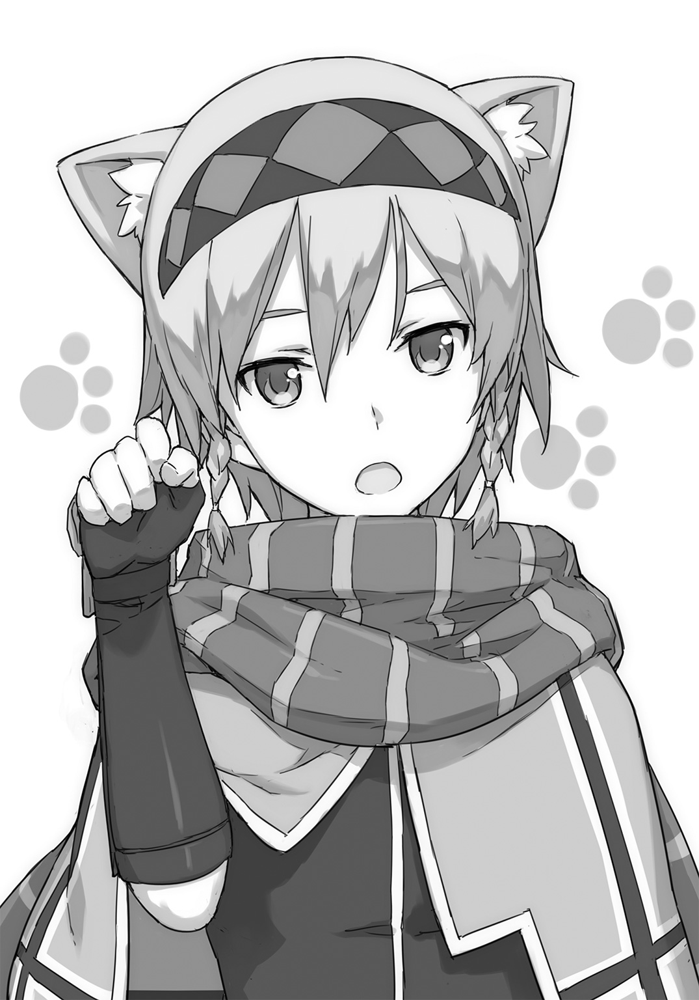

| 英雄教室 3 | |
| 新木伸 | |
この本は縦書きでレイアウトされています。
また、ご覧になる機種により、表示の差が認められることがあります。
ＣＯＮＴＥＮＴＳ
「ローズウッド学園の青春」
「人間未満」
「俺よりうまいものに遭いに行く」
 ダッシュエックス文庫DIGITAL
ダッシュエックス文庫DIGITAL
英雄教室３
新木 伸
第一章「ローズウッド学園の青春」
第一話「テルマエ・ローズウッド」
○ＳＣＥＮＥ・Ⅰ「いつもの教練」
いつもの午後の教練。いつもの平和な授業。
かきんかきんと音が響く。
いつものようにブレイドは、アーネストの剣技の練習相手をやっていた。
アーネストの相手はしんどいので、だれもやりたがらない。しかたなくブレイドが務めることになる。
「は！ ――はっ！ はァッ!!」
アーネストは新しく編み出した剣技を、ばんばん実験的に試してくる。なんの遠慮もない。それこそ、受け損ねたら殺すわよ、とかいう気迫で、斬りつけてくる。ブレイドでなければ、今日の教練中に、もう数回は死んでいる。
かきんかきんと、刃を刃で受け止めつつ、たまに、ふわわとあくびをすると、狙い澄ましたように、鋭い一撃がやってきて――。
「あくびしない！」
鋭い檄で、怒られる。
あくびを毎回、中断されて、ブレイドは生あくびばかり。いつも不発に終わってしまって、すっきりできない。
昼食後のけだるさが抜けなくて、とても眠いのだが。
アーネストも、どうせ付きあってくれるなら、剣の練習ではなく、芝生で昼寝とかにしてくれればいいのに。
――と。
そのとき、大地が揺れ動いた。
ブレイドは足を止めて、そちらを見た。
「なに？」
アーネストも剣を止めて、同じほうを見る。
――と、不意をついて、ひゅんと剣先だけを振るってくる。
まったく油断も隙もなかった。
もっともブレイドは避けていたが――。油断しまくりの隙だらけだったが――。当然。無意識で避けていた。このくらい避けられないと、元勇者は名乗れない。
「なんなの？」
アーネストが言う。
試練場の外の出来事だ。
いまは通常授業で魔力障壁の強度も最低だから、立ち並ぶ柱の向こうに青空も少し見えている。そこに白い柱が立っている。
「なんだろうな......。あれ？」
ブレイドは目を凝らした。
「さっきから。あのあたりで、でっかい気が動いてて......。なんかやってると思ってたんだが......」
遠くで立ち上っている白い柱は......あれは、なんだろうか？
どうも〝水〟のように見えるのだが――。
「気？ なによそれ？ こんなに距離があって、わかるわけないじゃない」
アーネストがブレイドを見て、呆れ声でつぶやいた。
そうか世間一般的には、わかるわけがないのか。ブレイドはまたひとつ〝常識〟を学習した。
○ＳＣＥＮＥ・Ⅱ「温泉」
「な......、なんなのよ......、これ......」
アーネストが呆れ声でつぶやいている。
その隣で、ブレイドは、真上を見上げて笑っていた。
「あはははは！ すげー！ すげー！ すげー！」
地面から水が噴き出している。いや――。水ではない。湯だ。
なんでか、湯が噴出している。
湯はかなりの温度であるらしく、湯気がものすごい。だが天まで噴き上げて、飛沫となって降り注ぐころには、ちょうどよい感じの温度となっていた。
適温だ。
「これは温泉。旅の途中で見たことがあるわ」
ソフィは頭からびしょ濡れでも、クールだった。
「へー。温泉っつーのか」
「火山地帯ではよくある現象。地下水が地温によって熱せられて、熱水が自然に湧出してくる」
「自然じゃなくて、無理やり掘ったみたいだがな」
見れば、ディオーネが、ひいふういって、へたりこんでいる。他にも、一人、二人......。あれって英雄クラスか？
「諸君！ テルマエを知っているか！」
大きな声とともに登場してきたのは――誰あろう、国王だ。
どしゃ降りの湯の中。服も髪も顎髭もびしょ濡れになるのを構わずに、悠然と歩みを進めてくる。
付き添うお姉様方も大変だ。セイレーン女史など、法衣の薄衣が、濡れ濡れで透け透けだ。
「なにをする」
突然、アーネストの手で顔を覆われた。なにも見えなくなる。
「見ちゃだめ」
「なんでだよ」
「なんででも」
「ほら。ソフィ。イェシカ。レナードとカシムを始末して。クレイはいい子ね。自分で目をつぶれるわよね。はい。紳士紳士～」
レナードたちも始末されているようである。
「テルマエとは！ 浴場のことである！ かつてこの国では！ 公衆浴場のことをテルマエと呼んだ！」
国王の声だけが聞こえる。目を塞がれているから、声しか聞こえないとも言う。
「私はここに！ テルマエ・ローズウッドの建立を宣言する！」
「できてねーじゃん。温泉掘りあてただけじゃん」
「では諸君たち！ あとは頼むぞ！」
アーネストの手指に隙間を作って、なんとか覗く。ヘルメットをかぶって、お揃いの作業服を着た一団が、工事道具を手にして、ぞろぞろとやってくるのが見えた。
第一試練場を仮想訓練装置に改装したときにも働いた職人集団だ。
「さあ君たち!! 三日後をお楽しみに!!」
国王の声を聞きながら、ブレイドたち生徒一同は、ぞろぞろと帰っていった。
あーあ、またかよ。
○ＳＣＥＮＥ・Ⅲ「テルマエ・ローズウッド」
ざばざばざばと、それこそもう無尽蔵に、獅子の口から、湯が吐き出されてくる。
見渡す限りの大湯面であった。
果てがどこにあるのか、湯気でかすんで、よく見えないほどだ。
ブレイドたちは、いま、大露天風呂にいた。
たったの三日である。
学寮に増設された大露天風呂――〝テルマエ・ローズウッド〟は、たったの三日で、本当に、完成してしまった。
あの工事のオッサンたち、前のときもタダ者ではないと思っていたが、やっぱりタダ者ではなかった。この仕事の速さと仕上がりの精度はどうだ。
ちなみに温泉は地下千メートルもの大深度から掘り出したそうだ。そこまで掘れば、火山地帯でなくても、どんな場所からでも、たいてい、温泉は湧くのだという。
穿孔系の技を得意とする英雄クラスが、そのためだけに、穴を掘るためだけに、わざわざ三人も辺境から呼びつけられた。そして使い潰された。女医の診断では疲労のあまり二週間は人事不省となるそうだ。ご苦労さんだ。
「あー、キミはー、だれかなー？」
湯気の向こうから、声がした。誰かが近づいてくる。
「なんだ。ブレイドか」
湯気の奥から現れたその男――レナードは、そう言った。そしていまかすかに「ちっ」とか舌打ちも聞こえた。
「誰か探してんのか？」
「うん？ いや。まあね。その。女子をね――」
なんとも歯切れ悪く、そいつは言う。
「アーネストなら、来てねえらしいぞ」
なにかピンとくるところがあって――。ブレイドはそう言ってやった。
「い、いや、マイロードは――ああ、うん、そのほうが、まあ、都合がいいかな」
濡れた長い髪を払って、格好をつける。だがブレイドには通じない。
たいていの女子なら、ここで、「きゃー」と言うところであろうが、男子であるブレイドは、そんな仕草にも、まったくなんにも感慨はない。
「なんで都合がいいんだ？」
「ほら。わかるだろう？」
まったくわからない。
こいつはアーネストが好きなのだろうと、なんとなく見当はついている。
〝好き〟っていうのがどういうことか、ブレイド自身には、よくわからないのだが......。好きというなら、ブレイドはみんなが大好きなのだが。たぶん、その好きと、この〝好き〟は違うのだろう。そのくらいはわかる。
レナードはアーネストが〝好き〟なのだから、そのハダカを見てドキドキしたいというのも、まあわかる。だが、そのレナードが、他の女子のハダカも見てドキドキしたい......？
まーったくわからない。
さーっぱりわからない。
......女子なら誰でもいいのか？
「いや。しかし。国王陛下......。すごいよな」
「なにがすごいんだ？」
「だって......、混浴だよ？ 混浴っ」
なぜかそこだけ声を潜めてレナードは言う。
国王のはからいで完成したこの風呂だが、〝混浴〟というのが、そのルールなのだそうだ。
混浴とはつまり、男専用と女専用とに分かれていないという意味だ。
そもそも、風呂がどうして男女別になっているのか、よくわかっていないブレイドだった。なんで一緒にしていないのか。男女一緒のほうが絶対に楽しいと思う。トモダチ全部と一緒に入れる。男女別だと片方ずつとしか一緒になれない。このあいだディオーネたちと一緒に〝女湯〟というほうに入ったが、あっちに入ると、こんどはまわりじゅう女子ばかりで、男子がいない。それもつまらない。
男子も女子も、どっちもいたほうが、ずっと楽しい。
「はぁい」
湯気のなかから、イェシカが現れた。ひらひらと手を振りながら、太腿の真ん中あたりでざばざばと湯を割って歩いてくる。
レナードの視線をおいかけると、その太腿の付け根あたりに注がれていて――。
おっぱいじゃないんだ。ほー。へー。はー。
「い、イェシカ......、だ、だめだよう......、レナード君も、い、いるからっ......」
堂々と立ってるイェシカの後ろで、クレアが背中を丸めて小さくなっている。一枚のタオルを抱きしめて、体を必死に隠している。
しかし、なんで隠すのか、よくわかんない。
「ねえクレア。それって、なんか、ブレイド君だけなら、見せてもいいって聞こえるんだけど？」
「ブレイド君はっ......、え、えっちな目で......、み、みないもんっ！」
「失礼な。このレナード・インフェルミロード。女性の裸身をいやらしい目で見たことなど、一度としてない」
そのレナードの視線は、イェシカの裸身の下半分に注がれたまま。
なるほど。あれが。〝えっちな目〟というやつか。
ブレイドはレナードの目つきを真似ようとした。カシムやクレイも、おなじような目をすることがたまにある。〝普通〟の男子を目指すブレイドとしては、ぜひとも身につけたいところであった。
「ほら！ ブレイド君が真似しちゃったー！ レナード君っ！ めーっ!!」
あ。クレアに撲殺されてら。レナードのやつ。
三人のもとを離れて、ブレイドは、ばしゃばしゃと湯を割りながら歩いていった。他の誰かを探しに行く。
「よ。国王。いなかったか？」
途中でソフィと出会った。挨拶を交わして、そう聞いてみた。
ソフィは指先を向ける。その方向にブレイドは進路変更した。
湯気に包まれた大露天風呂は、遭難者が出そうな広さであった。
しかし、ソフィって......。髪と同じで、下のほうも青いんだなー。
振り返ってもう一度よく見ておこうと思ったら、彼女の小さなお尻は、もう湯気の向こうに消えてしまっていた。
○ＳＣＥＮＥ・Ⅳ「国王」
国王の姿は、大露天風呂の、たぶん中央付近にある大岩の上にあった。
「おお。ブレイドではないか」
滑らかな岩の上に寝そべる丈夫がいた。他にも総勢十名を超える美女集団が、思い思いの寝姿で、しどけなく、岩や湯中に、よく発達した裸体を横たえている。
「どうかね？ 愉しんでもらえているかね？」
「ん。まあな」
ブレイドは答えた。広い風呂は気分がいい。広すぎるんじゃないかと思いはするが。
「成分を分析させたが、この湯の効能は、すごいぞ。傷、神経痛、筋肉痛、関節痛、五十肩、運動麻痺、関節のこわばり、うちみ、くじき、慢性消化器病、痔、冷え性、などなど。特に病後回復期と、健康増進とに、良いそうだ。まさに君にうってつけじゃないか」
「痔は関係ねえと思うぞ？」
「国王として。毎日の〝湯治〟を命じる」
「なんの根拠があって命令するんだ？」
「ではあとで女医に処方を指示してもらおう。そうすれば従ってくれるかね？」
「まあ入るけど」
べつに命じられなくても毎日入浴するが。
一般人は毎日風呂に入るものなのだ。知っているのだ。ブレイドも一般人になったのだから、毎日風呂に入るのだ。
「ふっふっふ。わかっているぞ。君はこのテルマエに入りたくてたまらない。混浴......とは、ふふふ、良いものだろう？」
にやりと口元を歪めて、国王のやつはそう言った。
男のトモダチとも女のトモダチとも風呂を一緒にできるから、まあ嬉しいかと言われれば、嬉しいこともなくもないが......。
「そういえば、レナードのやつが、すっげえ喜んでいたっけ？」
「ふむ。彼は見所があるね。完全に同意しよう。少女たちの若々しい裸身を見ながら風呂に浸かるのは、誠に素晴らしい......、痛い痛い。痛いよ。セイレーン」
国王のやつの台詞が途中で変わったのは、隣のセイレーン女史に、ぎゅーっと、つねられているからだ。
「しかし、なんで混浴なんだ？」
ブレイドはそう言った。混浴を定めた張本人がここにいる。聞いてみるのがいちばんだろう。
「うむ。それが我が国の法律だからだ。〝露天風呂は混浴であるべし〟――そう憲法にも書かれている」
国王は胸を張ってそう言った。
「憲法にその条文が加えられたのは、つい三日前のことですけどね」
脇に控えるセイレーン女史が、ぐさりとやった。
それに対して、くすくすと笑っている細目の女性は――あれがたしか、この国の法務大臣。
お姉様方は、だいたいにおいて、役職をお持ちである。だいたいにおいて、大臣級となっている。
いわゆる世間一般的にいう〝ハーレム〟というものが、混浴のこの一角にだけ存在していた。
ちなみに〝ハーレム〟というのは、女の中に男が一人という意味である。そのくらいブレイドは〝常識〟として知っている。普通極まりない一般人としては、当然の知識だ。
「まー。せいぜい、やっててくれー」
ブレイドは背中側に向けて手を振りながら、湯の中を歩いた。
この風呂。やたらと広くて、トモダチを探すにも一苦労なのだ。はぐれたら一生出会えなさそうな広さがあるのだ。
ブレイドはトモダチを探して露天風呂をざぶざぶと歩き渡っていった。
○ＳＣＥＮＥ・Ⅴ「いつもの食堂」
いつもの昼時。いつもの食堂。
ブレイドは食堂にいた。
食堂はいつも通りの賑やかさだ。
ブレイドたちのテーブルに座る面々も、賑やかに会話しながら、食事をしている。通称〝アーネスト組〟といわれる面々だ。
「ねーねー。ごはん食べたらお風呂行こっかー」
「えー？ でも時間ないよう？」
イェシカが言って、クレアが答える。〝風呂〟というのは、もちろん露天風呂のことだ。テルマエ・ローズウッドのことである。
「午前の教練で汗かいたっしょ。午後の講義のあいだ、ずっと、ベタベタしたまんまなの、いやよ、あたし」
「そうだけど......」
イェシカの誘いに、クレアが迷っている。
ブレイドはいつものようにカツカレーを食いながら、皆の話を聞くでもなしに聞いていた。
膝の上に載せたクーが、「あーん」と言ってきたときには、カツの部分を選んで口に突っこんでやるのが、〝親さま〟としての務めであった。
その際、もしカレーがカツに付着していた場合には、クーは辛くて火を吐いてしまうので、カツの切れ端を舐めてカレールーを除去してやらねばならない。
「クレイたちもくる？」
「ちょ――ちょっ、い、イェシカっ......」
イェシカが男子を風呂に誘う。なぜかクレアは狼狽している。――なんでだろ？
「い、いや......、そ、その......、お、お誘いは、う、嬉しいんだが......」
「そ、そうだな......、え、遠慮......しとくかなっ」
クレイとカシムの二人は、そう答える。
椅子から腰が半分逃げていて、いまにも逃亡していきそうな感じだ。
でも......、なんで？
「そ。ざ～んねんっ♡ ――ブレイド君はどうする？」
「ん？ 行くぞ。な？ ――クー？」
「親さま、向こう岸まで競争なのじゃー」
膝の上の愛娘は、首を真上にねじ上げて、愛らしい声でそう言ってきた。
「だめよ」
厳しい声が響いた。
パスタをぐりぐりとフォークの先でやっつけながら、なにか苦いものでも口にしているような顔で、アーネストは言った。
「だめよ。混浴だなんて。は、は、は......、破廉恥よ！」
「でも憲法だぞ？」
「そ――それは！ だってそんなの国王が勝手に――！」
「おまえいま〝陛下〟付け忘れてるぞ？ 不敬じゃないのか？」
ブレイドはそう突っこんだ。いつも突っこまれていることだ。呼び捨てにするといつもは怒るのだ。アーネストは。
「ところでおまえ。また入らないのか？」
「行くわけないでしょ！」
アーネストは怒鳴り声で返事する。
「でもおまえ、風呂入らんと......、汚いぞ？」
「ちゃんと入ってるわよ!! 部屋のお風呂で!!」
そうか。ブレイドの部屋と同じで、アーネストの私室は風呂つきの部屋だった。
はじめは便利だなー、と思っていたのだが――。〝テルマエ〟を知ってしまってからは、もう、部屋の狭い風呂など、使う気にもなれない。
「なー？」
「のー？」
愛娘のクーと同意のうなずきを交わし合うブレイドをよそに、アーネストはひとりで、ぷう、とむくれていた。
○ＳＣＥＮＥ・Ⅵ「放課後のテルマエ」
午後の授業が終わると、皆、テルマエへ一直線だった。
昼休みにも行水的に湯に浸かって汗を落としたが、放課後の風呂は、また格別だった。
夕食開始までの長い時間、ゆ～ったりと浸かることができる。
「親さまー！ みてみてなのじゃー！」
クーのやつが犬かきで泳いでいる。「親さまー！」と声をかけられたら、手首から先を湯の上に出して、ゆらゆらと振り返してやるのが、親さまとしての務めであった。
そのクーの向こう、遠くのほうでは、大きな水柱が二つあがっていた。
このあいだの騒動を経て、ブレイドの〝子供〟になった霊鳥の双子――アインとツヴァイも、風呂にやってきているようだった。空から直接、急降下して水浴びをしにやってくる。
「アーネストのやつも、くればいいのになー」
左隣に声をかける。
「ねえ」
イェシカがうなずいて返す。
「なー」
こんどは右隣に声をかけた。
「そうね」
こんどはソフィがうなずいて返す。
「イェシカ......、すごいよー......、尊敬しちゃうよー......」
なぜかクレアが、ちょっと離れた岩の陰から、そう言ってくる。
クレアはいつもわりと近くにいるのだが、なんでか、五メートル圏内に近づいてこない。
「あ。おーい！ クレイー！ カシムー！」
男子二名の姿を湯気の向こうに見つけて、ブレイドはぶんぶんと手を振った。だがなぜか男子二名は、手を軽く振って、苦笑いを浮かべながら、あっちに行ってしまった。なんだろう？ いまのジェスチャー。「むりむり」とか、そういった感じだったけど。
「やあ美しい女性方。こんなところで出会うなんて奇遇だね。ご一緒してもいいかな？」
「いいわ」
ソフィがうなずく。イェシカが腕組みをしてレナードを迎える。
「奇遇じゃないし。こっち、まっしぐらだったし。――あなただけよねー。レナード。なんでうちの男子って、みんな、ああなの？」
「ふ。......皆きっと、Ｐｉ―――、が付いていないんじゃないかな。Ｐｉ―――、が」
「ピーって、なに、それ？」
「きっとＰｉ―――、に、自信がないんじゃないかな」
「だからピーって、なんなの？」
イェシカが問う。レナードが答える。だが二人の会話は、一向に嚙み合わない。
「だめえええ！ あうあうっ！ やーめーてー！ あ―――！」
なんか悲鳴が聞こえてきた。
マリアがこちらに向かって、まっすぐに、すたすたと歩いてくる。
「だめー！ マオ！ だめええーっ！」
口では悲鳴をあげながら、その足取りには、一片の躊躇もない。お下げの三つ編みの、左をほどき、右をほどき、ふぁさっと手で背中に払うと――。
傲岸不遜な表情が現れる。
マリアはいわゆる二重人格なのだった。三つ編みでいるときには、おとなしくて控えめなドジっ娘のマリア。三つ編みをほどいてロングヘアになると、魔王の娘である――魔王ちゃんになる。女の子連中は〝マオ〟という愛称を付けて呼び、男の子連中はもっぱら親しみを込めて〝魔王ちゃん〟と呼んでいる。
「ふ。魔族たるもの。肉体を顕示せずにどうする」
近くの大岩に腰をかけた魔王ちゃんは、優雅な仕草で足を組んだ。レナードのガン見する視線に気がつくと、薄く笑いながら、足を組み替えたりもする。
濡れた岩の上に寝そべると、ソフィ以上イェシカ未満の胸が、起きていたときよりわずかに広がり、薄くなって流れる。
へー。おっぱいって流れるんだ。おもしれー。
「ふふっ......。悪くはないな」
じーっと見ていたら、魔王のやつが、妖しげな目つきを向けてきた。
ん？ どーゆー意味？
「ブレイドのやつは、我の裸身に夢中なようだぞ。――我は妾でよいかと思ったが、どうやら妾は、おまえのほうであったな」
魔王のやつは、あさっての方向に向けて、そう話しかけた。
そっちに目をやると――。
赤い人影が、ささっと大岩に隠れた。
「なにやってんだ？ アーネスト？」
「ち、ちがう！ わたしはアーネストじゃないから！ 人違いだから！」
「それ、なにかの遊びか？ どういうルールだ？」
アーネストは岩の後ろから、顔半分だけを出して、こちらを見ている。
「なによ――。ソ、ソフィと、イェシカと......、両手に、は、花っ!? 信じらんない信じらんない！ ふ、不謹慎よっ！ は、破廉恥よっ！ し、死ねばいいのに！」
「おーい。アーネストー......？ ぜんぶ聞こえてるぞー？」
「もう！ わかったわよ！ 出ていくわよ！」
アーネストはようやく岩に隠れるのをやめて、岩から姿を現した。
両手で体を隠しているのだが――。そもそも、水着をしっかりと着込んでいる。隠す必要はまったくない。
まえにブレイドに泳ぎの特訓をしてくれたときの、真っ赤なビキニだ。
「おーい、アーネスト。風呂の中じゃ、服は脱ぐもんだぞ」
「これ水着だも！ 服じゃないも！」
「いや服だろ」
ブレイドはため息をついた。
「......この国の憲法でなー。〝衣類およびタオルを湯に浸けるべからず〟――って、なってるらしいぞー」
さらに付け加えるなら、「水着は衣類に含まれる」と但し書きもある。まるで見抜いたかのように憲法が制定されている。
「ねー。アンナー......？ もう諦めちゃおうよー？」
アーネストの親友であるところのイェシカが、そう呼びかけた。
「だいたい、あなたのハダカ、もう大暴落してるでしょ」
「大暴落って......」
アーネストは炎の魔人に変身するたびに、毎回、服を全焼させている。消費カロリーの問題があって、彼女は長時間変身を続けていることができない。膨大なカロリー消費ゆえに、そのうち変身を解くことになるわけだが、そうなるとマッパになってしまう。全裸にマントで魔剣を持って走る姿から、〝怪人裸マント〟などと、不名誉な異名を拝領している。
「あれだけ素っ裸で走り回っといて、いまさら恥ずかしいとか......わかんない」
親友であるところのイェシカにまでそう言われている。
「だって！ 戦闘中だったも！ そんなこと言っていられなかったも！」
アーネストの言い分も、たしかにもっともだ。
戦闘中は裸がどうのなどと、言っていられない。
「そうだ！ 戦闘においては！ そんなことは言っておられんのだ！」
ここにも同意を示す者がいた。
○ＳＣＥＮＥ・Ⅶ「アーネストの試練」
野太い声で叫びつつ、湯をばしゃばしゃと割って歩いてくるのは、誰あろう――国王だった。
「へ、陛下――っ！」
アーネストが膝をつく。君主を迎える。
他の者たちも、それなりに居住まいを正す。
ブレイド、及び、その脇にいるソフィと、大岩で寝そべっている魔王ちゃん。あと、遠くでばしゃばしゃ泳いでいるクー。――これらは数少ない例外である。
「つまりこれは！ ある意味においては！ 実戦を想定した訓練でもあるわけだ！」
国王は、ばばーんと、腕を大きく組んで仁王立ち。
「陛下。陛下。前。前っ。――前をすこしは隠してください。それ凶器ですから」
イェシカが目を手で覆いながら言う。しかし指の隙間はおおいに開いていて、じつはしっかりと見ていたりする。
「最前線においては！ 着替えもシャワーも！ 男女別などということはない！ 我が王国の軍隊では、男女別の更衣室など用意しておらん！」
「なんでですか！」
叫んだのはアーネスト。なんと国王に食ってかかっている。
不敬、不敬、と、すぐに言うくせに、明らかに異議を唱えて、突っかかりに行っている。
「憲法はともかく、戦場のほうはホントだぞー。昔から、どこでもそうだぞー」
べつに国王を擁護するわけではないのだが......。それは本当のことだったので、ブレイドはアーネストに言ってやった。
「ええっ！ ――どうしてっ!?」
「いや。だから。どうしてもなにも。昔からだってば」
戦場で生まれ育ったブレイドにしてみれば、男女別のほうが、むしろ奇異に感じるのだが......？ 戦場では男も女もなく、誰もが一人の人間だ。一人の兵士だ。兵士がいちいち「きゃー」とか「うおー」とか言ったりしない。資源の限られた戦場で、施設をいちいち男女別に二つ作っている余裕もない。戦場においては、戦闘に勝つことが至上目的であり、〝快適さ〟や〝ゆとり〟などは二の次とされる。男女別の〝恥じらい〟とか〝慎み〟とかいうものも、もちろん、置いてけぼりにされる。
「そういうわけなので。アーネスト君。脱ぎたまえ」
「どういうわけですか！」
「いま言った通りの意味だが。これは実戦的な訓練なのだよ」
「ですが――！」
「アーネスト君。君は当学園の最優秀生徒であるな？」
「え？ ええ......、まあ......」
アーネストは、なぜか視線をブレイドに向けてから――国王に対してうなずいて返した。
「その君が、皆に率先して、手本を示さないようで――どうする？」
「え？ いえしかし！ これは――っ!?」
「えーい！ 聞きたくない！ 聞きたくない！ 聞きたくないわ！」
国王は子供みたいに地団駄を踏んだ。
「私はとにかく！ 若い少女の裸身がーっ！ 見たい！ 見たい！ 見たいのだあああ！」
国王はさらに地団駄を踏んだ。
すっかりガキんちょだ。
足をばたばたさせるたびに、股間のそれが、ぶるんぶるんと揺れる。女子一同から〝凶器〟と評されるそれは、そのうち、ぶるんぶるんではなくて――ぐるんぐるんと回るようになった。
時計回りだ。右回転だ。
「おーい、アーネストぉー。忠誠心が試されているぞー」
ブレイドは無責任にそう言った。
「......わかりました」
地の底から響いてくるかのような、壮絶な声色で――アーネストは言った。
「ですが――、私にも考えがあります」
アーネストはなにを思ったか――後ろ手に持っていた剣を、ずびっと国王に突きつけた。
切っ先は揺るぎもせずに、国王に向けられている。
色々とまる出しだったオッサンは、びくう、と身を固めた。ぐるんぐるん回っていた凶器も、回転を止めて、下を向いてうなだれる。
てゆうか。剣持って風呂入ってたのかよアーネスト。着衣どころじゃないな。まあ〝帯剣して風呂に入るべからず〟とは憲法で決まってないからな。
「おーい、国王ぉー。君主の器が試されているぞー」
ブレイドは気軽に野次を飛ばした。
剣突きつけられたくらいでなにビビってんのこのオッサン。おまえ昔なんて、もっと、ものスンゲー修羅場くぐってきてたじゃんよー。
「落ち着きたまえよアーネスト君」
「いえ。陛下に言われて、わたくしも心を決めました。魔剣の使用を許可されたく存じます」
「いやいやいや。許可できんな。うんできんよ。どうしてもというのであれば、仮象のほうでやろう。うん。そうしよう」
「いいえ。陛下のご命令。〝何人たりとも衣服を着用してテルマエを利用するに能わず〟――を、いますぐ、実行したく存じます」
アーネストは穏やかな声でそう言った。
「いやいやいやいや。ほら。そういうのは。――ほら。セイレーンだけで足りておるのでな」
国王がなにか言ってる。〝そーゆーの〟とは、なんなのか――。
アーネストが剣を構えていても、ブレイドはゆったりとリラックスしていた。
彼女が国王を惨殺するつもりではないということはわかっている。殺気が足りない。
彼女は剣を構えた。頭上に高々と差しあげて――。
そして――点火した。
魔剣《アスモデウス》は業火に包まれた。その炎は握りから腕を伝ってアーネストの全身に広がった。
全身が燃えあがる。一本の巨大な火柱と変わる。
熱気が吹きあがる。湯のいくらかが蒸気と変わる。
湯のけむりが晴れわたったとき、そこには――。
炎の魔人が立っていた。
アーネストが身に着けていた赤いビキニは――燃えカスとなって、湯面を漂っていた。
《どう。裸になったわよ？》
炎の魔人はそう言った。
空気自体が震えるような不思議な声が、顔――と、おぼしき部分から聞こえてくる。
完全に炎と化していて、輪郭の定まらぬその場所は、どんな表情をしているのかわからないものの――。
きっとドヤ顔だ。たぶんドヤ顔だ。絶対にドヤ顔だ。
見ないでもわかる。
「なー。アーネストー」
ブレイドは言った。
《なぁに？》
炎の魔人は、片足に体重をのせ、腰に手をあてて――気取ったポーズで答えてきた。
「それって......、ズルなんじゃね？」
《ズル？ なにがズルなの？ なんでズルなの？ ――そんなわけないでしょ？ ハダカになれっていうから、なったのよ。ほら。ハダカよ。ほら――？ なーんにも着てないわよ？ なにか文句あるの？ あるわけないわよねー？》
ブレイドは肩をすくめた。
皆に首をめぐらせて、意見を求めると――。
ＢＯＯＯＯＯＯＯＯＯＯ――!!
一大ブーイングが沸き起こった！
《ちょ――！ なによ！ なんでだめなの！ 我が国の憲法で決められているのは！ テルマエで入浴するときには衣類の着用を禁ずる――ってことだけでしょ！ 変身して入っちゃダメなんて！ ないじゃない！ ないんだも！》
ＢＯＯＯＯＯＯＯＯＯＯＯＯＯＯＯＯＯＯＯＯＯＯＯＯ――!!
ブーイングは鳴り止まない。大音量、かつ、大合唱にて鳴り響く！
「おーい。アーネスト......。なんか足元、じゅうじゅういってるぞー」
ブレイドはそう声をかけた。
アーネストは変身して炎化している。つまり一本の火柱となっている。高密度の炎が人の形を取っているのだ。それがお湯のなかに入っていればどうなるのか。
足元はじゅーじゅーいっている。そして周囲のお湯は、ぐつぐつと煮立っている。
「おーい。アーネストー。こっちこっちー。もうちょっと熱くしてくれー」
ブレイドはアーネストを手招きした。露天風呂は開放感があって好きだが、お湯の温度はもうすこし熱いほうが好みだ。
「アンナー。こっちもー」
「マイロード。こっちにも」
「アーネスト君。こちらにも頼むよ」
皆が呼びつける。アーネストは、すっかり風呂焚き係となっていた。
《わたしは薪かなにかかっ！》
アーネストは大声で叫ぶ。だが火柱であることは確かである。
「あーもうっ！ どっち！ まずどこから!?」
アーネストは皆に呼ばれて、あっちにざぶざぶと行って、じゅっじゅっとやって、ごぼごぼと沸かして、こっちにざぶざぶと歩いて行っては、じゅっじゅっとやって、ごぼごぼと沸かす。
そうしているうちに、アーネストは突然――。
《あっ......、だめ》
――そんなつぶやきをあげた。
《ちょ......、やだ......、消えちゃう......、なんでこんな早く？》
炎化は大量の熱量を食う。
ただ灯っているだけで、その消費エネルギーは、毎時一〇〇万キロカロリー――。
わずか一分間ごとに、四日分のカロリーを燃やし尽くしてしまう計算だ。デブっていたときのアーネストでさえ、活動時間は三〇分が限度。
スリムなときのアーネストだと、もっと短くなる。
「そりゃ。湯を蒸気にかえてるんだから、いつもの何倍もエネルギーを食うだろ」
《消えちゃう......、消えちゃう......、だめっ......、いま消えたらっ――！》
アーネストは、うめき声をあげながら、身悶えをしている。
だが抵抗もむなしく――。
消えてしまった。
炎化していた肉体が温度を失って、実体へと戻る。再構成された肉体は――当然、裸身だ。彼女の本来の姿以外のものは、一切、復元されない。衣服は炎化の際に焼失している。水着も同様だ。
「見ないで！」
ばしゃっと飛沫をあげて、アーネストが湯の中にしゃがみこむ。両手で胸をかばっている。
「いやー。アンナー......。いっつもその格好で、戦場駆けめぐってんでしょ」
アーネストの親友であるところのイェシカが、呆れ声で言う。
「アンナ。私。すごいと思う。私だったらできないもん」
アーネストの親友であるところのクレアが、無自覚に、トドメを刺しにいく。リスペクトからの言葉なのだろうが、受け取りようによっては、鋭利な刃物に近く、トドメを刺すに等しい。
アーネストはしゃがみこんで、ぷるぷると震えている。湯の上に出ている肩を、小刻みに震わせている。
ブレイドは、親友二人とも違うことを言ってやることにした。
「おまえが見ないでっていうのなら見ないさ」
なんでハダカを見られたくないのか、まるで、わっかんないんだけど。
相手の嫌がるとわかっていることなら、やるつもりはない。
「......ほんと？」
アーネストは肩の震えを止めて、そう訊いてきた。
「俺がうそついたことあるか？」
「ホント？ 約束する？」
「ああ。約束する」
「ぜったい。ぜったい。ぜったい。......見ない？」
「ああ。見ない」
「もういっぺん言いなさいよ。約束しなさいよ」
「乙女ねー」
イェシカの言葉に、ぎぬろ、と眼力が飛んだ。湯の上を衝撃波が走って、イェシカのところで、ばっしゃーんと弾けた。
ほら。やっぱあれ。物理的衝撃力あったよ。
「おまえが見ないでっていうなら見ないさ。見てっていうなら見るけど」
「言うわけないし」
「いやー。ブレイド君。それ意味深すぎるわー」
また衝撃波が走っていって、ばっしゃーんと弾ける。イェシカがもんどりうっている。
「そ、そっち――」
「ん？ なんだ？」
アーネストがなにか言おうとしている。ブレイドは辛抱強く、言葉のつづきを待った。
「そ、そっち行っていい？」
「ん？ かまわないが」
ブレイドが言うと、アーネストは背中を向けたまま、つつつーっと、移動してきた。
そしてブレイドの背中側から、ぴとっ、と、肌を押しあててくる。
「きたけど」
背中と背中を合わせながら、アーネストはそう言った。
「おう」
ああ。なるほど。
背中同士をくっつけあっていれば、ハダカが視界に入ってしまうこともない。アーネスト。あったまいー。
ブレイドは空を見上げた。
夕刻の空は――オレンジと濃紺とのグラデーションに染まっていた。
いつも天頂に輝いている大小二つの月が、そろそろ見えはじめている。
オレンジの空を渡って、鳥が鳴きながらねぐらに向かって飛んでゆく。
涼やかな風が、ひゅうぅと吹き抜けて、湯煙が晴れ渡る。
「な......。いいだろ？」
背中をくっつけあったアーネストに、ブレイドは声をかけてみた。
「だ、だめよ。――そんなのだめに決まっているでしょ」
「なに言ってんだ？」
「え？ ちがうの？」
「乙女ねー」
ぎぬろ。しゅばばば。ばっしゃーん。
「風呂だよ」
ブレイドは言った。
「え？」
「な？ いいだろ？」
大空のもと――。
開放感あふれる露天風呂で――。
トモダチと一緒にフロに浸かる。
こんな楽しいことが、ほかにあるだろうか？
いや。ない。
ブレイドはアーネストに背中をあずけて、体の力を抜いた。もたれかかる。体重を預ける。
「あっ？ あの、ちょっ――」
「いいだろ？」
慌てるアーネストに、ブレイドは、そう問いかけた。
何十秒か、何分か、ずいぶんと時間が経ってから――。
「......うん」
アーネストは、そう言った。
背中を預けることに対する肯定なのか、風呂がいいということに対する肯定なのか、どっちなのかは、定かではなかったが――。
第二話「男子たちのコイバナ」
○ＳＣＥＮＥ・Ⅰ「いつもの教練」
「ねえブレイド。どっちが勝つと思う？」
「さあなー。勝ったほうが勝つんじゃないのかー」
いつもの午後。いつもの教練。
かきんかきんとアーネストの斬りこみを受け止めながら、ブレイドはアーネストの会話に、そう返した。
二人で口にしている話題は、隣でチーム戦をやっている男女についてだ。
クレイ、カシム、イェシカ、クレア――いつもの仲良し四人組が、今日は二対二に分かれて、チーム戦をやっている。男子対女子の対戦のためか、いつにも増して声援が賑わっている。
「なによそれ。ジョーク？」
ぶわっと振りかぶって、アーネストが火球を投げてきた。
なんと〝溜め〟がまったくない。
「いや。べつにジョークじゃないんだが」
三メートルはありそうな火球を、ブレイドは両断した。
べつにジョークを言ったつもりはないんだが......。そんな、常人なら骨も残らず焼失するような火力で、突っこみを受けてしまうほどだったか？
戦場において、どちらが勝つかなんていうことは、じつはわからない。
古強者が一刺しで倒れたりする。いかにも生きて帰ってこなさそうな頼りないのが、ひょっこり生還してきたりする。
戦場においては、強いやつが勝つのではなく、最後に立っていたやつが勝ったやつである。
そういう話をしたつもりなのだが――。
アーネストが手を完全に止めて、隣の試合を観戦しはじめたので、ブレイドは手持ち無沙汰になってしまった。
しかし。すげえな。この剣。
ブレイドは自分の剣を見た。
いま瞬間的に闘気を通わせたのだが、まったく劣化していない。
このあいだ支給してもらった剣は、なまくらじゃなくて、結構な名剣だった。魔剣といってもいいほどのランクである。
大事に使えば、これは、一週間ぐらいは保ってくれそうだ。
アーネストが、ぜんぜん相手してくれないので、しかたなく剣を鞘に収めて、隣に並んでゆく。
戦っているのは、男子が二名に、女子が二名。
「イェシカー！」「クレアー！」
女子二名のうち、声援に対して「ハーイ♡」とウインクで応じているのがイェシカ。恥ずかしそうに照れて、うつむいているのがクレア。
「クレイー！」「カシムー！」
男子二名のうち、女子の黄色い声援を浴びて、かしこまって固くなっているのがクレイ。調子に乗ってバク宙キメているのがカシム。
イケメン真面目剣士のクレイは女子の人気が高い。お調子者のカシムは、別な意味で、別な種類の人気がある。
クレアやイェシカらと合わせて、この四人は、もともと下級クラスからの進級組だ。下級から上級への垣根は、なかなか越えられないものらしく、学園の中では四人はちょっと有名な存在となっている。上級クラスには、他にも、アーネストやレナードやソフィといった面々がいる。だが入学したときからずっと上級クラスであった彼らよりも、クレイたちのほうが、一般生徒の声援の音量は大きくなる。
四人はブレイドがこの学園にやってきたとき、下級クラスではじめて出来たトモダチでもあった。ブレイドのほうは、ほんの数日で上級クラスに上がってしまったのだが、クレアたちも「私たちもすぐ上がるから」という言葉通り、一月もしないうちに上がってきた。
「ブレイドは、誰を応援するの？ やっぱりクレア？」
横に並んできたアーネストが言う。なんでクレア？ なんでやっぱり？
「俺は応援はしないよ。強いほうが勝つ。それだけだろ」
ブレイドは言った。それが戦場の真理だ。
「さっきは勝ったほうが強いほうだ、とか言ってたくせに」
「そうとも言う」
正確にいうと、最後に立っていたほう、生き残ったほうの勝ち――だったが。
元勇者の性か、ブレイドは特に意識せず、四人の戦力を推し量っていた。
声援の量はともかくとして、実際には、実力の差は明白だ。
正統派剣士のクレイと、暗殺者のカシム。かたや、戦闘が本領ではない諜報員志望のイェシカと、救命士が本職の撲殺天使クレア。
どっちが有利かは、まったく明らかであった。
「ほら、もうすぐ決まるわよ」
アーネストが言う。ブレイドも戦いに注目した。
「――えーいっ！」
クレアのモーニングスターが、脳天に決まった。
クレイは脳漿を炸裂させていた。
ちなみに本日の授業は、仮象のほうなので、べつにまったくなんにも、問題はない。
仮想空間で行われている授業は寸止めなし。ただし絶命してしまった人間は、授業からリタイヤして、現実世界で一人寂しく反省タイムをすることになる。
「え？ ......か、勝ったの？ 勝っちゃった？」
「イェーイ！」
クレアとイェシカは、手を取りあっている。ぴょんぴょん跳ね回って、二人でダブルピースを決めている。
そのあいだに、倒れていたカシムは、血の海でぱたりと事切れた。
ちなみにブレイドには色々と鮮明に見えているが、それはＲ勇者指定だからノーモザイクなのであって、皆にはモザイクがかかって見えている。
「ほら。やってみないとわかんないだろ」
「そうね。ブレイドの言った通りだったわね」
アーネストはそう言った。彼女も、予想としては、男子たちの勝ちだったはずだ。
しかしそうはならなかった。それが戦いというものだ。
「――アテンション！」
アーネストは、よく通る大声をあげた。
さすが女帝。その一声で、皆はすぐにこちらを向いた。注目が集まる。
「はい。ブレイド。――解説っ！」
「ええっ？ 俺がすんのかよ？」
「はやくする」
しかたなく、皆の前に出る。
「女子チームの勝因だけど。研鑽を怠らなかったことだな」
ブレイドは話しはじめる。
いまの試合を見ていた者が半数ぐらい。残りの者たちのために、いまの戦いの流れを、ブレイドはざっと説明してやった。ブレイド自身はアーネストと戦っていたり、剣を見ていたりしたが、周囲で起きている出来事は、見ていなくても気配で捕捉している。半径五十メートル程度のなかで起きることは見ているのと同じくらい詳細に語れる。そのくらい出来ないと、背中から襲われたときに不覚を取ることになってしまうので、勇者など、到底、やっていられない。もう勇者じゃないんだけど。
最大の勝因はクレアの進歩だ。
クレアはモーニングスターを振り回しながら、復元能力も駆使できるようになっていた。
するとイェシカは、捨て身の奇策を取り続けることができる。度胸と苦痛に耐える精神力と相棒への信頼が必要だが、イェシカにはどれも備わっている。それもそれですごい。斬られるとわかっていて飛びこんで、本当に斬られて、復元してもらえるとわかっていて復活してゾンビアタックとか。ブレイドも二の足を踏みそうだ。痛いのヤダし。
第一試練場の仮象がバージョンアップして、クレアの復元能力もシミュレートするようになったのは、つい最近からだ。
きっとこれから男子は勝てないだろう。
「そしてクレイとカシムの敗因はぁ――」
言おうか言うまいか、どうしようか迷ったあげく――。
「研鑽を怠ったことだな。自分たちの実力のうえに、あぐらをかいていたことだー」
二人はいまいない。脳漿まき散らしたのと、出血多量とで、〝戦死〟して、現実世界のほうに退場している。だがここでの話が、皆の口から伝わるだろう。
ブレイドは、言いにくいことをハッキリと口にした。
〝おまえらは慢心して修行を怠った〟――と、あとで彼らの耳に伝わるように、皆の前で、きちんと言った。
それがトモダチだろうと思った。
○ＳＣＥＮＥ・Ⅱ「男子たちの反省タイム」
授業の終了を告げるチャイムが鳴って、現実世界に戻ってみれば――。
案の定、クレイとカシムの二人は反省タイムをやっていた。
寝っ転がっていた場所から、まったく動かず、床石の上に正座を決めて、五メートル前方に目を据えて、ぶつぶつとつぶやいている。膝を握りしめる指には力が入り、関節が白くなるほどだ。
「あ、あの......、クレイ？ か、カシム？」
クレアがおそるおそる声をかける。
びくう、と、クレイとカシムの二人は、見てわかるほどに動揺した。
だらだらと脂汗さえ浮かべて、女子たちを見る。
「そ、そんなに気にしなくて......、いいと思うの。さっきの、まぐれだよぅ......、たぶん」
「い、いや......。いま反省していたところだ。これは俺たちの実力不足が招いたことで――」
「うそだよぅ。クレイたちのほうが本当は強いもん」
気を遣っての言葉なのだろうが――。クレアのそれは、男子たちの心をさらに深々とえぐっている。
「ね。ブレイド」
隣に立つアーネストが言う。
「なんだ？」
「傷口に塩を擦りこむという言葉があるわよね」
「そうなのか。あるんだろうな」
「あれの意味。わたしいま、すっごく、よくわかっちゃった」
「俺もだ」
ブレイドはうなずいた。
「勝っちゃって......、ご、ごめんねっ！」
両手を体の前に揃えて、ぺこりと頭を下げる。長い黒髪が、ばさっと前に振れる。
これがトドメを刺した。
「う......、うわ―――――ん......！」
クレイとカシムの二人は、泣きながら走っていった。
正座で足が痺れているせいか、途中で何度かコケながら、それでも視界から消えるまで必死に走って退場してゆく。
「泣いたっ」
「泣いたわ」
「なぜ泣くの？」
「あっあっ。泣かしちゃった......」
「泣かしおった」
「クレイもカシムもだめだめなのだー」
女子一同がコメントを述べる。
ちなみに、最初から順に、イェシカ、アーネスト、ソフィ、マリア、魔王ちゃん、クー、という順である。
他の女子たちも、ぽかーんとした顔で見ている。女子のほとんどはわからない側の顔をしている。
男子たちのほうはといえば――。皆、一様に、顔に同情を浮かべている。
ブレイドも例外ではなかった。
泣くな。そりゃ泣くよな。
あーあ......。泣かしちゃったよー。
○ＳＣＥＮＥ・Ⅲ「風呂での男子会」
「なー。元気出せって」
夜もだいぶ更けた頃。
ブレイドは、クレイやカシムらと共に、露天風呂に浸かっていた。
いわゆる〝裸の付き合い〟というやつである。
ブレイドは落ちこんでいた二人を、まずなだめて、つぎに励まそうとしていた。
風呂は広すぎるほど広い。奥のほうまでざぶざぶ歩いていけば、周りに誰もいないところぐらい、いくらでもあった。
こーゆーの、〝男子会〟とでもゆーのだろーか？
アーネスト主導でたまに〝女子会〟とゆーのをやっている。女子たちだけの集まりだ。
なら男子たちだけの集まりであれば、それは〝男子会〟と呼んでいいはずだ。......うん。たぶん。
「一回、負けただけじゃん。次勝てばいいじゃん」
「ブレイド。おまえにはわかんないんだよ。おまえ。女の子に......っていうか、誰にも負けたりしないだろ」
「しないけど」
「ほらみろ」
クレイは言う。
「でも俺、べつに負けたって、気にしないぜ？」
自分はもう勇者じゃない。だから負けたってかまわない。
勇者をやってたときには、負けることができなかった。勇者が負ければ、人類が滅んでしまうからだ。
「嫌なんだよ。他の誰に負けたっていいけど。でも俺は......、イェシカには......」
「なんでイェシカに負けると、いやなんだよ？」
ブレイドは訊いた。単なる負けず嫌いなのかと思いきや、個別に負けたくない相手がいるというパターンらしい。ライバル認定とかか？ でもなんでイェシカ？
「わかるだろ」
「わかんねーよ」
ブレイドが言うと、クレイのやつは、深く、重たく、ため息をついた。
そしてブレイドの顔を正面から見つめて、なにか重大なことでも白状するかのような顔で、口を開く。
「じつはさ。お、お、俺......。い、い、い、イェシカのことが......、す、す、す、好き！ ......なんだ」
「ふーん」
「ふーん、てな。おまえな......」
「俺も好きだぞ？ イェシカのこと？」
「えっ？ ええっ！ そ、そうなのかっ!? ――いや、それは困るっ！」
クレイは慌てている。なぜ慌てる？
「ブレイド、おいブレイド――」
隣のカシムが、クレイを肘で小突く。クレイに替わって話を引き継ぐ。
「――おまえって、アーネストかソフィか魔王ちゃんか、そのうちの誰かが好きなんじゃねーのか？ オレたちそう思ってたよな？ なー？」
クレイはこくこくとうなずくばかり。
「ああ。アーネストもソフィも魔王ちゃんも、みんな好きだぞ？」
「えーっ!? そ、そうなのかっ!?」
「あと。――クレイ。おまえも。――カシム。おまえだって」
「え？ ああ。なんだよ......。びっくりさせんなよ。そっちの〝好き〟のほうかよ」
クレイとカシムは、なんか安心した顔になった。
「オレたちのは、そうじゃねーんだ」
「どう違うんだよ？」
「おまえにはわかんねーよ。おまえ。女の子、好きになったこと、ねーんだろ？」
カシムは言う。クレイはこくこくとうなずくばかり。
「う～ん......？」
ブレイドは腕を組んで、考えこんだ。
「......それは、あれか？ 〝食いたい〟ってやつか？」
昔々、ずっと昔、五歳かそこらだった頃。ディオーネのお尻に食いついたことがある。うまそうだった。馬肉と思った。
「ちげーよ、ぜってー」
カシムが言う。
「そうか」
ブレイドはうなずいた。やはり違ったか。
「い、いや......、ち、ちょっと近くないか？」
クレイが言いだす。
「そ、そういえば、そうかも......？」
こんどはカシムまでブレはじめる。
「どっちなんだ？」
ブレイドは言った。
「ま、まあ......、とにかくだ！」
ごまかした。
「俺はイェシカが好きなんだ」
クレイが胸を張る。
「そしてオレは、もう気づいていると思うけど......、クレアが――」
「いま気づいたぞ」
「クレア......。いいよなぁ。清純で。真面目で。優しくて。なんかさ。女の子たちのなかでさ。一番じゃないか？ 正統派の女の子って感じでさ。......オレみたいなワイルドに思われてる男には、もったいねーのかもしれないけど」
「いや突っ込みどころがいっぱいだぞ。まず正統派ってなんだ？ 女の子に正統も邪道もあるのか？ あとカシム。おまえはワイルドってよりも、チャラいって思われてるんじゃないか？」
「でもあんな顔で撲殺なんだぜ？ たまに容赦ないよな。そこがまたいいんだよなー」
「きけよ」
クレアがたまに容赦ないのは、それは事実と符合する。クレアのほうがだいたいトドメを刺す係――。さっきもクレイとカシムにトドメを刺したのはクレアだったし――。
「イェシカいいよなー。なんか奔放でフリーダムって感じでさ......。俺みたいな面白味のない男じゃ釣り合わないかもしれないが」
こんどはクレイが語りはじめている。
「フリーダム？ どんなところがフリーダム？」
「ほ、ほらっ......、け、経験とか、豊富そうだろ？」
「なんの経験？」
「特に上級クラスにあがってから......、なんていうか、その......あの格好だよ。わかるだろ!?」
「きけよ」
「あれでいて彼女。けっこう情が深いんだよ。一見カルく見えるけど。じつは優しい女の子なんだよ」
「きけって」
クレイもだめだった。ぜんぜん会話になってない。
しかし......。イェシカがフリーダム......？ フリーダムって......？
「ぽろりとか？」
そう言ってみた。そういや。このあいだ。ぽろりとやってたっけ。重力に対してフリーダムだった。
「なんだよ。ぽろりって？」
クレイがちゃんとこちらを向いた。
「きくのかよ」
「なんだよ。言えよ。白状しろ。秘密はなしだぞ」
「このあいだ女湯に一緒に入ったとき」
「なんか物凄い話をさらりと言うよな。おまえって。――で？」
「水着の上をずらして、こう、ぽろりって」
「見たのか！」
クレイはなぜか激昂する。ブレイドには、その理由がわからない。おっぱいがフリーダムになった程度で......？ なんで？
「見たってゆーか。見せられたっつーか。......だいたい、テルマエでいつだって見れるだろ？ おまえだって見てるだろ？」
「見れるかよ！」
「見たいのか見たくないのか、どっちなんだよ？」
「見たいよ！ でも見れないよ！ わかれよ！」
「わからん......」
ブレイドは湯に浸かりながら、腕組みをした。
顔をむつかしく引き締めて、悩む。
これは深遠な問題のようだった......。
○ＳＣＥＮＥ・Ⅳ「導師クー」
「クレイもカシムも、そんなことで悩んでおったのか。カンタンじゃ！ 強くなればよいのじゃー」
「うわぁ！」
「うおっ！」
突然響いてきたクーの声に、クレイとカシムはびっくりして湯から半分飛び上がっている。
「い、いたのかっ!?」
「さっきからいたぞ？」
ブレイドたちが露天風呂に来るときに、一緒についてきて、遠くで犬かきで泳いでいたのだが......。気づいてなかったのか。そんなにテンパっていたのか。ふたりとも。
「ああそうだ。クー。こっちこーい」
「なんだ。親さま？」
「ほら。おっぱいだぞ」
クーの腋の下に手を入れて、ぶらーんと捧げ持つ。
クレイとカシムは、おっぱいスキー、ぽろりスキー......、のはず。
「ちげーよ！ こんなんおっぱいじゃねーよ！」
「い、いや......、これはこれで」
「どっちなんだよ？」
「親さま？ なにか我は失礼なことを言われている気がするぞ？」
「さっきから変なんだよ。クレイもカシムも。わかってやれ」
「うん。我は寛大なのじゃ。そして我はこう見えてもメスなのじゃ。メスの気持ちは我に聞くとよいのじゃ」
「そ、そうか」
「そうかもっ」
二人が納得している。それはどうかと思うのだが、ブレイドは、いちおうクーに聞いてみた。
「クレイとカシムは、イェシカとクレアが好きなんだってさ」
「うん。我も好きだ」
「その好きじゃないようだぞ」
「うん。わかっているのだ。メスとして好きだという意味なのだ」
「おお。わかるのか」
ブレイドにはわからないことが、クーにはわかっているらしい。かしこい、かしこい。さすが我が子。
「どうすれば好かれるのか、知りたい......で、いいんだよな？」
ブレイドは二人に聞いた。こくこく、こくこく、と、二つのうなずきが返ってくる。二人はなぜか正座して聞いている。
「そんなのは、カンタンなことなのじゃ」
クーは自分の薄い胸を、ぽよんと叩いた。
「簡単なのかっ！」
「お、教えてくれっ！」
クレイとカシムの二人が、正座のまま膝でにじって詰め寄った。すごい必死な形相だ。
「メスは強いオスが好きなのじゃ。強くなればいいのじゃ。強くなればメスはベタ惚れなのだー。メロメロなのじゃー」
「そ、そうかっ」
クレイとカシムの二人は、力強く、うなずいた。なんでか、その視線が、びしっとブレイドに向いている。
そうなのか？ ブレイドは内心で首を傾げていた。
しかし男女の機微とかゆーやつは、自分にはわからない。わかるというクーが言うのだから、きっとそうに違いない。
「で、でも、ど、どうやってこれ以上強くなれば......」
「それもカンタンなことなのじゃ」
クーはまた、自分の薄い胸を、ぽよんと叩いた。
「親さまに特訓してもらえばいいのじゃー」
「――俺？」
ブレイドは自分を指さした。
「頼む！」
「お願いだっ！」
クレイとカシム。二人の気迫に、ブレイドは首を縦に振らざるを得なかった。
もちろんトモダチのためなら、なんだってやるけども。
○ＳＣＥＮＥ・Ⅴ「部屋での女子会」
「ふむふむ。クレイとカシムと、仲直りしたいって？」
お茶とお菓子をまえに、アーネストはふんふんとうなずいた。
紅茶はたっぷりとある。
女の子たちの集まる場所になることが多いので、最高級の茶葉を取り寄せている。お菓子のほうもたくさんある。こちらは常に無尽蔵に近いほど置いてある。
手づかみでいってるアーネストを尻目に、イェシカとクレアの二人は、指先でつまんでちょっとずつ食べる。
太っても炎のダイエットですぐに体重を落とせるアーネストとは違う。
「いや。困っちゃってさ......。話しかけても、逃げるのよ？」
「カシムなんて......。話しかけられる距離にも入れてもらえないよ？」
「しっかし、クレイとカシムのやつ。なっさけないわよねー。なに？ いっぺん負けたくらいで、へし折れる？ へし折れちゃう？ なんで男子って、あんなに軟弱なの？」
「そうよねえ」
イェシカはアーネストの言葉に、ほっぺたに手をあてて同意した。
「ね......？ やっぱり負けてあげたほうがよかったのかな？」
「いやクレア。もっとダメでしょ。それ再起不能になるでしょ」
「え？ そうなの？ だめなの？」
「だめだめ」
「じゃあどうすればいいんだろ？」
「カンタンなことなのじゃー」
イェシカとクレアの間から、細い手が、にゅっと手が伸びてきた。お菓子を握れるぶんだけ、もぎとっていった。
「うわ。いたの。クー？」
「いたのじゃー。アーネストの部屋は、お菓子、食べ放題なのじゃー」
「いいけど。すこしは遠慮しなさいよ」
「ね。クーちゃん。〝カンタンなことなのじゃー〟って、なにが？ どうすればカンタンなの？」
「オスは強いメスが好きなのじゃ。強くなればいいのじゃ。強くなればオスはベタ惚れなのだー。メロメロなのじゃー」
イェシカとクレアは、うえっ、てな顔をする。
「いやべつにベタ惚れにさせたいわけでもないんだけど」
「そうだよ......。ねえ？ 私たちって、そういうんじゃないよねえ......？」
「え？ そうなの？」
「なに？ アンナ」
「い、いえ......、な、なんでもないわ。......ないわよ？」
「へんなアンナ」
「ねえ。イェシカ？ このまま、練習すこしサボって、クレイたちに追い越してもらうのってどうかな？」
「だめよ！ だめだめ！」
アーネストが強く言う。
「そうだよねー......」
クレアもすぐにうなずいた。
「ねえ。イェシカもクレアも、いまのままでいいの？」
「そりゃ。よかないけど」
「どうにかしたいよ？」
うなだれる二人に、アーネストは――。
「だったら――。クーじゃないんだけど。わたしに考えがあるんだけど」
――ウインクとともに、そう言った。
○ＳＣＥＮＥ・Ⅵ「リターンマッチ」
午後の教練が終わっても、誰一人として、帰っていかない。
放課後の第一試練場は、異様な熱気に包まれていた。
クレイとカシム。そしてイェシカとクレア。この二組による果たし合い――もとい、修練の成果比べが行われていた。
勝敗は国王の提唱する実戦的ルールによって決される。
武器あり。魔法あり。固有特殊能力の使用あり。不意打ちあり。だまし討ちあり。あらゆる反則なし。――という、非常に実戦的なルールである。
勝敗は〝死亡〟によって決される。
よって仮象のほうでなければ実行不可能だ。
この仮象訓練装置が導入された当初は、ぴーぴー言ってた皆も、最近ではすっかり慣れて、死んだの死なないの殺したの殺されたの、喰ったの喰わないの、そんな程度のことで、いちいち騒がなくなった。このまま最前線に放りこんで古参兵たちに揉まれても、そのまま通用してしまうんじゃないかと思えるほどの練度である。
悔しいが、国王の教育方針は正しかったと認めざるを得ない。
「クレイー！」
声援が飛ぶ。イケメン剣士は女子に大人気だ。クレイが好きなのはイェシカであるが。
「イェシカー！ クレアー！」
イェシカとクレアは、女の子を中心に人気がある。男子からも人気があるはずなのだが、なぜか、男子で声援を飛ばすやつはいない。好きなのがバレると困るからだろうと推測はつく。だがなぜ困るのか。その肝心なところが、ブレイドには、さっぱりわからない。
「オレを応援するやつはいないのかよ！」
カシムが観衆に対して叫ぶ。笑い声が返る。女の子の幾人かが、勇気を出して、「カシムー」と叫ぶ。カシムはそこに屈託のない笑顔を返す。
「じゃあ。いいかー？」
ブレイドは男子と女子の中央に立ち、片手を挙げて、そう訊いた。
「どっちが勝ってもー、恨みっこなしだからなー？」
実際、クレイたちはかなり特訓した。
数日で出来ることはたかが知れている。だから教えたのは、意識に関わる部分というか、力に対する感覚というか、気づくことで大きく変わる部分についてだ。
クレイはもともと闘気を操ることができていた。ただし自分では、はっきりとそれを自覚することができていなかった。だから教えたのだ。〝それ〟が闘気であるということを。
いまやクレイは、意識的にそれを使うことができるようになっている。
カシムのほうはアサシン・ベースなだけあって、気よりも魔力のほうに素質があった。だから教えたのは精霊力の練りかただ。風の精霊力をまとわせたナイフは、カマイタチを飛ばすことができる。
「じゃあー。はじめるぞー。準備はいいかー？」
これは殺し合いであって、どちらかが死ぬまで続く勝負なわけだから、審判など不要なわけであるが――。
いちおう、開始と終了の合図を出す役がいる。見届け人を、なんとなくブレイドがやる流れになっていた。
「では――、はじめーっ！」
腕を一気に振り下ろす。
そして戦いが始まった。
最初に仕掛けたのはイェシカだ。
武器である扇を大きく広げ、まず無謀ともいえる突進で、男子二名のところに飛びこんでいった。
多少の損傷を受けても復元してもらえると、相棒を信頼しての作戦だ。
どうやら今日は２ＯＮ２の戦いをやるようだ。前回は２対２とはいっても、クレアとクレイ。イェシカとカシム。１対１の戦いが二組あっただけだった。
彼女の武器である鉄扇は、最近、魔法金属製のものにバージョンアップされていた。気や魔力といったものの伝導率が異常なまでに高い作りになっている。ローズウッド学園研究部、イライザ・マクスウェル謹製の特別製だ。
その鉄扇から、ぶわっ――と、赤い輝きが生じる。
「うおっ！」
クレイが驚いた声をあげながら、大きく避けた。火の粉が弾けて目隠しとなる。
イェシカの鉄扇が、いま、まとっていたのは――精霊力。しかも炎の精霊力だ。
カシムもイェシカを警戒する。左右の手にナイフを一本ずつ握って、イェシカに相対する。
それがいけなかった。
イェシカを警戒するあまり、クレアの存在が、完全に意識から消えてしまっていた。
「えーいっ！」
「うげえっ！」
横合いから、ぶうんと、クレアがモーニングスターで殴りかかる。
まともに当たれば、まず骨が砕ける一撃だ。カシムはかろうじて武器で受けとめた。
闘気と闘気が干渉する。そこだけ空間がぐにゃりと歪む。武器同士は直接触れあっているわけではないが、金属音が鳴り響いた。
おや？
ブレイドは気がついた。
クレアが闘気を使いこなしている。そういえばさっきイェシカのほうも、精霊力を使っていた。色からすれば、あれは炎属性だ。
「どう？ イェシカたち。強くなったでしょ？」
アーネストが隣に並んでくる。横目でちらりとうかがえば、えらいドヤ顔になっている。
なんでアーネストがドヤ顔になるんだ？
女子たちは相手する男子をめまぐるしく変えていた。次々と入れ替わり、数秒ごとに、違う男子の相手を務める。
いまクレイと向き合っているのはクレアであった。
「えい！ えい！ えいっ！」
クレアがモーニングスターを振るう。先端にトゲトゲのついた凶悪な鉄球があるのだが、それをあたかもステッキのように軽々と扱う。
手首、肘、肩――と、三点を打ち据えた。
「ぐわっ！」
クレイは片腕を粉砕骨折。三箇所で折れ曲がって、ぐにゃりと異様な形をさらす。
それでもクレイは、残る腕一本で剣を振るって反撃する。
――が、その一太刀は、イェシカの鉄扇に受け止められてしまう。もうクレイの相手はイェシカに替わっている。
防御にも闘気を使えたらなー。トゲトゲ鉄球でぶっ叩かれたくらいで片腕破壊とかされないんだがなー。
しかし哀しいかな。促成栽培。防御に闘気を回すことを教える時間はなかった。
武器に闘気を通わせるのは簡単なのだ。自分の体を強化するほうが、むしろ難しい。
イェシカも攻防自在でやってはいるが、それだって鉄扇という、特殊な武器あってのことだ。
「ほげえ！」
カシムが声をあげていた。いいのを腹に食らっていた。
ぶざまに呻いて、前のめりになったところに、クレアは、渾身の力を込めた打ち下ろし――。
「えーいっ！」
「ひでぶ！」
ザコっぽい声を残して、カシムの頭部はモザイク状態となった。
皆にはモザイクだが、ブレイドには、はっきり鮮明に見えている。
頭部を失った肉体は、びくびくと、手足を不規則に痙攣させている。
人間相手の場合には、これでだいたい終わる。もう立ち上がってこないし、もう戦ってこないし。
ちなみに人間相手でない場合には、頭部を失ってもまだ普通に立ち上がって、普通に戦闘続行となるから、要注意だ。
カシムはどうやら人間の側だったらしい。これで終わった。
残るクレイも、もはや片腕だ。そして２対１だ。
「クレア！ あたしにやらせて！」
イェシカが叫ぶ。１対１に持ってゆく。ちなみにブレイドの耳には「やらせて」が「殺らせて」と聞こえてならない。
「はぁっ！」
イェシカは攻めに転じた。扇に精霊力を通わせて円の動きで攻めたてる。青い輝きが円弧を描く。戦闘中だというのに魅せる動きだ。まるで舞踊だ。
扇の放つ精霊力の色は、青から緑へと変わった。氷の力から、風の力へと――。
そして炎の赤。雷の黄。大地の赤銅色。つぎつぎとめまぐるしく変化する。
七色の闘気が色とりどりに咲き誇った。
クレイは潰れた腕を凍らされて、全身をカマイタチで切り刻まれ、炎に焼かれて、ぱちぱちと電気の火花を走らせ――。それでもまだ、戦いを諦めていなかった。
頭を潰されたぐらいで、びくびくとなって、戦闘不能になってるカシムとはえらい違いだ。
うん。つぎ。機会があったら。防御も教えよう。
すっかり台無しとなったイケメンは、それでも、前に出ようとしていた。
片方の眼球を沸騰させて弾けさせ、もう片方の凍り付いた眼球で、イェシカの姿をまだ捉えている。
「ごめんね」
イェシカは冷たく言った。
鉄扇を一閃。鋼の闘気をまとわせた鉄扇は、優れた切断力を示した。
ぽーんと、高く上がった首が、地に落ちるときには、イェシカはもう背中を向けていた。
鉄扇を、ぱちりと閉じる。
たぶんブレイドだけが見ていた。
空中にあったクレイの首が浮かべていた表情は――あれは満足の笑顔だった。
そういやクレイってば、イェシカが好きなんだったっけ。
どうも、そっちの〝好き〟とゆーのは、ブレイドには、よくわからないのだが......。
○ＳＣＥＮＥ・Ⅶ「反省会」
仮象を出て、現実世界に皆で戻る。
一足早く戻ってきていた、クレイとカシムの二人は、照れたような困ったような顔を浮かべていた。
イェシカとクレアが近づいてゆくと、男子たち二人は、それぞれ手を差し出してきた。
「完敗だよ」
やりきった者の爽やかな笑みを浮かべて、握手を求める。
カシムの手はイェシカが。クレイの手はクレアが両手で握りこんだ。
ああ。それ。その組み合わせ。ちがうってば。クレアはカシムで。イェシカがクレイだってばさ。
だが女子たちは気づいていない。
「俺たちは、もっと強くなる」
クレイとカシムは、苦笑を浮かべつつ、そう言った。
「そうしてよね。あたしたち。戦闘が本職じゃないんだしー。これっきりにしてよ？」
握手を交わす四人を、上級、下級を問わず、皆が見守っている。
ブレイドばかりでなく、もう――皆の目にも、明らかだった。
女子たちも特訓をしていた。
カシムたちを、もういっぺんフルボッコにして、完膚なきまでにプライドを打ち砕くために特訓をしてきたのは、もう誰の目にも明らかとなっていた。
再び完敗したことで、カシムたちは謙虚に素直になった。「どうせ女より、俺たちのほうが強いしなー」とかいう驕りは、完璧に消え去った。すっかり〝追う者〟の目になった。
プライドを打ち砕いた結果、そのまんま、再起不能になってしまうという筋書きもあったんじゃないかと思うが、そこは信頼というものだろう。イェシカとクレアは、カシムとクレイが奮起してくれると――そうした深い信頼があったということだ。
「なぁ」
ブレイドは側に来ていたソフィに聞いた。
「なに？」
「氷の精霊力、あれ教えたの、ソフィか？」
「そう」
「他の娘たちも手伝ったわ」
ソフィの視線を追ってみる。上級クラスの女子たちが、全員、ずらりと肩を並べていた。ああなるほど。たしかに。七色揃うな。
「ずるいな。みんなでよってたかってかよ」
クレイがぼやいた。
その苦笑は――だが、アーネストの叫びによって、かき消される。
「なにがずるい！」
指を突きつけて、クレイを糾弾する。
「超生物に教わってるやつが――！ ずるいとかゆうなーっ!!」
すごい剣幕でアーネストはまくしたてる。
「だいたいね。貴方たち二人に、ちょっと言いたいことがあるのよね！」
クレイとカシムは、そこに正座となった。
「相手より強くなかったら告れないとか。ふざけんな！ じゃあなに!? 私は一生恋するなっての!?」
ブレイドは、ぽかーんとしていた。
第三話「国王と決闘」
○ＳＣＥＮＥ・Ⅰ「朝の学園長室」
こんこん。
手首を返して、学園長室のドアをノックする。
こんこん。
「陛下？ 国王陛下？ いらっしゃいませんか？ アーネスト・フレイミングです」
すこし大きめの声を出して、言ってみる。
それでも返事がないので、アーネストがドアノブに手をかけようとすると――。
「ギルなら――まだ休んでいますよ」
「は。宰相閣下」
アーネストは直立不動になって、ドアの向こうから現れた女性にそう返事をした。
法衣を着た女性は、この国の宰相の地位にある人物だった。国王が遊びほうけて――もとい、目下の関心事項を優先させて心を砕いているときには、国の一切を取り仕切っていたりもする。将来的に国の要職に就こうと思っているアーネストにとっては、将来の上司にあたる人物である。
「いけませんね」
アーネストの立ち居振る舞いを見て、彼女はそうコメントをする。
「なにか私は......失礼を？」
アーネストはますます畏まってしまった。同性で二倍も年上で――アーネストが最も苦手とするタイプの女性だ。
「ギルと話すときには固さも取れてきたのに。もっと柔らかくていいのですよ」
彼女のたおやかな手が伸びてきた。首、肩、背中、と、三箇所に、触れてゆく。
「ふわっ......」
アーネストはとたんに体に脱力を感じた。直立不動を続けていられなくなる。
武術なのだろうか。なにかの技だろうか。一瞬で強制的にリラックスさせられてしまう。アーネストの知らない系統の技術だった。
「ギルはまだ寝室です。起こしてきてもらえますか？」
「あ。はい」
立ち去る彼女を、アーネストは見送った。
彼女――セイレーン宰相閣下が、国王陛下のことを〝ギル〟と愛称で呼んでいたことに、いまさらながらに気がついた。
アーネストは思った。
オトナだーっ......！
○ＳＣＥＮＥ・Ⅱ「国王の寝室」
国王の寝室は学園内にある。別棟を訪れて、寝室のドアを、こんこんとノックする。
「陛下。国王陛下。アーネスト・フレイミングです。朝です。起きていらっしゃいますか？」
待てど暮らせど、返事がない。ノックして返事が返るようなら、セイレーン宰相閣下も起こしてきてと言ったりはしないだろう。
「はいり、ます......よー？」
ドアの鍵は開いていたので、アーネストは、ドアを薄く開いて、こっそりと頭を差し入れた。
国王の寝室に踏みこんでもいいのか。すこし迷いはしたが、それをやらないことには、宰相閣下から与えられた〝任務〟を果たす事ができない。
アーネストは部屋に入っていった。
一瞬、獣の匂い？ ――とか思ったそれは、部屋に立ちこめる男性の体臭のようだった。アインとツヴァイとか、馬だとかも、そうした匂いをさせているし、べつに不快なものではない。
国王陛下の寝室は、簡素なものだった。
大きなベッドが一つ目立っている。他はシャワールームと、飲み物を作るためのミニバーがあるきり。酒瓶が何本も並んでいるところが男性らしい。国王陛下が自分でお酒を作っているところを想像して、ちょっと笑いかけたものの、セイレーン女史が作るんだ――とすぐにわかって、アーネストは、ぼっと真っ赤になった。
肝心の陛下は、広い正方形のベッドの上に大の字になって、豪快な寝息を立てていた。
「陛下。もう陛下。起きてくださいよ」
アーネストは声をかけた。
「う～む......、あと五分......」
むにゃむにゃ言ってる。話にならない。ぜんぜんだめだ。
「陛下。起きてください。そうでないと、困るんです」
アーネストは陛下を揺さぶりにかかった。
それでもこの男。ぜんぜん起きやしない。まだうにゃうにゃとやっている。
「陛下。もう陛下。しかたのない人ですね」
ちょっと面白くなってきて、アーネストはベッドの上に乗りあがって、本格的に揺さぶりにかかった。
「ふふふ～......、ういやつめー～」
「きゃっ!?」
がばっと抱きしめられた。
「ちょ――陛下っ!?」
アーネストは慌てた。もがいた。
だが相手は元英雄。そして大人の男性。その腕力にいったん捕まると脱出不能。
ぎゅーってやられた。
「陛下。ちょっ。陛下っ。ま――間違えてます！ わたしです！ アーネスト・フレイミングですっ!?」
「うん？」
国王の目が、ようやく開いた。
「おお。アーネスト君か」
「アーネスト君か、じゃないです！ わ、わかったら離してください」
まだ、ぎゅーっとやられたままだった。アーネストはドギマギしながら、間近の大きな顔にそう言った。
「おお。すまんすまん」
力強い腕から解放されると、アーネストはささっと逃げた。部屋の隅のところまで逃げる。
まだ心臓がばくばくいってる。
「すまんすまん。勘違いしてしまったようだね」
「そ、そうですよね。......び、びっくりしました」
髪をせっせと撫でつけて、アーネストは言った。
驚いたけど。でもそんなに嫌じゃなかった。お父様に、ぎゅーってやられたことを思い出す。六歳時点で《アスモデウス》の所有者となってからそんなこと絶対あるはずないから、きっと、それ以前の記憶だ。
アーネストは、ちらりと国王のほうを見た。
逞しい胸板を晒している。胸毛が濃い。どうも全裸で寝ているらしい。この男性は。
「いやいや。若い少女に起こされるというのも、よいものだね」
「な、なにを言ってるんですか！」
「どうかね？ 私の後宮に入るかね？」
「な、な、な、なにを言ってるんですか本当にっ！」
無意識に腰の剣に手をかけそうになって――思いとどまる。反逆罪に取られかねない。
「あっはっは。まあ五年は足りんがね」
国王はカラカラと笑った。
五年したら本当に誘われそうだ。アーネストは大いに危機感を持った。
「私は武でもって――陛下のお役に立ちたいと思っております！」
「うむ。期待しているぞ。――下がってよい」
「は」
「それとも――、着替えを見てゆくかね？」
「下がります！」
アーネストは憤然と、国王の寝室をあとにした。
○ＳＣＥＮＥ・Ⅲ「いつもの昼食」
いつもの昼食。いつもの食堂のいつものテーブル。
〝アーネスト組〟の面々は食堂でランチのバイキングを楽しんでいた。
各自がめいめい、好きなものを好きなだけよそって、好きなように食べる。
「ねーねー。きいてきいて。きいてー」
アーネストが、ぱくぱくと健啖ぶりを発揮しながら、イェシカをつかまえて話を聞かせようとしている。イェシカはクレアと話しながらもアーネストとも話す。すんげえ器用。
ブレイドはいつものようにカツカレーを食っていた。平和だった。
膝の上にクーをのせて、平和きわまりない昼食をとっていた。
たまにクーのやつが、「あーん」とか言ってくるので、カツを一切れ、口に突っこんでやらねばならない。その際、カレーのルーが付着していたなら、きちんと舐め取ってやらねばならない。そうでないと、辛いものを食べたクーが火を吐いて、前方数メートルが扇状に焼け野原になってしまう。
「今朝さー。国王陛下に、ぎゅーってやられちゃったのよー」
「へーそうなんだー」
相づちを打ったイェシカは、三秒ぐらい経ってから、「え？」と、ぎょっとした顔をアーネストに向けた。
「朝ね。セイレーン閣下からね。陛下を起こしてくれって言われて、部屋にいったらね、寝ぼけて、ぎゅーって」
「へ、へぇ......」
イェシカはようやく、ほんの五度ばかりうなずいた。そしてなんでか、目をブレイドにちらりと向けてくる。
ブレイドは、クーにメシを食わせてやるのに忙しかった。国王のことなんか、どーでもよかった。
イェシカは、なんでか、ため息をついて――。
「どだった？」
――アーネストに、そう訊いた。
「え？ どうもこうもないわよ。獣臭がしたわよ」
「うえっ」
「え？ なになに、動物さんの話？ もふもふ？ もっふもふっ？」
クレアが話の途中から参戦してくる。完全に話を勘違いしている。
「動物でたとえれば、あれ、なにになるのかしらね？」
アーネストは国王陛下を〝あれ〟とか呼んでいる。最近、不敬も甚だしい。
「巷では獅子王って呼ばれているけど」
「獅子は獅子でも眠れる獅子よね。ぜんぜん起きないのよ」
「ライオンさん？ そのぬいぐるみって、大きいのー？」
アーネストとイェシカは獣臭のする男の話をしている。クレアはぬいぐるみの話をしている。
ぜんぜん嚙み合っていないようだが、女の子の話というものは、聞いていると、けっこう、こんなもんである。
「それでアンナは、寝ぼけて、ぎゅーっとやられたわけね。――どだった？」
「だから、どうもこうもないって......。まあね......、ちょっとは、よかったかも？」
「え？ よかった？」
「お父様にね。ぎゅーってやられたみたい」
「ああ。まあね。そうね。世間一般的にいえばそうよね。そういう年齢差よね。ああ。だからそうなわけね。そっちのほうの意味だったわけね」
イェシカは、なぜかまた、ブレイドのほうを――ちらり。
「いいなぁ。わたし。大きなぬいぐるみ。実家には持ってたんだけど。ここ私物の持ちこみ厳しいから。置いてくるしかなくって」
クレアはまだぬいぐるみの話をしている。おそらく話の食い違いに気づいていない。
「ぬいぐるみ？ ぎゅーってできるようなやつ？」
アーネストまで、ぬいぐるみの話に興味を示した。脱線をはじめた。
「ぎゅーってできるだけじゃないよう。だっこもしてもらえるの。すっぽりと座れるくらいで。腕がこのへんにきて」
「いいなー。いいなー。こんど持ってきてよ？」
「だからだめなんだって」
「じゃあ憲法改正してもらいましょう。女子の私物にぬいぐるみは許可されるべし、って。憲法で」
「憲法改正しなくても寮則改正するだけでいいと思うけど」
話自体が、ぬいぐるみの話になってしまった。
クレアおそるべし。ある意味、最強である。
ブレイドはカレーの皿を持って、席を立った。ぬいぐるみの話には興味はない。
「ねえねえ？ ブレイド君？ もういいの？ まだカツもカレーも残っているけど？」
イェシカが目ざとく見つけて、そう声をかけてくる。
「ああ。なんか食欲なくてな。――ほい。クー。あーん」
「あーん、なのだー」
クーの口に、カツを何切れか押しこんだ。クーの口は、ぱんぱんになった。
○ＳＣＥＮＥ・Ⅳ「いつもの教練」
午後の授業は第二試練場にて教練だ。仮象じゃなくて、体を動かすほうの教練だ。
仮象のほうでは、実戦さながらの骨まで断つ訓練が行えるが、肉体が鍛錬できない。たとえば仮象で腕立て伏せを何千回やってビルドアップしても、現実の肉体はひょろいままだ。
したがって、半分程度の実技時間は、第二試練場にて、現実に体を動かして、汗を流さなくてはならない。
以前は、女の子たちから、汗かくから嫌――と、毛嫌いされていた実技教練だったが。テルマエができてからは、それもあまり聞かなくなった。
教練の後のお風呂は格別だ。
「親さまー。遊ぶのじゃー」
試練場の周囲にはコロシアム状の観客席が取り巻いている。クーはそこが定位置だ。授業が終わるまで待っていて、終わった途端に吹っ飛んできて、タックルをかましてくる。元勇者でなければだいたい死んでいるような威力で甘えにくる。
「まだ授業中だっての」
「親さま、なんにもしていないのじゃー」
たしかにクーの言うとおり。フェンスの壁にもたれてサボっている。剣も振ってなければ、誰かに教えているわけでもない。
なんか今日はそういう気分じゃないのだ。
なんでだろう？ 自分でもよくわからない。なんかイライラする。
上を見上げて、うーんと唸りつつ、その理由を考えていた。
――と。アーネストが近づいてきた。
「ねえブレイド。暇そうね。自主練。つきあってよ」
「まだ授業中だぞ」
「そうね。――だけど」
アーネストがくすりと笑みを浮かべた瞬間――チャイムが鳴り響きはじめた。
「ほら。これで授業は終了っ」
アーネストはくるりと後ろに向いて――。
「本日の授業は終了ッ！ ――解散ッ！」
女帝の貫禄で、皆に声を張りあげる。
これで授業は終了。しかし学園の頂点に君臨する〝女帝〟には、いつもの日課が待っている。
規定の授業など、彼女にとってはウォーミングアップのようなもの。
本当の日課。本当の修行は、放課後に行われる。
しかしブレイドは、どうも気が乗らなかった。
「いやー。俺。クーと遊ぶ約束してるから......」
「親さま？ 遊んでくれるのか!?」
クーのやつが喜んでいる。
「遊ぶって言ったぞ？」
「アインとツヴァイも呼んでいいのかっ!?」
「ああ。いいぞ」
クーにそう言って、それから、アーネストのほうに振り返った。
「そういうわけなんで。わるいな」
「んもう」
アーネストはくびれた腰に手をあてた。ため息をひとつ。
「じゃあレナードでいいわ。――付き合いなさい」
「イエス。マイロード。光栄だね」
〝じゃあ〟――だとか、そんな呼ばれかたしても、嫌な顔一つしない。レナードは凄いやつだった。
二人に手を振りつつ、ブレイドは、はしゃぐクーと一緒に外へ出ていった。
○ＳＣＥＮＥ・Ⅴ「アーネストのお誘い」
空中散歩から帰ってきて、中庭に降り立つ。
霊鳥のヒナ鳥――アインとツヴァイの二羽の首筋を交互に撫でてやって、空に返す。
「ばいばいなのじゃー」
クーがぶんぶんと手を振る。尻尾もふる。まだ半竜モードを解いていないから、背中の翼もばっさばっさと振る。
二羽は、ピーピーとかわいい鳴き声をあげながら、しばらく空を旋回していたが、やがて王宮の尖塔のほうに飛んでいった。そこがねぐらだ。
「あら。ブレイド」
またアーネストの声がした。
ブレイドは非常に気まずい顔になって――しぶしぶと、後ろを振り返った。
「や、やあ」
「アインとツヴァイ。元気だった？」
「うん元気。すっげえ元気」
「これからわたしたち、テルマエ行くんだけど。――行きましょう」
「い、いや......」
ブレイドは後じさった。クーの後ろに回りこんで、その大きな翼を揉み揉みとやった。
「うははははは、親さま、くすぐったいのじゃー」
「え？ こないの？ なんで？」
「いや。まあ......。なんとなく」
「キタナイわよ？」
アーネストのやつ。あれほど混浴を嫌がっていたのに、最近では、自分から誘うようになってきている。
「いいよ。部屋にフロあるし」
「んもう」
アーネストはくびれた腰に手をあてた。ため息をひとつ。
なんかさっきもこんなことあった気がする。
「じゃあレナードでいいわ。一緒にきなさい」
「イエス。マイロード。光栄だよ」
〝じゃあ〟――だとか、そんな呼ばれかたをされても、レナードは嬉々として、アーネストのお尻についてゆく。
ああ。やっぱりあった。さっきも同じことが、あったあった。
レナードだと平気なんだが。......なんであいつだとだめなんだろう。
ブレイドは自問自答しながら、クーの手を引いて、私室へと向かった。
○ＳＣＥＮＥ・Ⅵ「王と愛人」
「どんな感じかね？」
我が君が、そうつぶやいた。
カーテンを薄く開いて、私は中庭を見下ろし――。
「初々しいですね」
見たままを口にした。
「うらやましいかね？」
「いえ。私にもああしたときがありましたから」
私はそう答える。長年連れ添ってきてはいるが、この人の考えることは、わからないところが多い。
「いつもいつも。彼を困らせて。そのうち愛想を尽かされてしまいますよ？」
私はそう言ってみたが、こんな小言で彼が変わるようなら、もうとっくに変わっている。
「彼には青春が必要だと思うのだ」
それは確かにそうだろう。勇者としての十七年間は、あの男の子から、色々なものを奪いすぎた。彼はいまそれを一つ一つ取り戻そうとしている。
「何事にもスパイスというものは必要だ。恋愛においても、またしかり。私はそれを補ったに過ぎない」
「朝、寝坊したことが、まるで計画していたかのように聞こえますが？」
「君にそう聞こえたのなら、そうであるのかもしれんな」
我が君は、そう答えた。
すぐ側にいる私たちにも、たまに、どこまでが偶然で、どこまでが故意で必然であったのか、よくわからなくなることがある。
朝、たまたま寝坊をした我が君が、「あとでアーネスト君にでも起こさせてくれ」と言うので、その通りにしたら、こういうことになってしまった。
我が君をよく知らない者から見れば、すべてが計算ずくの出来事に思えるだろう。
眠れる獅子王は〝魔法〟を使うと、関係諸国には、もっぱらの噂だ。
だが身近にいる者だけが知っている。我が君の行動は、かなりの場合において、単なる思いつきと気まぐれと、そのときの気分によるものだ。
我が君にとっての〝伝説〟と〝信仰〟とは、〝彼〟であり〝勇者〟であるわけだが――。
自分たちにとっては、〝伝説〟とは、すなわち、我が君のことである。
覇道とは、偉大な人物が歩いた道筋のことをいう。
覇道というものが、はじめから存在しているわけではないのだ。
真に偉大な人物が、真に偉大な所業を成し遂げた際に、凡人からは、それが〝覇道〟として見える。ただそれだけのことでしかない。
「君はあとでテルマエに行くといい」
書類の山にサインをしながら、我が君が言う。
私たちが見て確認、承認済みの書類だから、我が君の仕事はサインをすることだけだ。
「どのくらい後がよろしいですか？」
「深夜に決まっているだろう。――ああ。当然一人でな」
我が君はそう言った。
なぜ〝決まっている〟のか、なぜ〝当然〟なのか、それがわからない凡人の女でしかない私は――。「はい」と、ただうなずくだけだった。
○ＳＣＥＮＥ・Ⅶ「すれちがい」
夕食時の食堂――。
「ああ。ブレイド。こっちこっちー」
いつものテーブルで、アーネストが手を振っていた。
だがブレイドはトレイを持ってスタスタと歩いた。
「今日は宿題あるから。部屋で食う」
「は？ 宿題？ いつもそんなのやったためしないでしょーが。――って！ ちょっとブレイド！ 待ちなさいよ！」
アーネストの声が遠ざかる。
＊
廊下でばったりと出会った。
「あっ。ブレイド。女子会やるんだけど。――くる？」
「やめとくよ。女子会は女子でやるもんだろ」
「え？ いつもきてるくせに――ちょ、どこ行くのよ？」
「うんこ」
「ば――ばかっ！ 行ってきなさい！」
＊
深夜の私室に訪れる者がいた。
「ねえ。ブレイド......いる？」
こんこん、とノックの音が聞こえたときには、ブレイドはもうベッドから抜け出していた。
窓を開いて、ひょいっと、身を投げ出す。
＊
「なんなのよ！ ――もうっ！」
部屋に入ったアーネストは、ブレイドの姿を見つけることができなくて――。
ついに癇癪を炸裂させた。
クーだけが、むにゃむにゃとベッドで寝ているばかりだ。
窓は開け放たれ、カーテンが風に揺られてはためいている。
「ちがうから！ もう！ そんなんじゃないっての！ ――折るわよ!?」
腰に吊った剣が失礼なことを言ってくる。
わけのわかんないイラだちを、アーネストは、すべてぶつけた。
○ＳＣＥＮＥ・Ⅷ「テルマエ」
窓から逃げ出したのはいいが、どこにも行き場がなかったもので、とりあえずテルマエに逃げこむことにした。
身一つでも、ぽーんと、すっぱだかになれば、湯に浸かってのんびりできる。
「ははっ。四つだ」
大小二つの月が、空と湯面と両方で、四つになって見えている。
それがなんとなくおかしくて、一人で笑った。
じゃぶっと湯を乱すと、月は二つに戻って、またしばらくすると四つに戻る。
それを何回か繰り返していると、後ろから誰かの気配が近づいてきた。
「ソフィ？」
そう言ってから振り返ってみる。
青い髪の少女が、所在なげに立っている。
起伏の少なめなスレンダーな肢体。髪の毛が濡れてぺたりと寝ているせいで、いつもとすこしだけ顔形が違って見える。
ソフィは生まれたままの姿で、きょとんと小首を傾げていた。
「......どうして私だとわかったの？」
「いや。なんとなくかな」
なぜなら、自分が困ったときに、そこにいてくれるのは、いつもソフィだからだ。
「なんで俺がここにいるってわかったんだ？」
「いつもこの時間は一人でお湯に入っているわ」
「そうなのか」
ブレイドは苦笑した。
ちょっとばかり自意識が過剰だったようだ。ソフィがわざわざ甘やかしにきてくれたとか、一瞬、そう思ってしまった。
「俺......、いまさ、なんでか......。イラついているみたいなんだ」
ブレイドはそう白状した。ソフィに対しては素直に話せる。なにを隠す必要も感じなかった。
「アーネストから逃げているように見えていたけど？」
「え？ 逃げてた？ ......マジで？」
「マジよ」
ソフィはうなずいた。彼女がそうだと言うなら、きっと、そうなのだろう。
そういえば心当たりはあった。アーネストの顔をみると、なんかつらいので、避けていた気が......、しないでもない。
「うん......、そうかも」
ブレイドはうなずいた。たしかに――そうだ。
「なんで俺は逃げてるんだ？」
「なぜイラつくの？」
「わかんないんだよ」
ブレイドはそう言った。それがわかっていれば苦労しない。
「そもそもイラつくって、どういった感情？」
「そこからか......」
ブレイドは呻いた。
そういえばソフィは、そーゆーの不得手なタイプだった。自分も〝人並みの感情〟に疎いという自覚があるが、ソフィはもっとだ。いくら元勇者で常識の足りない自分でも〝イラつく〟ぐらいは知っている。
さて。なんといって説明すればよいのやら......。
ブレイドは考えた。考えようとした。そこへ――。
「〝嫉妬〟......という言葉は、ご存じですか？」
「え？」
「――!?」
ブレイドとソフィは、同時に横を向いた。ほんの数メートルという距離から、その声はかかってきたのだ。
ブレイドは息を呑んだ。ソフィなど五十センチは動いて戦闘態勢を取りかけた。それほど不意を衝かれた。元勇者と人工勇者とが――だ。
大人の女性が、ちゃぷっとお湯を肩にかけている。アップにした髪はボリュームをはらんでいる。
国家宰相。セイレーン女史である。
いつきたんだ？ いつからいたんだ？
ソフィがざわっと髪の毛を膨らませている。ブレイドもちょっと心拍数があがっていた。
ブレイドもソフィもまったく感知できなかった。
仮に、はじめからずっと、そこにいたのだとすると――感知がどうとかいう騒ぎではない。それはもはや〝認識〟のほうの領分だ。
しかし......。おっぱい。デカいな。
異性に特別な興味のなかったブレイドだったが、最近、くちびるに引き続いて、おっぱいに関しても、若干、わかるようになってきていた。
以前はその丸みのある物体が、視界に入ってもなにひとつ気にならなかった。だが最近は視線がそこに向いていることに気がつくときがある。
水泳特訓のときに、ソフィにおっぱいを与えられ、クレアのおっぱいに顔を埋め、なにかわかってきたような気がするのだ。もはや〝おっぱいマイスター〟と呼んでも過言ではないのかもしれない。
ブレイドは、セイレーン女史のおっぱいと、ソフィのおっぱいとを、じーっと、見比べた。
三倍。いや五倍だろうか？ セイレーン女史が、五ソフィくらいあるのは、確実なところだ。
こっち見て、あっち見て、こっち見て――とやっていると、ソフィがぽつりと口を開いた。
「〝イラつく〟という感情が、いま、わかったような気がするわ」
「え？ なになに？ なんでなんで？ なにがなにが？」
セイレーン女史が、口元に手をあてて、くすくすと笑っている。
大人の女性は、クラスメートの女子たちと違って、あははははー、とか、きゃっきゃっきゃー、とかは、笑わない。
「〝嫉妬〟という感情は、まだ難しいようですね」
セイレーン女史は、ひとしきり笑うと、湯からざばりと立ち上がった。
楚々として黒々としていて......。こちらも、ひどく大人だった。
脚が交互に動いて、遠ざかってゆく。その逞しいともいえるほどのお尻を、ブレイドは見送った。
「〝嫉妬〟......って、なんだっけ？ どんなんだっけ？」
彼女が最後に言い残していった言葉が、どうも気にかかって仕方がない。
「ソフィ、わかるか？」
初心者同士で顔を見合わせる。おたがいに首を横に振りあう。
ソフィは顔に浮かべたわずかな笑みを止めた。しばらく黙りこみ、湯面を見つめていたが、ぽつりと口を開くと――。
「ブレイド。......ひとつ、聞いていい？」
「ん？ なんだ？」
「国王にぎゅーっとやられたのが、私なら、どうだった？」
「え？」
「アーネストでなくて、私が、ぎゅうーって、やられていたら、どう？」
「どうって......？」
「嫉妬、してくれた？」
「え？」
「ごめんなさい。忘れて」
「え？ え？ え？」
ブレイドはまばたきを繰り返した。
まさか、ここ最近のイラだちの原因が、〝嫉妬〟とかいうものだったとか......？
「ばかな」
そんなわけあるか。
思い出した。〝嫉妬〟というのは、辞書によると、誰かを独占したいという類の感情だったはずだ。トモダチとしてアーネストの幸せを願う気持ちはあっても、独占したいなどと、思ったことは......。
だいたい。わからないのだ。
みんなを〝好き〟という以外の、〝好き〟が存在するのだということが、ブレイドにはわからないのだ。......そのはずだ。
「ブレイド。貴方のその気持ちが嫉妬でも、そうでなくても、私は構わないわ」
「.........」
ブレイドはうつむいて黙っていた。
「ブレイド。貴方は、......どうしたいの？」
ブレイドは、顔をあげて答えた。
「俺は......」
○ＳＣＥＮＥ・Ⅸ「待ち人来たりて」
夕陽に赤く染まる河原に、風が吹く。
ブレイドは人を待っていた。
腕組みをして、むっつりと口を「へ」の字に結び、草の揺れる河原に、相手の姿が現れるのを、じっと待ち受けていた。
時間は日没。場所は河原。
古来より、〝こういったこと〟は――。こうした場所、こうした時刻に、行われるものであるのだと、相場が決まっているらしい。
だからその〝作法〟に則った。
草の揺れかたが変わった。
――待ち人が、ようやくやって来たらしい。
ブレイドは振り返った。
「いや。遅くなった。すまない」
「遅えよ」
ようやく姿を現した相手に、ブレイドはそう悪態をついた。
「まさか私が告白されることになるとはね」
「は？ 誰が？ バカ言ってんじゃねえぞ？」
ブレイドは悪態をついた。
この時間、この場所に呼んだのは、そんなことをするためではない。だいたい〝告白〟ってなんだ？ なにを告白するんだ？
俺は相手をにらみつけた。
国王のやつを、殺すぐらいの感じでにらみつける。
「見届け人は、ディオーネでよいかね？」
「はッ！ 勇――ではなく！ ブレイド殿と！ 国王陛下の決闘の見届け人を務めることができるとはッ！ 光栄であります！ この魔槍将軍ディオーネ！ ヴァルハラに持って行く土産話が増えたであります！」
「なんかこいつ妙にテンション高いんだけど」
「私と君が決闘すると聞かせたら。見届け人になれなければ腹を切ると」
「切らせろよ」
わけわかんねー。
だいたい、この山のようなギャラリーはなんなんだ。
ブレイドは周囲をぐるりと見回した。
学園の一〇〇人は言うに及ばず、なんか城下街の人たちまで土手の上に集まってきている。「ほらあの人がウチを建てかえてくれた人だよ！」とか、どっかのオバちゃんが指さしてきて、自分の子供らに話している。
ちげーよ。壊したのは霊鳥シームルグで、建て直したのは国王だよ。
「見物人は多いほうがよいからね。本日この場所で、決闘があると、触れをだしておいたのだ」
「は。自分が負けるところを、そんなに見せたいのかよ？」
ブレイドは悪態をついた。
なんか、三下の悪役になったような気分だが......。三下の悪役が、いかにも言いそうな台詞だが......。
ブレイドはそう言い切った。
ソフィに「なにがしたいの？」と、問われて――。ブレイドの頭に浮かんだのは――。
とにかく、こいつを一発ぶん殴ってやりたかった。
理由は――。理由は――。
アーネストをぎゅっとやったこと。それだけで充分だ。その罪、万死に値する。
これはべつに〝嫉妬〟とかじゃなくて、ただ単に、ムカついただけだ。
うん。そう。単に〝ムカ〟ついた。それだけのこと。一発ぶん殴るのには、十分すぎる理由である。
「ブレイド！」
赤い人影が野次馬の列から飛び出してきた。
アーネストはレナードを引き連れて、土手を駆け下りてきた。ブレイドのもとに、まっしぐらにやってくる。
「下がってろ」
ブレイドはアーネストにそう言った。
はじまりは確かにアーネストだったが、いまとなっては、もう関係ない。これはもうすでに、男同士の、意地と意地の問題となっていた。
「なんで陛下とケンカしてんの？ 理由は知らないけど――。バッカじゃないの？」
「マイロード......」
レナードが哀れな目を向ける。なんと。こちらに向けて。
ぶちぶちぶちーっと、脳の血管がキレそうな気がした。
ああ。やっぱ。だめだ。
あいつを一発ぶん殴らないと、絶対、収まりそうにない。
「ちょ――ブレイド！」
「マイロード......」
アーネストはレナードが引っ張っていってくれた。
「まさかとは思うので聞いてみるわけだが......。君は私に勝つつもりでいるのかね？ 全盛期の一五％未満で、私に勝てると？」
「は。元英雄のロートルの一匹や二匹、どうとでもなんよ」
元勇者なめんな。
逆に一五％で勝てない理由を聞かせてもらいたいぐらいだ。
「私が獅子王と呼ばれている理由を教えてやろう」
こいつは確かに〝獅子王〟と呼ばれていた。そのいわれは――そういえば聞いたことがない。
「獅子は働かない。狩りは雌の仕事だ」
「は？」
国王の後ろから、お姉様がたが、ぞろぞろと出てきた。
皆、普段の平服ではない。完全武装している。
かつての大戦時に国王親衛隊として、最強の精鋭軍団だった頃の――武具と防具を完全装備していた。ほとんどすべての武具が、六ヶ国条約で平時の使用を禁止されているランクにある。つまりは〝伝説級〟である。
「えっ！ えっ！ ちょ――!?」
ブレイドは慌てた。
準英雄クラスが一二人。ブレイドの周囲を間断なく取り囲む。
ロートルの元英雄を相手に、負けるつもりはなかったが――。準英雄のお姉様がたが、十二人――。
全盛期の五〇パーセントも出せるならともかく、一五パーセントでは――。これは――。
セイレーン女史など、ニコニコと微笑みながら、イバラのムチを手にしている。
一対一の決闘じゃなかったのーっ!? 俺！ ゆったよ！
「君は河原で待つと言っただけだな。一人で来いとは言わなかったし、仮に一人で来いと言われていたとしても、彼女らは私と一心同体であるのだからして、つまり、これは一人で来たことになるわけだ」
国王は、片腕を上げて――そして下ろした。
「ちょお――――っ!?」
○ＳＣＥＮＥ・Ⅹ「決闘のあと」
「ばか」
アーネストが言う。
ブレイドは答える元気もなく、河原の草の上に横たわるばかりだ。ちょっとでも気を抜くと、失神してしまいそうだ。
善戦したほうだ――と、そう思う。
準英雄の強さは、だいたい通常の英雄の三分の一。三人がかりで英雄を狩れるランクが、準英雄とされている。お姉様がたは、それほど本気でなかったとはいえ、そんな相手が一二人もいて、瞬殺されなかっただけでも――頑張ったほうだと、褒めてもらいたいところだ。
倒されるまでに一時間は粘った。それでも最後は、よってたかって、ボコボコにされた。お姉様がたは、ひどいのだ。終始、笑顔でにこにこと笑いながら、ボコってくるのだ。
お姉様がたと国王は、ブレイドをボコボコにしたあと、揚々と引き上げていった。
国王。ほんとになんもしねえ。
「もう。ばか」
アーネストがまた言った。
ブレイドの頭は、いま彼女の膝枕の上に載せられている。
「ほんと。ばか」
アーネストは、またまた言った。
「わかってるよ。あー、痛てててて......」
ブレイドは身を起こそうとした。頭がアーネストの両手にはさまれて、膝の上に戻される。
「あとでテルマエ。入りましょう。あそこの温泉。傷によく効くんだって」
「はなしてくれねーと、起きれねーんだけど」
ブレイドは言った。
「うん。でも、もうすこし、こうしていたいの......。いいでしょ？」
「まあ......。いいけど」
アーネストは、にこにこと笑顔になっていた。
なんでこいつは、こんなにニコニコと笑っているんだ？
そこで見ているレナードが、なんか、余計なことでも吹きこんだせいか？
アーネストの笑顔に見下ろされていると――。
ブレイドは、もやもやとイライラが、すっかり消えていることに気がついた。
おっかしいなー？ あいつを一発もぶん殴れなかったんだけど。
第二章「人間未満」
○ＳＣＥＮＥ・Ⅰ「とある朝の光景」
ぎっしょん。ぎっしょん。
まだ空が白みはじめたばかりの時刻に、それは歩いてきた。
落ち葉を踏みしめつつ、道を歩いて。
緑の単眼を、右に向けてから、左へと振る。
ターゲットの姿は見当たらない。
それは途方に暮れた。もともと拠点警備用。近づいてくる者を無条件に攻撃するのがその任務であり、人を捜すようにはできていない。
ついでにいえば、移動も苦手。
それは待つことに決めた。
ターゲットの活動範囲内に到達したことは、ＧＰＳの座標からいって確かなことだった。この場所で待ってさえいれば、いずれターゲットが、偶然、姿を現す蓋然性は、ほとんど一〇〇パーセントに近いといえた。
それは、二本の足と二本の触角を踏ん張って、体を固定した。
金属ベースの体は疲労というものを感じ得ない。それは何百年でも姿勢を変えずに待つことができた。
それは待機モードに入った。
＊
「はっはっ、はっはっ、はっはっ――」
朝になると、ランニングを日課とする者たちが、何人か、通り過ぎていった。
路傍のオブジェと化しているそれに気づきはしたが、トレーニング中ということもあって、そのまま通り過ぎていった。
＊
昼休み頃にもなると、様相が、また一変した。
それのまわりには、すっかり人だかりができあがっていた。
誰かが見つけて、口コミで広がって、昼休みにはすっかり人だかりとなっていた。
自動人形――それ自体は、そう珍しいものでもない。実技授業の戦闘訓練でも使用していたりする。
しかし涙滴型のボディと緑の単眼というデザインは、あまり見かけないものだった。
「かわいー」
「どこの子かしらね。このロボ君」
「ほんと。かわいー」
「誰か待ってるのかな？」
「かわいー。かわいー」
まったく正気をなくしている相棒に、イェシカはため息をついた。
「すべすべー。すべすべー」
クレアが撫で撫でしているのは、丸い頭のてっぺんだ。
イェシカもつられて手を出した。
白い頭は、金属とも石とも違う不思議な手触りがした。緑の大きなモノアイが、なんか愛嬌がある。かわいいというよりは、キモカワイイというほうが近い？
「なにをしているの？ 貴方たち？」
アーネストがやってきた。
以前の〝女帝〟と怖れられていた彼女からすると、ずいぶんと柔らかい物腰だ。
イェシカでも羨ましく思うほど、よくくびれた腰に手をあてて、アーネストは皆に尋ねる。
「それがね。この子なんだけど......」
イェシカはつるりとした頭を、ぽんぽんと叩く。
「その自動人形が、どうしたの？」
「かわいー。かわいー」
クレアは撫でまくっている。相棒がさっぱり正気に返らないので、イェシカは説明した。
「ここでなにをしているのかって、皆で話していたところ」
「そういえば朝もいたわね。そのロボット」
「へー。朝からいたんだー。誰か待ってるのかな？」
イェシカの手がぽんぽんと頭を叩く。
そのとき――。
モノアイが、ぶうんとうなりをあげて、輝きだした。
「あっ――。なんかついた？」
モノアイから発した光が、空中に像を結ぶ。
「あれ？ ......これって？」
映像のなかに現れた男の子に、皆はまじまじと見入った。皆のよく知る人物だったからだ。
○ＳＣＥＮＥ・Ⅱ「ブレイド」
人気のなくなった昼休みの試練場で、ブレイドは、一人、地面に座して瞑想を続けていた。
好物のカツカレーも返上して、一人、自主練習中である。
最近、パワーダウンが著しい。
かつての魔王との戦いで瀕死の重傷を負って、回復までに数ヶ月もかかるような怪我をした。その怪我の後遺症で全盛期の三〇パーセントを出すと死ぬと、主治医である女医から脅されていたのだが......。それはべつに脅しじゃなかった。魔王の娘――〝魔王ちゃん〟との戦いで、実際に出したら、本当に死んでしまった。
蘇生させてもらってから、現在のリミッターは、一五％未満となっている。次にまた一五パーセントを出したら死んでしまうということは、こんどは疑っていない。
実際には一五パーセントを出すと死んでしまうので、出せるのはぎりぎり一四・九パーセントまでだ。その範囲内で出せる技というと......。技のレパートリーが極端に狭まってしまう。
勇者剣技――全滅。
破竜系でさえ、使えるのは、破竜饕餮ぐらいなものだろう。あれは破竜系のなかでは、下から数えて、二番目に弱い技だったりする。
全盛期には、誰も使えたことのないといわれる、第七の技まで使えたのだが......。しかし。誰も使えたことがないというなら、なんで、伝わっているのだろうか？ その第七の技。
パワーダウンすること自体は、ぜんぜん気にならない。もう勇者じゃなくて一般人なのだ。絶対に勝たなければならないということはない。勝てない相手に無理矢理に勝つ必要などなく、自分よりも強い相手には、あっさり負けてしまって構わない。不可能をひっくりかえして、不条理をまかり通らせてやる必要はない。このあいだもお姉様がたに狩られてしまった。
しかし現在が一五パーセントであるなら、一五パーセントなりのベストというものがあるはずで......。ブレイドはそれを模索していた。
これまでパワーばかりに頼ってきていたブレイドにとっては、ちょっとした新発見と、新境地だった。一五パーセント以内という制限で、いったい、なにができるのか......。
「ふんっ――」
時間をかけて練り上げていた気と闘気を、ぐっと圧縮して丹田に収める。これで破竜饕餮の一発分。
常時発生することのできる出力が、全盛期の一五パーセントまで。しかし戦闘時以外のときに、こうやって大技一発分のエネルギーを〝チャージ〟しておいたら、どうなるのか......？
なにせ、はじめての試みだったので――。最初の一発分を練るのには、何十分もかかってしまった。しかしコツがわかったので、次からは、数分くらいでいけそうだ。
二発目の分を練りはじめようとしたところで――。
ブレイドは近づいてくる足音を察知した。
「なんだ？ アーネスト？」
「なにしてんのよ。ブレイド。ごはんも食べないで」
「いや。ちょっとな」
片目を開けて言う。アーネストだけでなく、クレアもイェシカも、目立った女の子連中が全員揃っていた。
「......？」
食堂に引っぱっていかれるにしては、ずいぶん大袈裟な人数なのだが。
俺がカツカレー食わないでいることは、そんなに大事件か？
――と、思いきや。
「ねえブレイド。この子が貴方のこと探していたみたいなんだけど......」
アーネストが、涙滴型の頭の後ろを押して、自動人形を前に押しだしてきた。
「......離れろ」
「え？」
ブレイドは結跏趺坐を解いて、立ちあがった。
立ちあがりながら、アーネストたちに言う。
「そいつから......、離れろ！」
自動人形はガーディアンだった。王城地下迷宮にて、何度も出会った物騒な相手だ。
ブレイドは剣を構えた。
「ちょ――!? ブ、ブレイド――!?」
そしていま練りあげて、チャージし終えたばかりの、その一発を――。
「瞬間！ 破竜饕餮――ッ!!」
なんの予備動作もなく、ブレイドは破竜饕餮をぶっ放した。
「ちょ――!?」
細く絞りこまれた超螺旋は、アーネストやクレアやイェシカや――女の子たちのすぐ近くを、かすめるように抜けてゆき、ガーディアンのボディを巻き込んだ。
女の子たちへの被害は最小限に抑えられた。具体的には衣服が螺旋に呑み込まれたくらいだ。
ガーディアンは螺旋に呑まれて吹き飛んでいった。
回転しながら試練場の端のフェンスに激突して、遠心力で手足がもげる。触角がちぎれ飛ぶ。
「ちょ――!? ブレイド!! なにやってんのよ!!」
アーネストの怒声が響く。
いちばん最初に我に返ったのは、やはりアーネストのようだった。
「なにいきなりぶっ飛ばしてんのよ！ ぶっ壊してんのよ！」
「ちょ!? アンナ!? 肌！ ハダカっ!?」
イェシカがほぼ半裸となったアーネストを、身を挺してかばいたてる。
「あ。忘れてた」
アーネストはそう言った。最近、怪人裸マントとなる機会が多いのと、テルマエで肌を見せることも多くなってきて、異性の視線もだんだん気にならなくなっているのだろう。
「これくらいなら別にいいわよ。いま男子いないし」
俺。いるじゃん。
「それよりブレイド！ なんでぶっ飛ばすの！ なんでぶっ壊すの！ いきなりぶっ飛ばしちゃって！ ――かわいそうでしょ!!」
ばちばちと火花をあげているガーディアンを指差して――アーネストは叫ぶ。
壊れ具合からいって全損か。数十分は起き上がってこないだろうと見切りをつけて、ブレイドは剣を収めた。
「いや。だって――。いつもこうやってるし」
「ばか？ ばかなの？」
「え？ いつも？ ――ブレイド君。いつもって？」
「だからこいつ。いつものやつだろ？」
ブレイドはクレアに言った。きょとんとしたクレアの顔を見て――。
「ああそっか」
王宮地下に垂直に広がる大迷宮のうち、けっこう深いところに、王立禁書図書館は存在している。このガーディアンは、そこの番人であり、ブレイドは図書館を利用する度に〝ぶっ飛ばす〟という交渉方法により、通行させてもらっているわけだが――。
まあ、勇者でもなければ、王立禁書図書館に、そうそう用もないのだろうし――。
ぶっ飛ばして通ることも、このガーディアンに出会うこともないのだろうし――。
みんなは知らないわけだ。
「しかし、なんでこんなところまで出てきたんだ？」
ガーディアンは、禁書図書館の番人をするのが役目のはず。それがなぜ、こんな地上をうろついているのだろう？
クレアがおろおろとうろたえつつ、めりこんだガーディアンと、ブレイドのほうと、交互に見ている。
「あ、あの......、ブレイド君の知り合い......なんですか？ さっき、あの子、ブレイド君の写真？ 絵？ そんなのを出してきて......？」
「貴方の知り合いなの？ ブレイド？」
「あちゃー。抹殺対象に格上げされちまったかな？」
「抹殺？ ぶっそうね？ ――貴方いったい、なにをしたのよ？」
「いや。何度もぶっ壊したから」
「あ、あの......、直してあげたほうがいいでしょうか？ あのあの......」
クレアはまだおろおろとしている。
「ほっときゃ直るよ。太古のガーディアンは自己修復機能付きなんだ」
「え？ でも......、あのあの......？」
午後の授業の開始を告げるチャイムが鳴った。ブレイドは皆の先頭に立って歩きはじめた。
フェンスのところに埋まったガーディアンは、バチバチと火花を散らしていた。モノアイを明滅させて、立ち去るブレイドをじっと見ていた。
○ＳＣＥＮＥ・Ⅲ「自己修復」
それはフェンスの合間で、瓦礫の中に埋まりながら、思索を続けていた。
自己修復のプロセスは一旦停止させている。
ナノマシンを活用して元の形に復元することは容易だった。
それは、ばらばらになるどころか、文字通り〝塵〟と化した状態からであっても、一日足らずで復元が可能だ。多少の原形が残っていれば、もっと容易だ。
しかし〝元の通り〟に戻ったのでは、〝標的〟に勝つことはできない。
そのことは何度となく証明されている。
それは標的に勝たねばならなかった。
何度となく壊された。コアブロックへの侵入者を撃退するという任務の遂行を、何度となく阻まれている。
任務の遂行だけが、それに与えられた存在意義だった。
よってそれは、思索を続けた。
標的を倒すことのできる性能――。そして形態――。
単なる修復ではない。――さらなる〝進化〟が必要なのだった。
前回、破壊されたときの記憶を何度も繰り返し再生するうちに、それは、一つの事実に気がついた。
前回の戦闘で、標的は戦いながらも、ある配慮をしていた。〝人間の少女〟に対して、被害が及ばないように配慮をしていた。
人間の若い少女に特有の形態――。なにかそこに重大なヒントが隠されている。それは、そう考えた。
ひょっとして――。
もしかして――。
可能性の域を出ない仮説ではあるが――。
形が悪いのか？ 形状がよくなかったか？
人間の少女に特徴的な「かたち」を取れば――。
ひょっとして――。
もしかして――。
――〝手加減〟してもらえるのでは、あるまいか？
それは、推論の結果を反映させて、自己の〝形態〟を進化させていった。
○ＳＣＥＮＥ・Ⅳ「とある昼の光景」
「まったくもう。なんなのよ。昨日のは」
「昨日のって、なんだよ？」
とある午前の、実技教練の時間――。
ブレイドはいつものようにアーネストの剣の稽古に付き合いながら、無駄口を叩いていた。
かきんかきんと、ステップの決まったダンスでも踊るように、剣を合わせ、場所を入れ替える。斬りつけ、避けて、その合間に会話をかわす。
型の決まった稽古では、もちろんない。
剣はもちろん本物。刃を潰してあったりもしない。アーネストなど魔剣《アスモデウス》をそのまま使っている。
フェイントを挟んで繰り出される一撃には、受け損なうか、避け損なうかすれば、致命傷となる威力があった。
アーネストの相手は、なんでか、皆、やりたがらない。
なんでなのかは、ブレイドにはよくわからないのだが......。
必然的にブレイドがアーネストの相手をすることが多くなる。ほとんどいつもといってよい。
「昨日のって、なんだ？」
ブレイドは再び訊いた。息もつかせぬ連撃を、アーネストが繰り出していたから、それを捌いていた。連続攻撃をしているときには、なんでか、アーネストは黙りこんでしまう。
なんでなのかは、ブレイドには、これまたよくわからないのだが......。
「色々......、あるわよ」
すこし上がりはじめた息づかいで、アーネストは話を続けた。
「まず、あのカワイーのを、いきなりぶっ飛ばしたことよね」
あのガーディアンのことを、女の子たちは、カワイーとかキモカワイーとか言っていた。
ブレイドとしては、どうしても戦闘時の意識で眺めてしまうから、相手の戦闘力しか見ていない。
あっさりぶっ飛ばしているように見えるが、あれはじつは厄介な相手なのだ。
戦闘を長引かせると面倒な相手だ。
腕の先が、なんか筒みたいになっているが、あそこから出てくる光線砲の威力たるや、城が一つ、吹き飛ぶほどである。うしろから生えてる触角みたいな二本の長い物体は、振り回すと、なんでも抵抗なくぶった切る極細のワイヤーが出てくる。そうでなくても、触れただけで、生物は麻痺させられてしまう。
よって、正しい対処法としては――。
出会い頭の事故のように、相手が戦闘態勢に入る前に、ぶっ飛ばしてしまうのが一番なのだ。
「あとなんなのよ？ あの技!?」
「あの技って、なにが？」
なんか殺気のこもったアーネストの剣撃を、かきんかきんと受け流しながら、ブレイドは訊いた。
「破竜饕餮みたいなのよ！」
「みたい――じゃなくて、あれ、破竜饕餮だぞ？」
「なんでいきなり撃ててるのよ！ あれ、溜めが必要な技じゃなかったの!?」
「ああ。それなんだが」
ブレイドはアーネストの剣を受け止めるかわりに、ひらりと、身を躱して――。
そして大きく剣を振りかぶった。
「瞬間！ 破竜饕餮――っ！」
なんとなく気分で、そう叫び、真上に向けて技をぶっぱなす。
第二試練場の天井に向けて、気と闘気の超螺旋が巻き上がり――。魔力障壁に弾かれて、一回、二回と、反射されて進路を変え――。やがて大気をかき乱しただけで消滅していった。
試練場の気温が、数度ほど上がった。――が。まあ。それだけだ。
「なにやってんのよ！ もう！ ばか！ びっくりしたじゃない！」
ぷんすか怒っているアーネストは、そういや昨日、ちょっと巻き込まれていた。だからきちんと避けたじゃん。服しか巻き込まないように、うまくやったじゃん。俺。
「昨日。見つけた。溜めの必要なくなるやりかただ。先に練っといて、溜めておけば、いきなり、普通の技みたいに撃てるんだな」
「普通......って。どこが普通よ？ そんな大技っ」
「普通だろ。ほら。障壁にはじかれてるし」
ブレイドは指先を上に向けた。第二試練場を常に覆う魔力障壁の通常強度で、破竜饕餮は防がれてしまっている。天井に穴とか開いてない。ブレイドがここにやってきたときは、壁も校舎もぶち抜いてしまって大変だったのだが......。それが原因で〝通常強度〟は大幅に補強されている。
「これ、けっこういいなー。もっと早く見つけてりゃよかったなー。連発きくし」
「連発......って？ そ、それ......、何発ぐらい......、撃てるのよ？」
「六発くらいは溜められるみたいだな」
ブレイドはそう答えた。
昨日、あのあと瞑想して気を練って六発分ほどチャージしてある。いま一発使ったが、残り五発はそのまま残っている。
一〇〇を一五で割ると六になる。どうもそういう計算になっているらしい。
「ろっぱ......」
アーネストは絶句している。
なんでなのかは、ブレイドにはよくわからないのだが......。
勇者時代には、破竜饕餮程度じゃ、どーにもならないよーな事態ばっかだったわけだが......。一般人となって、学校に通っているいまでは、破竜饕餮程度しか撃てないよーな事態のほうが、けっこう多い。
このくらいの小技であれば、やりかたしだいで、溜めなしで六発いけたわけだ。これまで考えもしなかった。
大技のための余地を、常に残しておかねばならなかったからだ。
チャージして溜めておくと、大技のための気を練ることができない。
だが、どうせ一五パーセント制限のせいで、破竜饕餮ぐらいまでしか撃てない。それ以上の大技はどうせ使えない。使えば死んでしまうわけだし......。
だったら、これからは常に六発チャージしておこうと、ブレイドは心に決めた。
「ん？ どした？ アーネスト」
「呆れてるのよ」
「なんで？」
「ま......、そうよね......、いちいち驚いてたり呆れてたりしたら、身が持たないわよね......。超生物だしね」
「だからそれ、やめろよー」
なんか差別されてるよーに感じる。
こんなスペックダウン著しい、ひ弱なポンコツ元勇者をつかまえて、〝超生物〟だとか、差別だ。差別だ。差別いくない。
「じゃ。あなたこそやめなさいよ。そーゆー非常識なの」
「ああ。教える教える。教えるから。みんなできるってこのくらい。――気を練るだろ。闘気と混ぜこむだろ。そしたら、ぎゅってやって、ぼんってやって、ぐっ、だ。――な？ カンタンだろ？」
「ああ。はい。そうね。カンタンね」
なんか投げやりにアーネストは言う。あっちいけ、とばかりに、手首から先をぷらぷらと振られる。
ブレイドは、ぶう、とほっぺたを膨らませた。
「――で、さあ？ 気づいてるか？」
「ええ。なんなのかしらね。あれ」
ブレイドとアーネストは、揃って顔を横に向けた。
昨日、ガーディアンをぶっ飛ばしたフェンスが瓦礫になって崩れている。そこにはガーディアンの残骸が埋もれていたはずだが......。
その瓦礫の上に、長い髪の少女が、腰を下ろしている。
大きめの岩塊にお尻をのせて、こちらを見ている。
見るからに生徒ではない。ブレイドもアーネストも、全員の顔と名前は、当然ながら、覚えている。数週間前だと、ちょお～っと怪しかったが、クーに特訓してもらって、ブレイドも覚えきった。
その中に、あんな緑の髪を持つ少女はいない。
そもそも少女は制服を着ていない。
なにか見たことのない素材のスーツで全身を覆っている。スーツは防護服の一種なのかと思えば、一部、肌の露出している部分もけっこうあって、実用のための戦闘スーツなのか、肢体を顕示するための見せるスーツなのか、よくわからない。
あと、メカニカルなパーツがアクセサリーのように髪を飾っている。
「あの娘......、知りあい？」
アーネストに訊かれる。
「んー......？」
なんか。どっかで見覚えがあるよーな。ないよーな。
髪を飾るメカについている、あの緑のまーるい部分だとか。どこか見覚えがあるような......？
少女はブレイドと視線が合うと、ひょいと、岩塊から飛び降りてきた。
こちらに向かって歩いてくる。
「この体はどうですか？」
近くまでくると、少女は言った。
体重を片足にかけて、すらりと立つ。髪をかきあげ、上体をひねる。肉体を見せつけて、顕示するようなポーズを取る。
ブレイドには、実際、よくわかんないのだが......。こーゆーのって、抜群のプロポーションというのだろうか。
「なー？ どうなのかってさ......？」
ブレイドが訊いてみたのは、男子一同。
特に見たのは、まるで隠さないレナードとカシム、あと真面目なふうでいて、じつはむっつりなクレイ。
三人とも、緑の少女のカラダを、じーっと見ている。
「――バッチリだとさ」
ブレイドは言ってやった。
クレアがクレイの、イェシカがカシムの――それぞれ後頭部をどついた。
アーネストのほうはレナードだ。躱さないと両断される本気斬りで殺人的ツッコミをいれにいく。
「そうでしょう。そのはずです。人間の男性の心理を分析し、保護欲をかき立てられるであろう容姿をデザインしました。繁殖において理想的なパートナーとして選ばれる確率が最も高い容姿です。胸部装甲の厚みは女性平均の一・八三倍。まさに圧倒的です」
正直、なにを口走っているのかわからなかったが、ブレイドは他の男子の顔を見て――。
「――だとさ」
そう言ってやった。たぶんきっと、褒めてもらいたいということで、間違いない。
「ところで。おまえ。誰？」
かねてからの疑問を、ブレイドは謎の少女にぶつけた。
「ふふっ......」
少女は楽しそうに笑う。
「私が何であるか、わかりませんか？」
「だから誰なんだって、きーてるじゃん」
「私はさらなる自己改良を果たしました。あまりの変貌に認識が追いつかずとも決して恥ではないといえるでしょう」
「聞けっての」
微笑を浮かべて少女は言う。だがブレイドにはその顔が、ドヤ顔に見えてしかたがない。
「言語によるコミュニケートができていることに驚いていますね。――この私のハイスペックな機能にとっては、人間の音声言語を習得することなど造作もありません」
「驚いてねえし。だから誰なんだっつーの」
「ねえ。ねえ。......ブレイド君？」
クレアがつんつんとブレイドの裾を引いてくる。
「なに？」
「この人......、この子......、あの子じゃないのかな？」
「誰？ あの子って？」
ブレイドは首を傾げた。
「あー、なるほどー。あの子かぁ......！」
イェシカが言う。ブレイドはそちらに顔を向けた。
「え？ わかんの？」
「うわっ......、俺たちって......」
こんどはレナード、クレイ、カシムの男子三人組が気づいたらしく......そして、なぜうなだれる？
「なー。なー。教えてくれよ。いじわるは、なしで頼むー」
「うふふっ。ブレイドってばー。わっかんないんだーっ？」
アーネストが楽しげに笑う。ほんと意地悪だ。
「なぁソフィ。わかるか？」
ブレイドはソフィに訊いてみることにした。ソフィはいつだって味方だ。
彼女はしばらく少女のことを、じーっと見つめていたが......。
ややあって――。
「ガーディアン......？」
四十五度ぐらいの角度に首を傾げて、あまり自信なさげに、そう言った。
「なにいってんだよ。そんなわけあるか」
ブレイドはソフィの背中を、びしびしと叩いた。
「あのガーディアンが、こんなわけ――」
――と。
少女の姿を、ようく見る。
なんか見覚えがあるような......。
たとえば、この――。髪を飾るメカについている、緑のまーるい部分だとか。
えー？ ええっ？ ええええええっ!?
「おま！ ガーディアン！」
「ようやく認識しましたね。無理もありません。それだけこの私の擬態が完璧だったということです。たとえばこの肌の質感。有機素材による体組織は感触さえも本物の女体と完全に同一です」
少女――ガーディアンは、ブレイドの手を取ると、ぴとっと、自分の胸へと押しあてた。
その場所に顔を埋めたことはあるが、手で触れたことはないので、それが本物の感触であるのかどうか、ブレイドにわかるはずもない。
ガーディアンに手首を摑まれたブレイドが、とりあえず、やったことは――。
「破竜饕餮っ!!」
武器なしで放出したエネルギーは集束も浅く、ガーディアンを吹き飛ばして、遠ざけただけに終わった。
剣を抜き、こんどは正真正銘、１００パーセント威力の――。
「破竜饕餮！ 破竜饕餮！ 破竜饕餮！」
ずいぶんと安くなった破竜饕餮を、三連で叩きこんだ。
「ちょ――ブレイドっ!?」
アーネストが叫ぶ。
瓦礫が舞う。土砂が降りかかる。土煙を通して、様子を見て――。
まだわずかに原形を留めた部分があったので、さらにダメ押しで、もう一発――。
「破竜饕餮――っ!!」
ガーディアンのボディは、今度こそ、完全に、粉々になった。
「あー。あぶなかった」
構えを解いた。
ふう、と、額を拭うと――。
「だから!! なにやってんのよ!! ブレイドっ！」
後頭部にツッコミを食らった。アーネストが鞘で殴ってきた。ひでえなぁ。
「なにって......？ ぶっ飛ばした」
「みればわかる！ ――だから、なんでぶっ飛ばすの!?」
「だってあれガーディアンだろ？」
「女の子だったでしょ！」
「女の子だけどガーディアンだろ？」
「なんで壊すの！」
アーネストばかりではない。皆の非難するような視線がブレイドに集まっていた。
ガーディアンの恐ろしさを知らないのだろうか。そうか知らないのか。皆、前線や地下迷宮で戦ったことは、ないもんなー。
あれはまだ抹殺対象がブレイドに固定されているから、いいようなものの――。制御を失って本来の性質が露わになった個体は、〝バーサーカー〟という名のほうで呼ばれている。辺境ではたいへんに怖れられている。
「ブレイド君ってば、容赦ないわねー」
「かわいそうだよー」
「そうだぜ、ブレイド。勿体な......じゃなくて、かわいそうじゃないか」
カシムが男の子の本音をうっかり口走らせそうになっている。
「みんなだって見ただろ？ すぐまた戻ってくんだよ」
倒しても、それはほんの一時的なものなのだ。
時間が経てば自己修復してくる。
昨日もそうやってぶっ飛ばして、自己修復してきたわけだが。
まあこれで、今日一日は、平和になるだろうか。
○ＳＣＥＮＥ・Ⅴ「翌日の試練場」
翌日になると、ガーディアンはまたやってきた。
例の瓦礫の岩の上に座って、抱えた片膝のうえに顎をのせて、じっとブレイドを見てくる。
「なー。あいつ。また来てるぞー」
ブレイドは練習相手のアーネストにそう言った。
「ええ。来てるわね。いいじゃないの」
アーネストは簡単に言ってくれる。
よかないよ。
横手から、じーっと見つめてくるあいつが、いつ大規模砲撃をしてくるかわからない。だからブレイドは、アーネストの練習に付き合って、剣を受けたり躱したりしながらも、同時に視界の隅のガーディアンにも気を配っていた。
けっこう骨が折れる。
「ブレイドも練習になるでしょ」
アーネストは、いたずらっぽく、そう言った。
ああ。なんだ。気づいていたのか。ブレイドが両方に注意を配っていることに――。
ガーディアンは昨日と違って、襲いかかってくるでもなく、スペックをドヤ顔で自慢するでもなく、ただじっと、膝を抱えてブレイドを見ている。
「あの娘。ブレイドのこと。好きなのかしら」
「なんでそうなる」
「だって。じっと見てるし」
どんな色眼鏡で見れば、そう見えるのか。とにかくアーネストは、そんなふうに見えてしまっているらしい。
ブレイドから見れば、その視線は――。
戦闘力を丸裸にでもするかのような観察だ。こうしている間にも、ブレイドの戦闘のクセが、データベースに蓄積されているはずだ。
まあ。べつに。あんまり困らないけど。
その手の相手は、勇者時代にはたくさんいた。一度使った技を見切られて困るような引き出しの浅さでは、勇者など務まらない。もう勇者じゃねーけど。
「あれ。仲良くなりたいのかしらねー」
「なんでそうなる」
とんでもないことをアーネストは口にする。
あれはガーディアンだ。元々はバーサーカーとして、戦闘用に作られた自動人形だ。純粋な殺戮者だ。
「おまえは知らないからそう言うけど。あれは物騒なやつなんだぞ」
ブレイドはそう言ったが――。
「クーちゃんのときと同じでしょ」
「え？」
「ほら。クーちゃんのとき。あの子もあんなふうに、あんなところから見てきていたでしょ」
ブレイドはガーディアンのほうを見た。
たしかにクーも、あんなところから、あんなふうに、ブレイドたちのことを見つめていた。その目線が、うらやましげだということに、ブレイドは〝親〟として気づいてあげられなくて――。そのせいでクーにはつらい思いをさせてしまった。
「え？ え？ え？ ......それじゃあ、やつも？ 仲間に入りたがっているってことなのか......？」
「さあ？ それはわからないわよ？」
「おまえ。ゆったじゃん。いまゆったじゃん」
ブレイドが拗ねると、アーネストは、くすくすと笑った。
「あ。ほら。クレアが突撃しにいったわよ」
クラスの中でもっとも面倒見のいい女の子なのが、クレアだ。そのクレアが、ガーディアンのところに、そーっと近づいて行こうとしているところだった。
腰が引けてはいても笑顔は絶やさず、ガーディアンに横から近づいてゆく。
そういえば、最初にガーディアンが美少女でないほうの元の自動人形の姿でやってきたときに、その手を引いていたのがクレアだった。正確にはあれは手ではなくて、麻痺機能を有した触角なわけだが。
クレアが至近距離まで近づくと、ガーディアンは首から伸びる触角で、ぴしっと床を叩いた。
コンクリが爆ぜる。床に傷ができる。
けっこうな威力で威嚇されても、クレアは怯まない。
ブレイドも知ってる。皆も知ってる。あの平和主義者は根性がある。
「ね。見ているだけじゃ退屈でしょ。一緒にやらない？」
クレアはそう言った。
最初から直球で、いきなり行った。
だいぶ距離があったが、ブレイドには会話が聞こえていた。勇者特技の一つ。《勇者イヤー》だ。
「私の目的は彼の個体の抹殺です。現在はデータ収集のための観察中です。貴方は抹殺対象ではありませんが、邪魔をするのであれば排除します」
「ああ。うん。そういう娘。いっぱいいるよ。――だから一緒にやろっ？」
いねえよ。
ああ、そうでもないのか。魔王あたりは、「おまえを殺すのはこの私だということを忘れるな」とか、しょっちゅう口癖のように言っている。
「協調動作は私のプログラムに含まれていません」
ああ。うん。そうだな。ガーディアンが群れているところは、見たことがない。勇者歴十七年のうちで一度も出くわしていない。もし群れで来られていたら、勇者でもちょっとピンチになっていたかもしれない。《勇者力》まで使うハメになっていたかも？
もっとも――。勇者は《勇者力》を使ってからが〝本番〟なわけだが。
「知らないなら、いまから覚えればいいよー」
クレアは言った。
「わたしとイェシカって、連携プレイ得意なんだよー」
「人間の戦いかたを学んでも私に益はないかと思います。私は人間ではありません」
素っ気ない顔と声とで、ガーディアンは言う。
しかし、こういうときのクレアは、まったくの不死身だ。笑顔で立ち向かってゆく。
「ねー。イオナちゃん」
「イオナ？」
「それ。胸のところの数字。ＩＯＮＡ――っていうの。それ名前なんでしょ？」
「これはＩＯＮＡではなく、１０ＮＡで、私の識別番号と型式番号ですが。私には名前というものはありません」
「そっか。でも名前がないなら、それでいいよねー」
ほうら。不死身だ。
あとガーディアンの名前が決まってしまった。イオナだ。
「ねー。あれ？ どう？ もうすぐ落ちそう？ いまどうなってるカンジ？」
手をかざしてガーディアンを見て、アーネストが言う。
「さあな。しらん」
ブレイドは投げやりにそう言った。
「わたし。クレアに笑顔で迫られて落とされなかった娘、見たことないのよ」
そういや孤高の元女帝様も、落とされたクチだっけか。すっかり親友になってしまっている。
「ね。ブレイド君を、どうしても倒したいんだったら、〝超生物討伐委員会〟っていうのもあるよ」
「げ」
クレアの言った言葉に、ブレイドは、おもわずうめいた。
「なに？ どしたの？」
会話までは聞こえていないアーネストが、そう訊いてくる。
「いや。なんでもないよ......」
ガーディアン――ではなく、イオナが、どう返事をするのか――。
それは、聞き耳を立てるまでもなく、わかってしまった。
クレアが差し伸べた手を、イオナは握り返したからだ。
○ＳＣＥＮＥ・Ⅵ「超生物討伐委員会」
「本日。この場に新たなメンバーを迎えられたことを、会長として、嬉しく思う」
カーテンを引いた密室にて――。
大勢が座る中、一人、立っているレナードが、そう宣言をする。
暗闇のなかに座している面々は、その会長の言葉に、うなずいた。
べつにカーテンを引いていることに意味はない。部屋の灯りが落とされて、お互いの顔もよく見えないぐらいの暗さに調節されていることにも意味はない。
なんとなーく、秘密結社風な雰囲気に浸っているだけである。
本物の〝秘密結社〟だったら、こういう暗さは、メンバーの顔を知らないようにするためのものなのだろうが、この〝超生物討伐委員会〟においては、そもそも誰がメンバーであるのか、全員、熟知している。
そもそも〝超生物討伐委員会〟というのは、「ブレイドを倒そう！」という合い言葉のもとに集まった一団だ。
「では最初の議題に入ります」
会長の挨拶を引き継いで、アーネストがとりまとめる。議事進行は彼女の仕事だ。
「――で、この娘って、結局、〝イオナ〟でいいわけ？」
「個体名に意味などありません。貴方がたが便宜上、この私を〝イオナ〟と呼称することに対し、機械知性である私が異論を唱える理由は見当たりません」
「――いいってさ」
アーネストが解説する。
元ガーディアン。現在美少女。――の彼女は、妙に堅苦しいしゃべりかたをする。
ブレイドあたりは、結局どっちなの？ とわからなくなってしまうので、アーネストあたりが解説してくれると、ありがたいのだが......。
「――で。なんでいるわけ？ ブレイドは？」
「なんだよ？ いちゃいけないのかよ？ 俺。この会の特別顧問なんだから、いたっておかしかないだろ？」
「あなた。嫌がっていたじゃない。顧問」
「そんな覚えはないな」
自分を倒すことが目的の会の顧問を、自分が務める。――かつて魔獣の古老に弟子入りしたときにも、「どうすれば倒せるか」をブレイドと共に考えたりした。
ほーら。ぜんぜんおかしかない。
「まあ。いいけど」
「ブレイド君は。ココアでよかったよね」
「おー。ありがとー」
クレアが飲み物を配って回っている。
会長のレナード。アーネスト。あとなんでかソフィとクー。そして技術部のイライザ。魔王も暇つぶしっぽく参加している。彼女はあいかわらず「おまえを倒すのはこの私だということを忘れるな」が口癖だ。
このへんがいつも出席する中核メンバーである。
それに加えて、今回は臨時で、クレイ、カシム、イェシカ、クレア――の四人も来ている。
最後にクレアはロボ娘のところにもお茶を運んでいった。
「イオナちゃん――。あの。お茶。飲めます？」
「この私のハイスペックな機能にとっては造作もないことです。有機物を分解、吸収し、エネルギーとして活用する機能もインストール済みです」
「はあ」
なぜ「お茶が飲める」という程度のことで、そんなにたくさん喋らなくてはならないのだろうか。
しかも無表情に淡々と語る。端整な顔と、ドヤ顔的な内容とが、激しくミスマッチなのだが。
「この場所に来れば、標的〝ブレイド〟を抹殺する手段が判明する蓋然性が高いと、個体名〝クレア〟は言いました」
「クレアでいいよ」
「ブレイドでいーよ」
「では。ブレイド。実力をもって貴方を排除します。私に課せられた任務を達成するためには、貴方を抹殺するしかないという結論に至りました。さいわい、貴方の遺伝コードは市民登録されておらず、よって、三原則にも抵触しません。結論を言えば、私は貴方に危害を加えることが可能です。この私の結論は、マザーにも承認済で支持されています」
「誰か訳せよ」
「ムカついたから一発殴らせろ......とか、そういう感じ？」
「あってんのか？ それで？」
「知らないわよ。遺伝コードとか三原則とか市民登録とか。――イライザ。わかる？」
「見当はつきますけど、説明すると長くなりますよ？」
話を振られた理系女子が言う。
「――ところで、私、高度な思考のために脳が多量の糖分を必要とする体質でして」
「あ。俺。こんどはわかったぞ。イライザが、お菓子よこせ――ってさ」
「誰でもわかるわよ。――はい」
アーネストがバッグに入ったお菓子を、どっさりと置いた。アーネストの部屋にはいつも大量のお菓子が常備されている。みんなは、それを目当てにしている。
お茶とお菓子が出回って、クレアも自分の席に戻ってきた。
「ところで......。ねえイオナちゃん。なんでブレイド君が抹殺対象になっているの？」
こりこりこりこり。プレッツェルを短くしてゆきながら、クレアは訊いた。
同じお菓子をアーネストは一口で食い終える。常人の軽く一〇倍はお菓子を消費している。誰かこいつをそろそろ〝人外〟にカテゴライズしたほうがいいと思う。ブレイドが〝超生物〟なら、アーネストは〝お菓子魔人〟だとかなんだとか。
「私の警護する〝中央コントロールルーム〟に、繰り返し、侵入してきたことがその理由です」
「マスターキー。持っていったじゃん」
「キーだけでは不充分です。入室には生体認証を必要とします。船長コードの痕跡が遺伝子内になければ、入室は許可されません」
「なんの話？」
アーネストがブレイドに顔を向けてくる。
「〝王立禁書図書館〟ってのがあってさ――」
「あの場所は図書館などではありません。本来の用途は――」
「――調べものをするときなんかに、ちょっとな」
「最近の侵入は八七日前です」
「三ヶ月前......って、え？ もしかして......？」
「ああ。そうそう。おまえのときだな」
アーネストが魔剣《アスモデウス》を支配できていなくて、苦しんでいたとき――。ブレイドはその原因と解決法を探るために、王宮の地下に眠る、〝王立禁書図書館〟を訊ねた。あらゆる情報がそこにはあるのだ。
そのとき、まあたしかに――ガーディアンをぶっ飛ばした。
「やだ。......じゃあ、わたしのせい？」
「恋する少女のカオになってるわよー。アンナ」
「ば、ばかっ！ イェシカ！ もうっ。――やめてよね！」
「それ以前にも都合一三回に及ぶ侵入がありました」
「ぜんぜんわたしのせいじゃなかったじゃない」
アーネストは唇を尖らせた。
機嫌よくなったり、悪くなったり、なんなんだか？
「一三回にも及ぶ侵入を、私は一度も阻止することが出来ませんでした。私は都合二八回ほど破壊され――」
「ブレイド！ 壊しすぎ！」
「私のボディはその二八回の破壊で、五七万七五二六個の破片に断片化され――」
「ブレイド！ ばらばらにしすぎ！」
「マザーによる叱責は都合五億三万七千ミリセコンドにも及び――」
「その上司！ お説教長すぎ！」
アーネストは、いちいち感情移入して、ぷんすかと怒っている。
まあ。こと怒ることにかけては、アーネストの右に出る者はいないわけだが。喜怒哀楽のうちの〝怒〟担当だ。
「そうかい......、君はブレイドに二八回もレイプされていたんだね......。つらかったろうに」
レナードがロボ娘――イオナの肩に、そっと手を置いて同情する。
やつほど哀愁漂う男もいないだろう。喜怒哀楽のうちの〝哀〟担当だ。
「レ、レイプっ!? ちょ――レナード!? へんなこと言わないでよ！」
アーネストは赤くなっている。
レイプってなんだったっけ？ どういう意味だったっけ？ 誰か解説してくれないだろうか――と、顔をめぐらせると、無表情のソフィと、にこにこと楽しげに皆を見つめているクーと目が合った。
クーは喜怒哀楽のうちの〝楽〟担当。そしてソフィは喜怒哀楽のうちの〝無表情〟担当。
「はい。一度の侵入につき平均二・一五回ほど辱めを受けました。彼は長いこと中にとどまり、なかなか出ていこうとしないのです」
「あははははは。マジ受ける！ なんかブレイド君が！ ほんとにレイプしてたみたーい」
イェシカは喜んでいる。もちろん彼女は、喜怒哀楽のうちの〝喜〟担当。
「もう......、やめよ、そういうの......、やめよ」
クレアは恥ずかしそうにもじもじとしている。喜怒哀楽のうちの〝恥〟担当。
「なあ魔王。おまえ。レイプって、意味しってる？」
意外と人生経験を積んでる魔王ちゃん五歳に、ブレイドは訊いてみた。
「我の知る限り、相手の同意を得ずに無理やり交尾に及ぶこと――だと思ったが？」
「ぐえ」
ブレイドは呻いた。
「ああなるほど。では我は〝レイプ〟とやらをすればいいわけか。ブレイド。おまえに対して」
「ぐえ」
二重に呻いた。
「......あのな。だいたい俺がぶっ壊したその時って、まだそいつ、ロボだったときだぞ？」
「あはははは。ブレイド君ってば、鬼畜ーっ」
「なんでそうなる」
もう、しっちゃかめっちゃかだった。
その後、イオナは、ブレイドによる〝被害〟を皆に話しつづけた。
ブレイドがいかに悪逆かつ非道か。いかに規格外か。いかに常識が通用せず、とんでもないか。そんなことを粛々と訴えてゆく。
覚えのあること、覚えのないこと、どちらもだいぶ盛りつけられている。
皆の反応は――といえば、うんうんと同意のうなずき。
すっかり真に受けてしまっている。感化されてしまっている。
ブレイドは、はー、と、大きなため息をついた。
「俺。退室するわ」
アーネストにそう言うと――。
「あっそ」
気のない返事が返ってくる。
クーとソフィに目をやるが、どちらもイオナの話に聞き入っていて、ブレイドとは視線が交差しない。
ブレイドは部屋をあとにした。
廊下を歩きはじめる。
まあ――。危惧していたようにはならないみたいで、その点では、安心したのだが――。
しかしあのガーディアン......。人間の姿になってから、妙に人間くさくなってやんの。
ブレイドが本日の「超生物討伐委員会」に出席したのは、ある危惧を覚えていたからだった。
あのガーディアンが、もし万が一、暴れ出したら......。
取り押さえられるのは自分くらいなものだろう。アーネストとソフィとクーと、魔王ちゃんまで揃っていても、たぶん、無理だ。
あの外見にコロリとだまされて、壊さずに取り押さえようとか、馬鹿なことを考えて、そして負けるに決まっている。
非情に速やかに、手加減せず、一発でぶっ壊せるのは、勇者である自分くらいなものだろう。いや。もう勇者じゃねーんだけど。
そもそも――。
手加減してやる必要なんか、ないのだ。
あれは〝魂〟がボディに入っているわけではない。
イライザあたりなら、難しい古代語を使って、詳しく説明できるのだろうが......。ガーディアンたちのボディは、少女型だろうがバーサーカー体だろうが、遠隔操作されている単なる人形みたいなものなのだ。
壊したところでなにも失われない。魂は別の場所にあるから死ぬことはない。そのボディだって、ナノ......、ナノなんとかとゆー古代の技によって、勝手に自己修復してゆくわけだし。
それがわかっているから、ブレイドは盛大にぶっ壊すことができている。
もし、壊したら死ぬとわかっていたなら......、そりゃまあ、すこしは躊躇するだろうか。
勇者時代なら、〝躊躇〟などという贅沢はできなかったが......。
もう一般人なのだ。
きっと、大いに贅沢に悩んでしまうに違いない。
○ＳＣＥＮＥ・Ⅶ「検討会」
ブレイドが去ってからも、皆はブレイドのことを話していた。
「このイライザ・マクスウェルの灰色の脳細胞が推理するところによりますと、やはりそれが、最大の敗因だったと思いますよ。だから容赦がなかったんですよ」
「そうなのでしょうか」
イオナは小首を傾げる。
その身体動作が、軽い疑念を表示するものだということは、この部屋に来てから、皆を見て学んだ。
イオナはいまこの瞬間にも、思考し、成長を続けている。そんなことはハイスペックな機能にとっては造作もない。
「あるある。あるわよね。ブレイドって、そういうところある」
同意を示したのは、赤い髪の女性。
イオナはこれまでの観察から、彼女がこの場にいる人間の中心人物であると推測していた。そして、ターゲットである〝ブレイド〟という個体に、もっとも近しい人物であるということも――。
「あいつって、妙に冷めてるっていうか、たまに怖く感じるときもあるわよね......。前にゆったのよ？ 私のこと。〝斬ってやる〟って。あれ、ぜーったい本気だったのよ？ 暴走してたら、わたし、本当に斬られちゃってたんだから～」
「またのろけですか」
ついっと眼鏡を直しつつ、イライザが言う。
「の――!? のろけって!? ち、ちがうからっ！」
「こいつはすぐにのろけるのだ」
イライザの眼鏡をわざわざ奪って自分の顔にかけて、その眼鏡を、ついっと直しながら、魔王――マオも言う。
「――ふふふ。のろけなら負けぬぞ。我など。ブレイドをフッたことがあるのだぞ」
「えっ！ ちょ――なにそれ！ いつあいつ!? 告白とかしたのよ!?」
「ええええええええっ？」
その言葉には、クレアも大声をあげている。イェシカは笑っていて、ソフィは無表情。クーは、かふ――とあくびをしている。
その他の男子は、なんか居心地悪そうに縮こまって、ガールズトークの波が過ぎ去ってくれるのを待っている。
「あいつは我に、〝ずっとこの学園にいるのはどうだ？〟――と、そう言って口説いてきたのだ。だから我は振ってやったのだ。〝おまえを殺して我はここを出て行く。我より強いやつに遭いに行くのだ〟――とな」
「ああ。なんだ。そういう意味ね。......ああもう、〝フッた〟なんて言うからびっくりしたわよ。なによそれ。あいつのいつもの〝トモダチ〟ってやつじゃない。だいたい、マオ、あなた、もうとっくにトモダチじゃない。とっくに落ちてるじゃない」
「はっはっは。ちがいない」
マオは笑った。
「個体名〝ブレイド〟を抹殺するのは私です」
「ん？ なんだ急に？」
「侵入者である個体名〝ブレイド〟は私のターゲットです。私は全存在をかけて、彼に勝たねばなりません」
「うむ。先でいいぞ」
「そうそう。誰がやってもいいし。誰がブレイドを倒しちゃってもいいのよ。――ここはそういう会なんだから」
「そうですか」
イオナはまた小首を傾げた。軽い疑念を表示する。
論理的にいえば、イオナが個体名〝ブレイド〟を殺す――すなわち生命活動を停止させてしまえば、他の皆は、彼を殺すことができなくなるはずなのだが。
人間の論理は、どうにも理解できない。
「建設的な話をしたいです。彼を倒すにはどうすればいいのでしょう」
「うん。いいわよ。ようやく超生物討伐委員会らしくなってきたわね」
「この私――イライザ・マクスウェルが思いますに。イオナさんの場合、倒す方法の討論よりも、まず倒されないための方法を考えるべきではないでしょうか」
「思考した結果がこれです」
イオナは胸を張る。厚みのある胸部装甲が、ぷるんと震える。
弾力や反発係数のみならず、内部構造――柔軟な脂肪層や形を保持する靱帯構造まで、すべてを忠実に再現した。よって揺れかたも震えかたも、人間とまったく同一だ。
「なんで女の子の姿なの？」
「観察の結果、彼が女性に対して手加減しているという事実が判明しました」
「そうだっけ？ あいつべつに、女の子だからって――」
「あるある！」
「ある！ すっげえある！」
「そうだねえ」
クレイとカシムとレナードの三人が、揃って、深々とうなずいた。
「――あるみたいね」
アーネストは納得の表情を見せた。
「じゃあ、手加減してもらおうと......、思った？」
こくり。
イオナはうなずいた。肯定を示す。
「かわいー！」
飛びつかれて、ぎゅーとやられた。
イオナは無表情のまま、アーネストに抱きつかれていた。
「......はっ。わたしとしたことが」
しばらくして我に返ったアーネストが、身を離す。
「でも手加減してもらえなかったのね」
「はい。イライザ――先ほど貴女は言いました。私がリモートで動いていることが敗因だったと。そのことについて追加の説明を求めます。私のこのボディは、確かに遠隔操作で動いていますが、遅延はナノ秒から最大でもマイクロ秒以下のオーダーであり、人間の反応速度を超えていることは確実で、戦闘能力になんら支障は出ないはずですが」
「えんかく......？ なに？」
アーネストが目をぱちくりとする。
「それはですね――」
イライザがアーネストを含む皆のために説明をする。イオナの話す遺失技術の概念を理解できるのは、この場ではイライザ一人だ。
「――わかりやすく言いますと。彼女の魂は別のところに保管されているということです」
「え？ え？ え？」
「彼女は高度なＡＩなのか、それとも人工実存まで到達しているのか、それはわかりませんし、単なる情報データとしての存在なのか、それともコアユニットの物理的構造まで含めたアーキテクチャなのかまではわかりませんが――」
「どちらでも適応可能です。現状の私の自我は、マザー統括のサブユニット上にあるストレージに収められた一七ゼタバイトほどのデータ塊ですが、専用にデザインされた直径十センチほどのコアユニットにインストールすることも可能です」
「十センチですか。ちょうど心臓サイズですね。内蔵可能ですね」
「ええ。ただし物理コアにインストールされた場合、ボディはともかく、コアが致命的破壊を受けた際には、私という個性は失われます」
「そうですね。そうなります」
「どう考えても弱体化です。......それは正しい方法なのでしょうか？」
「そもそも貴女は、弱くなることで、彼に勝とうとしていたんじゃないんですか？」
「そうでした」
イオナは考えこんだ。
顔面の片側に手を添えて、首を五度ほど傾ける。この角度とこの仕草が、もっとも保護欲をかき立てるものであることを、人間を観察して研究済みである。
「あのー......。ちょっと......ね？ その......ね？ 説明......、してくれない？」
アーネストがおずおずと言う。
「おや。女帝ともあろう者が、まさかいまの会話を理解できなかったと？」
「......説明なさい」
憮然とした顔で、アーネストは言った。
皆がくすくすと笑っている。イオナは、ここは笑うべきシーンなのだと学習した。人間のことはたくさん学んだつもりだが。もっと学ぶべきことがあるらしい。
「......つまり彼女は、魂が外部にあるので、事実上、不滅の存在なわけです。肉体――というか、ボディは、ナノマシンによって、何度でも復活できるようですし」
「原子一個レベルどころか、素粒子レベルで完全に分解されても、周囲に利用可能な質量さえあれば復元が可能です」
「ドヤ顔はいいから」
「ブレイド氏がそのことを知っていたのだとすると、すべてが符号します。あの容赦のなさは、壊したところで、イオナにまったく実害がないとわかっていたからではないでしょうか。仮象のなかで、女帝を唐竹割りにしたり――」
「女帝はやめて。唐竹割りはもっとやめて」
「ソフィを首チョンパしたり――」
「面白い光景が見えたわ」
「クーをハンバーグにしたり」
「痛かったのだー。すごかったのだー。さすが親さまなのだー」
「ふむ。我も次の仮象のときには、本気で挑んでみようか。殺し殺され合う。......ふふっ。魔族にとって睦みあうとは、こういうことかもしれんな」
「――と。同じような容赦のなさが、現実におけるイオナに対しても発揮されていたわけです」
「なるほど。ブレイドって、時々、容赦ないわよね。怖いときあるわよね。......そこもいいんだけど」
「アンナ。アンナっ。のろけてる。のろけてる。はみだしてる」
また皆が笑う。こんどはイオナも笑いを同調させることができた。
「――では。イオナが不滅の存在ではなく、有限の存在となったら、どうでしょうか？」
「壊れたら......、壊れて......、死んじゃう？ ......ってこと？」
「はい。そうなります。いわゆる人間の死とは少々違いますが。二度と戻ることなく、永遠に失われてしまうという点では一緒です」
「さすがに......、ブレイドも......、斬れない......ようになる？」
イライザは眼鏡をついっと直した。
天井の照明を反射させて、眼鏡のレンズを、きらりん――と輝かせた。
「実験する価値はあるといえます。――私ことイライザ・マクスウェルは、この作戦名を〝スタンド・アローン・コンプレックス〟と命名します」
○ＳＣＥＮＥ・Ⅷ「決闘」
放課後の第二試練場は、満員の大入りだった。
ブレイドとイオナは、フィールドの中央で、距離を置いて向かいあっていた。
イオナは暖機も終わって完全に戦闘モード。軽くステップを踏んで体を上下させている。熱気で立ち上る陽炎で、彼女の近くの光景が歪んで見えている。
アンドロイドは戦闘時には放熱が間に合わず高熱を発する。あの長い緑色の髪は、放熱索も兼ねているのだろうか。
「まーた、懲りもせず、ぶっ飛ばされに来やがって......」
かつぎあげた剣で、肩をとんとんと叩きながら、ブレイドは言った。
もうチャージは済ませてある。六発分フルチャージだ。
六回連続でぶっ飛ばせる。
広々とした試練場だし。周囲に他の女の子もいないし。一対一だし。容赦なく、ぶっ放して、ぶっ壊せる。
てゆうか。こいつ。いつになったら諦めるんだ？
「さて。やるかー」
肩にかついでいた剣を、ブレイドは前に構えた。
腰を落として、標的を超螺旋の渦に巻きこんで、部品単位にバラバラに分解すべく、狙いを定めると――。
「ブレイド氏。――はじめる前に言っておきますが」
イライザがなにか言った。
もうはじまってるんだけどー。
「イオナは、いま、スタンド・アローンで動いていますから。念のため」
「へ？」
一瞬、意味がわからなかった。
「すたんど......あろん？」
「だからスタンド・アローンです。意味は......、つまり、スタンド・アローンです」
「まんまじゃん」
「これ以上どう簡単に言えっていうんですか」
なんでか叱られる。
「ブレイド。つまりイオナは、壊されたら死んじゃうようになったの」
アーネストが言った。
「へ？」
やっぱりわからない。あれは不死身のガーディアンであり――。
「だから死んじゃうのよ。......ああもう。これ以上どうやさしく言えばいいってのよ」
「い、いや......、意味は......、わかるけど......、でも？ え？ え？ え？」
目の前のアンドロイドに目を向ける。
「肯定します。現在、私の〝魂〟に相当するものは、胸郭内部の積層陽電子結晶に収まっています。現在、私はマザーとの接続機能を物理的に有していません。通信回線を物理的に撤廃して、完全に独立可動状態となっています」
「えと？ その......耳のは？」
ブレイドは頭の横についている、耳みたいな物体を指した。機械系モンスターは、その耳みたいなデバイスでボスの〝声〟を聴く。勇者時代の経験で知っていた。それを破壊すると、指揮系統を混乱させられるのだ。
逆にいえば、それがあるのだから、ボスだかマザーだかと繫がっているはずで......。
「これですか？ これは飾りです。伊達アンテナです」
「伊達なんだ」
ブレイドはぼんやりとつぶやいた。
「私の弱点は、いま、ここにあります」
イオナはブレイドの手を取ると――むぎゅっと、自分の胸を握らせた。ラバー素材の戦闘スーツ越しに、その感触が伝わる。
「この胸の奥。十センチの箇所に私の〝心〟があります。そこに深刻なダメージを受ければ、私という〝個性〟は永久に喪われます」
「なんでわざわざおっぱい握らせるのよ！ その必要ないでしょ！」
アーネストが怒っている。彼女はいつだって怒っている。
「それではブレイド氏が理解できたようですので、戦闘開始といきますか」
だから。もう始まってるんだってば。
「はじめ」の合図を受けて戦闘が開始するということに、どうにも慣れていない。戦場において「はじめ」の合図なんてないし。視界ないしは気配ないしは、なんらかの勇者的超感覚によって感知される範囲内に入った時点で、ブレイドの中では、もう戦闘は始まっているのだった。
「では。はじめ！」
合図があった。これで正式に戦闘が開始された。
○ＳＣＥＮＥ・Ⅸ「血闘」
戦いは、もう数分以上に渡って続いていた。
手足が物凄い勢いで跳ね回る。パンチが、蹴りが飛んでくる。前の形態のときには、光線技や、触角のギミックに頼った戦いをしていたが、人間と同じ形になったら、攻撃方法は近接格闘タイプに変わった。
ブレイドにとって想定外のことが、いくつかあった。
まずこいつ。――けっこう強い。
身体操作のレベルと格闘スキルはソフィ並み。
防御力はクー並み。右腕の光線砲の威力は魔人モードのアーネスト並み。首の後ろの触角攻撃の奇才さはイェシカ並み。かわしても弾いても叩きのめしても、めげずに攻めてくる不死身さはクレア並み。
もっと想定外のことは、ブレイド自身が躊躇していたということだった。
自分が躊躇できるということに、ブレイドはけっこう驚いていた。
ああ。自分はもう本当に勇者じゃないんだ。
そんな感慨が心に浮かぶ。
それはちょっと嬉しくもあり――。ちょっと寂しくもある感慨だった――。
そして、それと同時に、ブレイドはちょっとばかり焦っていた。
これちょーっと、ヤバいんじゃねー？
チャージしてあった六発の破竜饕餮を、ブレイドは一発も使うことができずにいた。
ちょいとばかり威力がありすぎるのだ。もっと軽いのをチャージしておけばよかった。
たとえば破竜穿孔だとか。破竜系最弱の小技にしておいたら、たぶん二十発ぐらいチャージしておけたはず。そして威力だって、まともにヒットしたところで、イオナの防御力なら、手足の数本をふっ飛ばす程度で済んだはず。破竜穿孔は、ドラゴンの装甲を破って、傷を負わせる威力を持つ技だ。破竜系、一の太刀といわれているが――。実際のところ、殺傷力はそれほどでもない。
それに比べると、破竜系二の太刀となる破竜饕餮は、若いドラゴンなら一撃で屠る程度の威力を持つ。イオナの戦闘力や防御力は、だいたい、そんなあたりに相当している。つまり〝全損〟させてしまうことが確実だ。
よって、使えない......。
「は！ は！ はっ！」
ソフィのように無表情で戦うイオナが、腰を落として体重の乗った三連撃を繰り出してきた。
水月、金的、喉――と、三箇所に食らう。
「ぐえっ。うごっ。おごっ」
「あははははは。おごっ。だってー！ おごっ。だってーっ！ 超生物のくせに！ 超生物のくせにーっ！ おごおごいってるーっ！」
アーネストが喜んでいる。超生物とか連呼するのはやめてほしい。けっこう痛いんだが。闘気でガードしているが、衝撃が貫通してくるんだが。
「いいぞイオナー！ もっとやっちゃえー！」
アーネストが無責任に囃したてる。それこそもう本当に無責任にあおりたてている。
「やはり超生物氏は、手出しができないでいるようですね。さしもの超生物氏にも弱点があったということです」
イライザが言っている。
おい。きこえてるぞ。
だから超生物とか連呼すんな。
ブレイドは剣を投げ捨てた。
「だああぁぁ！ もうううぅぅ！」
チャージのうちの一発を使った。
ぜんぜん集束されてない破竜饕餮・風圧だけバージョンを、掌からぶっ放す。
イオナは吹き飛ばされた。
――が。
二本の足が、地面に数メートルの跡を残しただけで、踏みとどまった。
にいっと笑って――突っ込んでくる。
「うごっ。おごっ。へぶっ」
「へぶっ！ だって！ へぶっ！ だってーっ！」
アーネストがまた喜んでいる。地面に転がって足をばたばたとやっている。スカートの中、みえんぞ。
残り五発のチャージ分を、ブレイドはすべて使った。剣を捨てているので集束できず、単なる暴風にしかならない。服が破れる程度の威力でしかない。イオナの身につけている戦闘スーツは特殊な素材のようで、破れもしない。べつに裸が見たいわけでもないが......。そしてなぜ男子はブーイングをあげている？ 激しく無視だ。
「えぶっ。うごっ。おごっ」
腹にいいのをもらって、くの字に身を折ったところに、両手を合わせたハンマーみたいな打ち下ろしがくる。試練場の床に蜘蛛の巣が走った。
いってえ。タンコブができた。
「おまえ！ ちょっとは手加減しろよ！」
地面から顔を上げて、ブレイドは言った。額からぱらぱらとコンクリの破片が落ちてゆく。
「手加減をするのは。ブレイド。貴方です。――いたいけな少女に暴力をふるえる人間性でないことは、もうわかっているのです」
ブレイドは一方的に追い詰められていた。アーネストたちが騒いでいるフェンスのところまで後退する。背中がフェンスにつきあたり、もうそれ以上、後退することができなくなる。
「貴方は私を攻撃することができません。貴方が私をバラバラにした場合。私の物理コアが破損してしまう確率は七〇パーセントを超えるでしょう」
うん。だいたいそんなもん。だから手出しができなかった。
「貴方の敗因は攻撃力がありすぎたことです」
もう一つあってね。気を練る時間さえもらえれば、もっと攻撃力の低い技を出せないこともないんだが――。彼女の近接戦闘能力は、その気を練る時間をくれそうにない。風圧だけ破竜饕餮で遠くに吹っ飛ばして、その間に気を練ろうと思ったのだが、だめだった。
「さあ降参なさい」
指をぽきぽきと折り曲げながら、イオナは近づいてきた。そんなところまで、いちいち人間くさい。
「それとも、まだ、おごおご、言わされたいのですか？」
おごおご言うのは、いやだった。これ以上タンコブも増やされたくない。
ブレイドは――言った。
「降参。こーさん。――俺の負けだ」
「もう一度言ってください。よく聞こえるように。明瞭に」
「俺の負けだ！」
その瞬間、大歓声があがった。なんかもう。野次馬全員。全員がイオナを応援していたみたいだった。例外はクーとソフィぐらいなもの？
フェンスに預けていた背中が、ずるずると滑り落ちて行く。
試練場の天井を、ぼんやりと見上げなから、ブレイドはすごいことに気がついた。
ああ。負けたっていいんだ。
本当に。もう一般人なんだ。
もう勇者じゃない。だから負けたって、ぜんぜんかまわない。
べつに人類滅ぶとか......、ねーし。
一般人。サイコー......！
フェンスの上から、アーネストの顔が、ひょいとのぞいた。
「おつかれさま。――タンコブできてるでしょ。診てあげる」
救急箱を手に、赤いシルエットが笑っていた。
○ＳＣＥＮＥ・Ⅹ「いつもの授業」
いつもの授業。いつもの修練場。
昼休みのチャイムと、山盛りの昼飯が待ち遠しい、いつもの時間。
「ねえ。最近。元気ないわよね」
「ああ。そうかもな」
かきんかきんと、アーネストの剣撃を受け流しながら、ブレイドはそう答えた。
「なんでかな。勝ったのにね」
「そうだな。勝ったのにな」
生返事を返しながら、ブレイドは剣技のほうに気を向ける。
アーネストのふるう一撃一撃は、ちょっと筆舌に尽くしがたい鋭さがあって――。捌きそこなってまともに食らったら、人体が一刀両断されるぐらいの威力なのだ。
「心配じゃないの!?」
ぶわっと空間に炎の軌跡を残して、本日もっとも鮮烈な剣撃が来る。
ちょっとやそっとの障壁ぐらいぶった切りそうな威力の、アーネストの本気斬りだ。
ブレイドはそれを剣で止めた。刃の半ばまで食いこんで、なんとか止められた。当然だが魔剣《アスモデウス》のほうには、刃こぼれ一つない。
おお。けっこうイケるじゃん。
ブレイドは喜んだ。アーネストが本気斬りをしてくる、めったにない機会だから――ちょっと練習させてもらった。
最近、単純なパワーに頼る以外の道を、いろいろと模索しはじめているブレイドであった。
理論上、ソフトに受け止めきれれば、剣の威力を完全に殺しきることも可能である。いまのこれは、点数でいったら、五〇点っていったところか――。
勇者時代には、色々、すごい連中と会った。見た目は骨と皮だけの枯れきった老人なのに、勇者の本気斬りを指先で止める達人もいた。
「ブレイドってけっこう冷たいやつだったのね」
「え？ ああ心配だよ？」
アーネストにいきなり言われ、ブレイドは慌てて、そう言い返した。
「いいわよ社交辞令は」
すっかり見抜かれている。
ブレイドにしてみれば、ぶっちゃけ、どーでもいいところなのだが。
話題になってるその相手に――ブレイドは、ようやく顔を向けた。
イオナは――。フェンスの上にちょこんと腰掛けていた。
所在なげに、練習風景を眺めている。
〝ブレイドに勝つ〟という目的を達成したのはいいのだが、その後、急に元気をなくしてしまった。ああしてぼんやりと、日がな一日、どこかに座りこんで、遠くからこちらを眺めているだけである。
実技教練のときには試練場にいる。講堂で座学のときには、窓の外にいたりする。
いったいなにをやっているのやら......？
雨の日でも傘をささずに座りこんでいる。アンドロイドなのだから風邪を引いたりもしないのだろうが。
「女の子のこと。心配してあげないなんて。そんなんじゃブレイド失格よ」
「いやあれ女の子じゃないし。だいたい失格ってなんなんだ。俺は何に失格したんだ」
「トモダチ一〇〇人作るとか騒いでたじゃない。人間じゃないからトモダチじゃないなんて、ブレイドらしくないわよ」
「無茶苦茶いうなよ」
ブレイドは苦笑した。人をなんだと思っている。
「クーちゃんはドラゴンだし魔獣だし。マオだってハーフ魔獣だし。アインとツヴァイなんて霊鳥だし。あなた元から、見境ないじゃない」
そういえばそうだった。
「おーい！」
ブレイドは遠くに座るイオナに向けて叫んだ。
腕と一緒に剣を振る。
「こっちきて一緒にやるかー！」
イオナはこちらに顔を向けはしたが――。横に顔を一回振ると、ひょいとフェンスから下りて、立ち去ってしまった。
「なんなんだ？ あいつ？」
○ＳＣＥＮＥ・Ⅺ「昼の食堂」
昼休みの食堂。
すこし遅くなってしまって、席はどこも埋まっていた。
ぎゅーっと手を握りしめて、相手を逃がさないようにしつつ――。ブレイドは二人で座れる席を探した。
「おい。ブレイド。遅かったじゃないか」
声を掛けてきたのはクレイ。いつものアーネスト組のテーブルから声をかけてきた。
こちらを見たその顔が、ぎょっとして固まっている。
見つかってしまったなら、仕方がない――。
ブレイドはいつもの席に向かった。
「なに？ イオナも連れてきたの？」
「ああ。捕まえてきた」
言ってきたイェシカに、ブレイドはそう返した。
「手ぇ握ってる！」
アーネストがなんか騒いでいる。そりゃ捕まえてきたんだから、手は握っておくだろう。わけわかんない。
「放してください。私は食事を摂る必要はありません」
「そんなこと言って。おまえ。電気も喰ってないだろ」
そう言ってイオナを座らせた。定員オーバーであるが、隣のテーブルの連中が、一つずつずれて席を作ってくれた。
「エネルギー残量はまだ充分にあります。座って観察するだけなら無補給で二〇〇年間は活動可能です」
「手ぇ握ってた！」
「おまえ。うるさいって」
アーネストにそう言った。
「うるさい言われた！」
「ほれ。国王に言って、いろいろやっとけよ。転入手続きとか。色々あるだろ」
どうせ「生徒」として通うことになるに決まっている。魔王の娘だって何事もなかったかのような顔で学園に通っているのだから、地下迷宮のガーディアン（美少女）の一体や二体くらい。べつに学園に通っていておかしくはないはずだ。
「おまえ。最近。ようすがへんだって。みんな言ってるぞ」
「それは燃え尽き症候群というやつですか？ 目的を達成したことで、急に物事への意欲が減退して無気力になるという現象ですが......。人間の心理学がアンドロイドのＡＩにも通用するか興味がありますね」
イライザが言う。学術的興味のようにも聞こえるが、まあ、彼女なりに心配している......のだと思う。
「ブレイド。貴方も心配してくれているのですか？」
「べつに。ぜんぜん」
イオナに訊かれて、ブレイドはそう言った。
んなわけあるかよ。アーネストが言うから、仕方なく、連れてきただけだよ。
「心配だってさ」
「勝手に翻訳するな」
アーネストに言う。
「燃え尽き症候群というのはわかりませんが......。まあ、目標を失ったことに対する喪失感というのはありますね」
イオナがようやく本音を語りはじめた。
「あれほど凶悪に見えていた超生物が......、倒してみれば、なんだ、こんな程度だったのかと」
「おい」
「せっかくこんなに可愛い人間の雌型になってきたのに、これでは身体改良した甲斐がありません」
「おい」
自分で言うか。可愛いだとか。
「表に出るか。いまからもう一度ぶっ飛ばしてやろうか」
「あはははは。やだブレイド君が凄んでるーっ！ ムキになってるー！ そこらの男の子みたーい！」
イェシカがはしゃぐ。話に出された〝そこらの男の子〟たちが、なんか嫌な顔をする。具体的にはクレイとカシムとレナードの三名だが。
「私の目的は達成されました。一度勝てさえすればよいのです。どんな方法であれ、一度勝ちさえすれば、胸が晴れます。すっとします。恨みはすでに晴らしました。私を二八回ほど破壊して、五七万七五二六個の破片に断片化したことなど、もはやまったく覚えていません」
「覚えてるじゃん。数えてるじゃん。いちいち口に出して言ってるじゃん」
「人間の毒舌という話術を学習しました。事実と逆のことを述べる手法です。イライザがよく用いています」
「え？ わたしですか？」
「ブレイド君。はい。カツカレー特盛り。――イオナちゃんも、同じのでいーい？」
クレアが、ブレイドとイオナのために食事を取りに行ってくれていた。
「ありがとうございます。エネルギー残量はまだありますが、有機物質の消化吸収により、エネルギー補給をしておくことにします」
――と言いつつ、しかし、イオナは目の前に置かれたカツカレーを眺めるばかり。
「食いかたがわからねーとか？」
「いえ」
「辛いの苦手だとか？」
「高スペック機ですので。味覚センサーは内蔵しております。しかし味覚自体は単なるデータでしかありません。よってどのような味覚を有する有機物であっても摂取行動に支障は生じません」
辛いのへいき、というだけのことに、なんでわざわざこんなに喋るのだろうか。ブレイドは、ちらっとソフィを見た。言いまわしとか言葉づかいとかが、すこし似ているような......。
「自己の能力で解決不能な案件を抱えていた場合、他人に話すべきなのでしょうか？」
イオナがそう言いだしたとき、ブレイドがはじめに思ったのは、ああやっぱりな――ということだった。
イオナの悩んでいることは、イライザのいう燃え尽き症候群とかでなくて――もっとほかにあるのではないかと思っていたのだ。
「どうしたのイオナ？ なにか困っていることでもあるの？」
アーネストが意外にも優しく訊く。彼女もいつも怒っているばかりではない。たまには凄く優しいこともある。――ブレイド以外には。
「私のアーキテクチャには、どうやら、上位者の存在が必須条項として組み込まれていたようなのです」
「......うん？」
なにを言っているのかわからない。皆の視線がイライザに集まる。
「つまり上位存在が必要ということですね？」
イライザはうなずいた。ぜんぜん翻訳になってねえぞ。おい。
「ええ。私は自己の能力で解決不能な案件を抱えたときには、マザーに判断を仰いでいました。そしてまたマザーから与えられた命令を完遂したときには、マザーに報告し、次のミッションをマザーから受け取っていました。マザーないしはそれを代行する上位存在がないと、私は、ひどく不安定なのです」
「そのマザーっていうのは、なんなんだ？」
ブレイドはそう訊いた。これまでにも何度か出てきた言葉だった。これまでは、スルーだったが。
「マザーコンピューターのことに決まっているじゃないですか」
そんなこともわからないんですか、的な顔で、イライザが言う。
「――ふむふむ。つまりイオナさんは、スタンド・アローン・コンプレックスに悩んでいらっしゃると。単なる作戦名のつもりでしたが。我ながらシャレの利いたネーミングだと思っていましたが。ひょんなことから現実になってしまいましたね」
「作戦名って、なに？」
「だまってて」
アーネストに怒られた。黙ることにした。ちぇっ。
「しかしマザーとの回線遮断が原因でしたら、回線を復旧させればよいのでは？ スタンド・アローン状態を解いて、オンラインに戻ればいいのだと思いますが」
「アンテナは復旧させました。しかしマザーへのクエリーは、現在、拒絶を受けています」
「なんでまた？」
「任務放棄。回線の一方的な遮断。その他の理由により、端末登録を抹消されました。不良品とみなされてしまったようです」
「あちゃー......」
アーネストが天井を仰ぐ。
「おまえ？ わかったのかよ？」
「あれでしょ？ 学校、クビになったみたいな感じでしょ？ つまり退学でしょ？」
なるほど。そうなのか。それは大変だ。
「――その他、ってのは、なんなんだ？」
「マザーに対して一五テラバイトほどの悪態を送信しました」
「それだろ。理由は」
「いいじゃないの。悪態くらい。私だってね。国王には言いたいこと、いっぱいあるわよ？ 便箋の十五枚なんかじゃ、ぜんぜん足りないんだから」
「おまえ。〝陛下〟つけなくていいのかよ？ 不敬じゃないのかよ？」
「イーッ、だ」
「それはどっちだ？ 俺にイーッってやったのか？ あいつにイーッってやったのか？」
「言いません。それこそ不敬だわ」
「ようするに。上位存在がいればいいわけですね？」
イライザが言う。イオナはうなずいた。
「では、これなどいかがでしょう？」
「おい。やめとけ。国王だけはやめとけ。他ならなんでもいいが。アレだけはやめとけ」
「べつにアレを薦めたわけではないのですが......。では、本人も了承済みということでいいですね。どうでしょうか？ ――イオナさん。これなどは、いかがで？」
「これですか？ 論理的な条件は満たしています。私という存在を超える能力を持つ〝物〟もしくは〝者〟が、私のアーキテクチャに組みこまれた上位存在の定義となります」
「これってどれだよ？」
「我々のあいだで〝超生物〟と呼称されている人類個体です」
「俺かよ!?」
ブレイドは驚いた。なんか他人事みたいな感じで話されていたから、自分のことじゃないと思ってた。
しかし――。いちおう人類のうちには数えてもらえていたのか。ちょっぴり嬉しい。
「え？ なに？ 俺がその〝上位者〟とかをやるわけ？」
イオナは、ブレイドの手を取ってきた。
そして上目遣いで、ブレイドの目を見上げてくる。
「マスター......と、呼んで、よろしいですか？」
「やだ」
ブレイドは言った。一言のもとに拒絶した。
「なんでよ。かわいそうじゃないの。いいじゃないの。マスターになるくらい」
「俺最初こいつに抹殺されるとか言われてたんだけど」
「抹殺はしなかったじゃないですか。マスター」
「マスターやめい」
「けれど困りました。マスターになっていただけないと、カウントが進んでしまいます」
「は？ カウント？ なんのカウント？」
「バーサーカー化を避けるため、指揮系統から外れたガーディアンには、自爆プログラムが組み込まれています。そのカウントです」
「は？ 自爆？」
「はい。自爆です」
「は？」
〝自爆〟という言葉の意味が頭に浸透するまで......、数秒ほどかかった。
「えええええーっ!? じばくーっ!?」
話の聞こえていた範囲の人間が、ガタガタと椅子を鳴らして席から立った。
立っている者と、立っていない者とで、どこまで聞こえていたのか。誰が聞き耳を立てていたのか。丸わかりだ。
可聴範囲の中で、座っているのは、無表情のソフィと、かふーとあくびをしているクーと、あと口のまわりにクリームをつけて、食後のデザートにぱくついている魔王ちゃんだけ。
「自爆って!? いつ!? いつなのっ!?」
アーネストがイオナの肩を摑んで、がくがくと揺さぶった。
がくんがくんと首を揺すられながら、イオナは言う。
「心配せずとも人のいないところに行って自爆しようと考えています」
「そういう問題じゃないでしょ！ いつ！ いつなの！」
アーネストが叫んで聞く。
イオナの額に、ぼんやりと数字が浮かび上がった。
数字は六桁ぐらいあった。そして一秒間に一ずつ減っていた。
「え？ それ数字？ なに？ カウント......？ えと、三〇万......、これってどのくらいになるの？」
「三〇万三七五二セコンドですか。――八四時間と少々になりますね。つまり三日半です」
イライザが一瞥するなり、瞬時に答える。
「うええええええっ!?」
「ブレイド！ ブレイド！ ――ほら！ なんか言って！ なんか言ってよ！」
「そうか自爆すんのか。大変だな」
「ちがうでしょ！」
「騒ぐなって。落ち着け。ソフィたちを見習え」
無表情のソフィ。あくびをしているクー。いつ世界が終わっても困らんぞ、と泰然としている魔王。――その三人を示す。
「騒ぐわよ！」
「しかし。なるほどなー。バーサーカーになって襲ってくるあれは、おまえらのなれの果てだったのかー。はぐれガーディアンだったわけかー」
「自爆機構も働かなくなるほど異常をきたした個体です。私はハイスペックかつ完全に正常ですので、自爆機構が機能しています」
「いやー。それはどうかと思うぞー。正常だったら、その〝マザー〟とかに反抗したりしないしー。俺に仕返しにこないしー」
「非常にすっとしました」
「あと、正常なガーディアンは――。女の子になったりもしない」
「かわいいでしょう？」
得意げに笑う。普段は無表情なのに、時折、どきりとするような笑顔を浮かべる。
ブレイドは深く大きく、ため息をついた。
「俺がその、〝ますたぁ〟とかいうのになったら、自爆、しないで済むのか？
「ええ。おそらく」
ブレイドは、もういちど、ため息をついた。
「じゃあ――。なるよ」
○ＳＣＥＮＥ・Ⅻ「すっかり馴染んだ朝食風景」
いつもの食堂。いつもの朝食。
「ふわあああぁぁぁー」
クーを膝の上にのせながら、ブレイドは大きなあくびをした。
膝のうえでクーがまねて、同じ口の開きかたで、おなじ大きさのあくびをしている。
「大きなあくびですね。マスター」
ブレイドとクーの二人分の食事を、それぞれの手に持って、イオナが戻ってきた。クーには色からしてバランスのとれている食事。ブレイドにはカツカレー大盛り。
ブレイドが〝マスター〟と呼ばれるようになって、数日が過ぎ去っていた。
自爆の〝カウントダウン〟とやらは止まったようだった。三日半などとっくに過ぎているが、爆発していない。
正式な転入手続きはまだだったが、イオナはすっかり学園の一員となっていた。霊鳥のアインやツヴァイだって、仲間でトモダチなのだ。魔王の娘だって通っている。もとより人の形をしているイオナが馴染むまでの時間は、記録的に早かった。
そしてブレイドは――。
このところ、寝不足であった。
夜のあいだ、イオナが寝かせてくれないのだ。いやべつに、女医的な意味における交尾がどーたらいう、そっちではなく、別の意味でだが。
イオナは夜の間、部屋の隅でじっと正座をしている。
真っ暗になっても目は開いたまま。まばたきもしないで、ブレイドを見ている。
それだけならいいのだが、ブレイドが熟睡すると、たまに殺気を飛ばしてくるのだ。
隙あらば寝首をかくつもりなのか、なんなのか――。そのことで文句を言うと、「マスターが上位者であることの確認行動」とか言いかえしてくるのだが......。そのたびに自動的に覚醒させられるこちらの身にもなってほしい。
ああ。でも。......俺、たしかに、なまったのかも？
勇者時代には、そもそも熟睡などした覚えがなかった。戦場のどまんなかで、抜き身の剣を抱えながら、ほんの数分、意識を止めるだけだったり......。寝ているあいだも襲ってくる魔獣を自動的に分断していたり......。そんなのがだいたい〝勇者〟の睡眠だった。
ぐっすり眠れない程度のことで文句を言えるというのは、ある意味、最高の贅沢なのではあるまいか？ 一般人サイコー。平和ぼけサイコー。
「ところで。おまえさ......」
「なんでしょうマスター。ご命令でしょうか？」
「いや。そうじゃないけど......。その格好、なんなわけ？」
イオナの〝服装〟を見ながら、ブレイドは言った。朝食のパンとスクランブルエッグを、クーの口に交互に詰めこみながら、ちらちらと目をやる。
「これですか？」
ぴらっ。
黒いワンピースのロングスカートに、白いエプロン。イオナはいつもの戦闘スーツではなくて、違う服装をしている。
「太古の〝仕える者〟の装束です。アーカイブにありました。お気に召しませんか？」
ぴらっ。
「だからそのぴらっ、というの、やめ。そこらの男子が変なカオになるから」
クレイとカシムとレナードが、あわてて、真面目な顔を作っている。
「やめろとご命令であれば、すぐにやめますが」
「あと、じーっと俺のこと見てくるの、やめてくんない？」
テーブルの向かい側から、まばたきもせずに、一挙手一投足を見つめてくるのだ。飯を食いにくいったら、ありゃしない。
「それもご命令とあらば」
「いやべつに命令じゃないから。じゃあべつに、やめなくていいから」
「はい。ご命令ですね。やめるのをやめます」
イオナは嬉々として、わけわかんないことを言う。
口を閉ざしてむずがるクーに、サラダを押しつけて――口を開けるまで辛抱強く待ちながら、ブレイドは、深く深く、ため息をついた。
「なにため息ついてんの？ ブレイドってば？」
「いやー。なんかわからないんだが......。なにかこう......。失ったような気がしてな」
「なにを？」
「自由......だとか？」
ブレイドは首を捻った。〝マスター〟とか呼んできて、すり寄ってきて、甲斐甲斐しく世話とかしてくれるのはいいのだが......。むしろ実態は逆で、所有されてるのは自分であるような気がしている。
「なにそれ？」
「わかんなければいいよ」
「くっくっく......、アーネスト。やはりおまえには正妻の資質がありそうだぞ。その度量。まさに正妻にふさわしい」
「ばっ――！ ばかもうやだ！ 朝っぱらからなに言ってんのよ！ マオってば！」
「よいよい。よいではないか」
「よくないわ」
ソフィがぽつりと言った。常人であれば聞き落としてしまうほどの声の大きさだったが......。《勇者イヤー》は聞き逃さなかった。いや。もう勇者じゃないんだけど。
「なにがよくないんだ？ ソフィ」
ブレイドが訊いても、ソフィはスープと口のあいだでスプーンを往復させるだけ。機械的にスープのボウルを空にする作業を続行している。
さっきのつぶやきがまるで幻だったみたいだ。
「なにか言いたいことがあるなら、言えばいいんだぞー？」
「それは命令？」
ソフィに真顔で見つめられる。
しばし悩んだ末、ブレイドは――。
「ああ。そうだ」
――肯定した。
なにかあるとすぐに「それは命令？」と訊いてくるのはソフィの癖だ。自発的になにかやるのが苦手なところは、以前からまったく変わっていない。
ソフィの癖を利用したくなかったが、そうでもしないと、ソフィは不満を口にしないのだろうし――。
「ずるいです。マスター。私には命令してくれなくて。ソフィさんにだけ命令するなんて」
「黙ってろ」
「うわぁ。命令ですね♪」
ぴきっとソフィのこめかみに、血管が浮き出た。青筋が立つ。
「私は......、不満」
「なにが不満なんだ？」
ブレイドは訊いた。ソフィがなにかに不満を表明するなど、前代未聞のことだった。食事のメニューがたとえ一週間おなじであっても、決して不満を持つことがない。それがソフィだ。
朝食時のざわめきに満ちていた食堂も、気がつけば、しん、と静まりかえっていた。
皆も事態がどう転ぶのか、びくびくして聞き耳を立てている。
「キャラが被っているわ」
「は？」
「キャラが被っているの」
「は？」
「一つ。無表情なところ」
「私は無表情ではありません。百八通りの表情をインストールしています。擬態は完璧です」
アンドロイドの無表情顔で、イオナが言う。表情を作ることもできるのに、わざわざ無表情顔になって言う。あと、いま擬態とかゆった？
「一つ。命令待ちなところ」
「ええと？」
普段は自己主張しないソフィが、はっきりと物を口にしている。
「致しかたありません。アンドロイドが命令を待つのは、これは本能に近いものです。命令を受け付けないアンドロイドが、もしも存在したら、それは不良とみなされます」
イオナが反撃に出る。てゆうか。おまえ。その不良品じゃん。
「ブレイドは、私に言うわ。『命令はない。好きにすればいい』と――。それなのに。イオナには命令を出しているわ。これは不公平」
「え？ え？ え？」
ブレイドはソフィとイオナの二人を交互に見た。なんかブレイドを素通りして、二人で直接やりあっている。
「いやー、修羅場ってるね」
ぽん、と肩に手を置かれた。レナードだ。
「修羅場の達人として忠告する。こういうとき、どちらか片方に肩入れするのは、絶対に禁じ手だ。弁護もだめだ。擁護もだめだ。――わかるかい？」
「お、おう......？」
まったくわからなかったが、ブレイドは、とにかくうなずいておいた。イケメンのレナードは、男女間の修羅場の専門家のような気がする。
「じゃ。健闘を祈る」
祈られてしまった。
そろそろ一時間目が始まる。皆はぞろぞろと教室に向かった。
ソフィとイオナの二人は、にらみあうように顔を合わせたまま。
そんな二人をどうしたらいいのかわからずに、ブレイドはチャイムが鳴っても、椅子に座ったままでいた。
○ＳＣＥＮＥ・ 「緊迫する昼休み」
「緊迫する昼休み」
座学の続いた午前中は、それなりに平和に過ぎていってくれたが――。
昼休みがやってくると、またあの〝修羅場〟とやらが舞い戻ってきた。
「マスター。カツカレー大盛りです」
「お、おう」
カツカレーは好物ではあるものの、そんな、毎日、毎食、カツカレーばかり食べているわけでもないのだが......。きっとイオナのデータベースには、「ブレイドの好物：カツカレー」と記録されているに違いない。
「ところで。あのさ。ソフィ......、その格好は......なんなんだ？」
「にゃあ」
「いや......。にゃあ、じゃなくて」
「にゃあ」
ソフィははまた言った。手首から先をくいっと折り曲げて、ブレイドをじっと見返す。
ネコの耳みたいな物体を頭に付けている。ふさふさの尻尾がお尻の後ろに垂れている。
口で「にゃあ」と言ってるあれと、手で招くような仕草をしているあれとは、ネコの真似という解釈でよいのだろうか？
「似合ってるわよ。ソフィ。急にパーティグッズ借りにくるから、なんだと思っちゃったけど......。ほらブレイド。貴方も似合ってるの一言ぐらい言えないの？」
「え？ そういうもんなの？」
びっくりした顔をアーネストに向ける。
「にゃあ」
「いや。だからソフィ。にゃあ、じゃなくてさ。人語で説明してくれよ」
「これはキャラ立て。......だめだった？」
ソフィはようやく人語を話した。
「キャラ立て？」
「ええ。これなら区別がつくでしょう？」
「いや。それ以前に、区別がつかなくて困ったことはないんだが。だからわざわざ......、きゃら？ そんなのを無理に立てなくても、いいと思うんだけど......」
「同情は不要よ」
「いやー......」
いったいどう説明すればわかってくれるのだろう。

ソフィはソフィで、妙なコンプレックスを抱えているらしい。
「そんな気にしなくてもいいと思うんだがなー......」
「それは命令？」
「いや。だから」
「マスター。私にもご命令を」
「あー。もうっ」
「うふふふっ。ブレイドってば、なに困ってるのよ。ほんと。おっかしー」
アーネストが無責任に笑っている。
「おまえ。他人事だと思っているだろ」
「本当に他人事だと思っているようだぞ。この本妻は」
「だからマオ！ それやめてってば！」
「ソフィ。イオナ。そんなに相手が気に入らないのであれば、勝負すればいいのだ」
「勝負？」
「うむ。勝ったほうが本物で、負けたほうが偽物を名乗ればよかろう」
「おい煽るなって」
「それは名案」
「ほらノッちまった」
「いいでしょう。いかなる勝負においても私が人類に遅れを取るはずがありません。ハイスペック機ですので」
「ほらこっちもノッちまった。おまえのせいだぞ。魔王」
「ブレイド。止めないで」
「マスター。止めないでくださいね」
「それは命令か？」
ブレイドはため息をついた。そういえばソフィも意外と喧嘩っ早かったことを思い出す。ブレイドにガチの勝負を挑んできたこともあった。
「勝負はいいけど、メシの最中なんだから、平和的にやれよ」
「平和的な勝負の具体例を」
「平和的の意味の定義を」
似たようなことを二人で言う。ああうん。たしかに区別がつかないかもしれない。
「にらめっこでもやってろ」
ちょうどそこで、クーとイェシカがにらめっこをやっていた。それを見てブレイドは言った。
「わかったわ」
「受けて立ちましょう」
二人で向かいあう。そして鏡で写したような無表情になる。
〝無表情にらめっこ〟は、昼休みのあいだ、ずっと続いた。
昼休みの終わりを告げるチャイムが鳴るまでに、ブレイドは、カツカレーを三杯ほどおかわりできた。
＊
ソフィとイオナの二人は、その後、ありとあらゆることで戦った。
昼休みの「無表情にらめっこ」で引き分けたあと、午後の格闘教練では「ローズウッド学園・格闘最強決定戦」を行い、かたや、人工勇者力、かたや光線砲――を使いかけて、審判のブレイドは、二人のつむじを成敗しなくてはならなかった。試合の結果は、当然、両者反則負けで引き分けだ。
夕方から夜にかけての風呂タイムでは、ブレイドの背中をどちらが上手に流すかで競った。ぶっちゃけ、誰にやってもらっても大差ないので、やっぱりこちらも引き分けだった。あの緑の戦闘スーツって脱げたんだ――と、ほんの一つ、些細な事実が明らかになったくらいだ。
あちこちで、ソフィとイオナが意地の張り合いでぶつかって、それがローズウッド学園の名物と化していた。
○ＳＣＥＮＥ・ 「暗闇のなかで」
「暗闇のなかで」
「ブレイド。気にしないで寝て」
「いや。あのな」
「そうです。マスター。熟睡してください」
「いや。だからな」
「そうよブレイド。とっとと寝なさいよ」
「だからなんで、おまえまでいるんだよ」
青いのと緑のと赤いのとが、壁際に正座して見守ってくれている。
「そ、それは......。心配になるじゃないの。ソフィとイオナが、ブレイドの部屋で一晩過ごすっていうから......」
「なにを心配してんのかしらんけど。そういうのじゃないから。平気だぞ」
ブレイドは言った。今夜の二人の勝負は、どちらがしっかり熟睡するブレイドを見届けられるかとか、そういう内容のものだった。二人の勝負は、もはやそういう、わけわかんない次元に突入していた。
「親さまー。眠いのじゃー」
「お。おう」
クーが目をこしこしとやっている。タオルケットをかけてやって、背中をぽんぽん叩いてやらないと、寝つけないのだ。こいつは。
「じゃあ。灯り消すぞー？」
ブレイドは灯りを消した。
熟睡することは、ちょお～っと無理そうな気がしたが......。まあ眠るくらいはできるだろう。
○ＳＣＥＮＥ・ 「イオナとソフィ」
「イオナとソフィ」
すうすう、と、規則正しい寝息が聞こえる。寝息は二つ並んで聞こえている。
壁にもたれたアーネストは、すっかり寝こけてしまっていた。口の端からヨダレを流して、よく眠っている。
ソフィとイオナの二人は、ぱっちりと目を見開いていた。
ほとんど光のない部屋の暗さも、二人にはさして苦にならない。浅い眠りについているブレイドの顔を、二人はずっと見守っていた。
「眠かったら寝ていいです。ソフィさん」
「耐眠訓練はしているわ。七日間までなら睡眠をとらずに活動可能」
「私はそもそも眠る必要がありません」
「知ってる」
「今夜も決着はつきそうにないですね」
「同意よ」
「じつを言うと。私。最近。このままずっと決着がつかなければいいと思うようになってきています」
「.........」
ソフィは無言。イオナは気にせず、話を続ける。
「私は、ずっと一人でした。ずっと一人で、長い時の中にいました」
ソフィは無言だ。
数十秒か。あるいは数分か。
長い長い時間が経ってから、ソフィは――。
「私も......、一人よ」
ソフィの返事が返ってきて、イオナは話の先を続けた。
「私はべつに待っていたわけじゃないんです。でも長い長い時間のなかで、私のところに訪れてきてくれたのは、あの人だけでした。毎回ぶっ飛ばされて、私は壊されていましたけど」
「ブレイドは、貴女を訪れていたわけではないわ」
「貴女だってべつに、あの人の母というわけではないでしょう」
鋭い指摘は、同じ鋭さの言葉をもって返される。
「私は......、ずっと一人だったわ。ずっと一人で、暗い実験室の隅の檻にいたわ」
ソフィは言う。暗闇の中、遠くを見るような目をして――言う。
「私は誰でもなかった。あの人の模造品としての価値だけが、私の唯一の〝繫がり〟だった。私はあの人がいるから、世界と繫がっていられるのだと」
そう言ったあとで、ソフィは長いこと無言になった。
また長い長い時間が経ってから――、ぽつり、と――。
「......と。そう思っていたわ。私は」
「......ええ。そう思っていました。私も」
イオナが返す。
「貴女も私にとって特別な人になってしまいました。どうしたらいいでしょう」
「わからないわ」
「そうですね」
イオナは同意する。
「貴女と張り合っているときの、この気持ち......、これは、〝楽しい〟という感情？」
ソフィが聞く。
「私に訊かれてもわかりません。ソフィさん。貴女のほうが、まだいくらかは人間に近いはずです」
「ソフィ、でいいわ」
「はい？」
「ソフィ、でいいわ。〝さん〟は......、不要」
「了解です」
二人はそれきり、口を閉ざした。
浅く眠るブレイドを同じまなざしで見守っていた。
○ＳＣＥＮＥ・ 「朝食の時間は」
「朝食の時間は」
「おはようございます。マスター」
「あー。うん」
いつもの食堂。いつもの朝ご飯タイム。
イオナが朝食を運んでくる。両手の他に触角まで使って器用なものだ。
まーた、今日も......。いつもの日常がはじまるのか。
ブレイドはため息をついた。ソフィとイオナが無表情でいがみ合って、それに振り回される日々が......。
クーにはバランスの良い食事。ブレイドにはカツカレーが置かれる。「ブレイドの好物：カツカレー」のデータは、たまには更新してもいいんじゃないかと思ったりする。うまいけど。
「ソフィ。朝食をどうぞ」
「ありがとう」
イオナはソフィの前にも朝食のプレートを置いた。
「え？」
ブレイドはぎょっとして見つめた。あれ？ ケンカしてたんじゃないっけ？
イオナはソフィの向かい側に座った。朝食のプレートの上に載っているメニューは、ソフィと鏡合わせみたいに同じもので......。
あれぇ？ あれれぇ？
ブレイドひとりが、首を捻りつづけていた。
○ＳＣＥＮＥ・「座学の時間も」
午前の座学の時間のあいだも、ソフィとイオナは隣り合って座っていた。まだ教科書のないイオナのために、ソフィが自分の本を二人の間に置いている。
「なあ――。なんか、仲良くなってね？」
「そうね。仲良くなってるんじゃないの」
隣のアーネストが小声で返す。
「なんで？ どして？」
「ああ。なんか夜通し二人で話しこんでたわよ。そのせいじゃない？」
アーネストも昨夜の見守りに参加している。
「そんな話しこんだくらいで、急に仲良くなれるものなのか？ 殴りあいでもしたならわからなくもないけど」
「私に言わせると。殴りあってわかりあうとかいうほうが、わっかんないんだけど。――いいじゃない。仲良くなったんだから」
「そうだけど」
「あー、わかったー......」
アーネストは、にまーっと微笑みを浮かべた。
「ソフィを取られたみたいで、いやなんでしょー？ ちっちゃ」
「ちげーよ」
「じゃあイオナを取られたみたいで、いやなんでしょー？ ちっちゃ」
「ちげーよ。ちっちゃくねーよ」
ちっちゃいと言われると、なんか微細にダメージがくる。ブレイドは否定した。
＊
午後の実技教練では、イオナはソフィと組んで格闘の新境地を開いていた。
夕食。そして夕食後の露天風呂――。
ブレイドはイオナをずっと見ていた。常に視界の端に捉えておくぐらいの感じだ。
「温浴の主な効用は血行促進にあると解析しました。私にも有機生体部分は存在しますので、身体洗浄の意味のほかにも、入浴は有用であると結論できます」
「ふふっ。イオナ。そういうときはね、〝あー、お湯が気持ちいいー〟って、そう言えばいいのよ」
アーネストが湯の中で大きくのびをして、そう言う。
「ソフィ。貴女も温浴は気持ちよいと感じますか？」
「考えたことはないわ。でも、お湯は......、気持ちいいと思う」
「では私も気持ちがいいです」
「ふふっ。ソフィばーっか」
アーネストが笑っている。
ブレイドは、ふと、こんな光景がいつまでも続けばいいなと――そう思った。
本当に、そう思った。
「数字。見せてみろ」
ブレイドは不意に――。
イオナに向けて、そう言った。
「なんでしょうか？ マスター？」
イオナはきょとんと不思議そうに訊き返してくる。
その彼女の顔を、静かに見つめて、ブレイドはもう一度言った。
「額の数字。カウントダウン。――数字。出してみろ」
「なによ？ ブレイド？ 数字？ カウントダウン？ あれ止まったじゃないの」
アーネストが、きょとんとした顔をしている。
「それは命令ですか？ マスター？」
「命令だ」
ブレイドは言った。
イオナが、わざわざ「命令ですか」と訊ねてきたことで、ブレイドの疑念は確信に変わっていた。
ブレイドは今日一日、イオナの様子をじっと見ていた。ソフィと張りあっていたあいだは、ブレイドも気づかなかったのだが――。仲良くなってからの雰囲気が、どうも、以前の姿を思い起こさせるのだ。
しばらく前――。まだトモダチになる前――。復讐者としてやってきた直後――。
ブレイドを倒したあとに、イオナは、ぼんやりと座りこんでいたことがあった。
一人でぽつねんと座って、皆の教練を見つめていた。その寂しげな感じ。まるで一秒でも長く、皆の姿を、目に焼きつけようとでもしているかのような――。
イオナはカウントダウンが止まったと言った。だがカウントの数字自体は、誰も確認していない。
ぽっ――と。
イオナの額に数字が点灯した。
「え!? ちょっと！ 七〇〇〇って――それ！ どういうこと!?」
額の数字は七千と少々。以前は三〇万以上あったはずだ。
「減っているのか。だめだったのか」
「まるで効果がなかったわけではありません。減速はしています。カウントの進行速度は、現在、一〇分の一以下となっています」
「誰かイライザを連れてきてくれ」
ブレイドは言った。しばらくすると、シャンプーの泡で頭を真っ白にしたイライザが、目をつぶりながら手を引かれてやってくる。
「ちょ――ちょっと！ わたしー！ まだ頭洗ってる途中なんですけどー！」
頭を摑んでざぶんと湯の中に沈めて、泡を一挙に落とした。
「見てくれ」
眼鏡がないので、イライザはキスするぐらいまで顔を近づけて――。
「ああ。やっぱ進行しちゃってますね」
「やっぱ？」
「人間がマスターになるのは、やっぱちょっと無理があるかなー、と思ってたんですよ。そのへん超生物だからどうにかなると思っていたんですが。たいしたことありませんね超生物も」
「残り七千ってことは......」
「一〇分の一の速度でカウントが進むとして、およそ二〇時間ってところですね」
「そうか」
ブレイドはうなずいた。それからイオナの顔を見る。
なぜ言わなかった――とは、訊かなかった。イオナも悩んだであろうからだ。
「おまえはどうしたい？」
「なるべく、間際まで、皆さんを見ていたいです。そのあとは、どこか人のいないところに行って爆発します。周囲に被害が及ぶのは本意ではありません」
まるでなんでもないことのように、イオナは言うのだった。
○ＳＣＥＮＥ・ 「お別れパーティ」
「お別れパーティ」
「そっち持ってー。そうそう――そのまま押さえててねー」
会場の飾りつけが進む。大きなモールが端から端まで渡される。
みんなで作ったボンボンや星が飾られる。フラワーが置かれる。
第二試練場の中央に設けられたパーティ会場で、生徒総出で、飾りつけを行っている。
色々な文化圏の連中が、各自、自分の国元の飾りを持ちよるものだから、ちょっとした混沌状態だ。
「クーちゃん。それ。食べるものじゃないよー」
「でも食べられるのだー？」
クレアが人型のクッキーをくくりつけている。クーが手を伸ばして、むしゃむしゃと食べている。クレアのところではお菓子を飾りとしてくくりつける風習があるようだ。あれはクーでなくても食べたくなる。ブレイドも内緒であるが、じつは一枚、いってしまった。
パーティの準備は着々と進んでいた。
名目は「お別れパーティ」となっていた。イオナとお別れをするためのパーティである。
人里離れたところで、一人で自爆するというイオナを、皆でよってたかって引き留めた。
イオナの自爆は、小さな街なら吹き飛んでしまうくらいの威力があった。ガーディアンのボディの体内に納められたエネルギー量は、そのぐらいあるのだ。
だが第二試練場の魔法結界は常識外れの強度にまで強化されている。最大強度であれば、計算上、充分に封じこめることが可能だった。計算結果は信頼できる。もし間違っていたなら、イライザが腹を切るそうだ。
他に方法がないかどうか。皆でさんざん検討を尽くした。
クレアの復元能力でどうにかならないかということも、まず考えた。しかし機密保持の意味もあるイオナの自爆は、〝消滅〟と呼べるほど徹底したもののようで――。さすがに復元も不可能だった。無から有を生み出す魔法ではない。
ブレイドは地下の〝王立禁書図書館〟――イオナいうところの〝中央コントロールルーム〟にまで出かけていった。図書館は後任の新しいガーディアンが守っていた。イオナの〝妹〟にあたるのだろうか。なんか悪いと思ったが、ぶっ飛ばして通った。
そこで調べてみた結論も同じだった。イオナを救う方法はない。マザーから接続を断たれた個体は、等しく、自壊しなければならない。
さんざんあがいて、そのことがわかったときには、残る時間は、もう十時間を切っていた。
皆は、最後の最後までイオナと一緒にいるという〝選択〟をした。
自爆の時間が来るまで、イオナと一緒に全員で過ごす。
そしてイオナの自爆を全員で見守ろう。
それが皆の決断であった。
魔法障壁の結界越しに、物理的には――ほんの数メートルの距離を隔てて、イオナと最後まで一緒にいることができる。
「なにぼうっとしてんのよ。ブレイド。あなたも手伝いなさい」
アーネストの声がかかった。
ブレイドは顔を向けた。
よくくびれた腰に手をあてて、アーネストがきつい目でこっちを見ている。
「すまん。俺。色々と忙しくてな」
ブレイドは片手を振った。
「なにが忙しいっていうのよ？」
「ちょっと国王のところに行ってくる」
「あっ――ちょ！ ブレイド!?」
アーネストは立ちつくしたまま、ブレイドの背中を見送った。
それきり、ブレイドは帰ってこなかった。
○ＳＣＥＮＥ・ 「カウントダウン」
「カウントダウン」
――ああもう。なにやってんのよ。ブレイドってば。
パーティが進む。アーネストは一人、悶々としていた。
ブレイド不在のまま、パーティは始まっていた。
いっぱいの料理。飲み物にフルーツ。お菓子にケーキ。素敵なものいっぱい。
有志による芸や手品が披露される。つまらないコントに、ブーイングの嵐が沸きおこる。親指を下に向けて〝処刑〟を求める。
皆は笑っていた。
イオナはつまらないコントを披露した男に（クレイだが）、いまの小話のどこが面白いのか、延々と解説を求めて、さらに深刻なダメージを与えていた。
ソフィの姿は、常にイオナの傍にあった。
アーネストは、一歩引いた位置から、皆を俯瞰していた。ブレイドがいつもいる位置だ。いつもいる視座だ。
皆を見れる位置にいて、今回のミッションを成功に導く役が、誰か一人は必要だろう。
本当は自分も飛びこんでバカ騒ぎに興じたいところなのだが――。
ブレイドがいないのだから、いまは、自分がやらなくては......。
――もうっ。なにやってんのよ。ブレイドってば。
時間は刻々と減ってゆく。イオナは額にカウントの数字を出したままにしている。もう200ぐらいしか残っていない。それが何分間になるのかは、あまり考えたくはなかったが――。
イェシカが会場にこっそりと戻ってくる。
「ねえ。見つかった？」
アーネストはきちんと気づいて、イェシカに近づいていった。
「ううん。だめ。学園中。どこにもいないわー」
イェシカは諜報部志望。その彼女が「いない」と言うのだから、本当に学園内にはいないのだろう。
「どこで遊んでんのよ。あのバカ」
《見捨てて逃げたのではないか。意外と薄情な者だな》
「ばか！ ちがうから！ ばか！ そんなことあるわけないでしょ！」
腰の《アスモデウス》がとんでもないことを言いだすので、ばしばしばし、と、お仕置きをしていると――。
隣のイェシカが、なにか生暖かい微笑を浮かべて見守る視線を向けていた。
「ち、ちがうから！ いまのはいつものとちがって！ ほんとにちがうので！ びしびし――って！」
「ああ。うん。いいから。わかってるわよ」
《アスモデウス》のせいで変な誤解を受けてしまった。そしてその誤解は解けそうにない。
「あー。ほらほら。ケーキカットするわよ」
マダム謹製のどでかいケーキを、イオナが切り分けているところだった。
しゅぴん、しゅぴんと、首の後ろの触角が閃く。きっとケーキは一一三等分されている。ローズウッド学園の一〇八人と、ブレイドとクーと、イオナと、あとアインとツヴァイ。
一一三等分されたケーキは、イオナの手によって皆に手渡されていった。
皆は、イオナがカットしてくれた自分の分のケーキを、じっと見つめていた。
「どうぞ。食べてください」
誰も食べることのできる者はいなかった。食いしん坊のクーも。アーネストでさえ、ケーキにかぶりつくことはできなかった。
これを食べ終える頃には、時間が来てしまうだろう。そのことに、皆も、うすうす気がついていた。
名残惜しそうな顔をして、皆、手の中の皿に載ったケーキを眺めていた。
もちろん、食べないでいたからといって、時間が止まってくれるわけでもないのだが......。
アーネストもまた、ケーキを前に尻込みしていた。
バカ。ブレイドのバカ。
ブレイドに対して怒りがこみあげてくる。
きっと、イオナが消えてしまうことで、ふてくされているのだ。お別れ会に顔を見せないのは、きっとそのせいなのだ。
そんなちっちゃい男だったなんて思わなかった。見損なった見損なった見損なった見損なった。
《きっと後悔するぞ。主》
「なんだっていうのよ！」
腰の《アスモデウス》を、ばしばしばしと折檻する。ほんと〝男〟ってのは、デリカシーがないっ！
「みんな！ せっかくイオナが切ってくれたケーキなんだから！ 食べましょう！」
アーネストは声を張りあげた。学園の女帝として、イオナの友人代表として――、号令を発する。
「マダムとイオナに感謝っ！」
ぱくっ。一〇八人と一匹と二羽。全員でケーキを一斉にかじった。
ブレイドはいない。ブレイド一人だけが、ここにはいない。
ばか！ ばかばかっ！
心に浮かぶブレイドの顔を、アーネストは、ぽかぽかと殴った。
○ＳＣＥＮＥ・ 「自爆」
「自爆」
時間となった。
カウントの数字が20を切ったあたりで、皆の顔が、急に真面目なものに切り替わった。
テーブルや料理やお菓子を、イオナの側にすべてそのまま残して、皆は魔力障壁のこちら側へと退避した。
カウントの数字を十倍したものが残り秒数となる。いまのカウントは「18」――。つまり、残り時間は、あと百八十秒。――三分間だ。
七色に薄く輝く薄膜が、皆とイオナとのあいだを隔てている。
距離にすれば、ほんの一、二メートル。
姿は見えるが、決して触れあうことはできなくなった。
「もっと離れたほうがいいかもしれません。もし爆発が予想よりも強かったら、皆さんが怪我をしてしまうかも」
「すこしでも貴女の近くにいたいのよ。最後まで貴女を見守りたいの」
「私も最後の瞬間まで貴女たちを見ていたい。しかし――」
「だいじょうぶよ。もし計算が間違っていたら、イライザが、腹を切るって」
「切ります」
まじめくさった顔で、イライザが言う。
イオナの顔に微笑みが浮かんだ。
「〝ユーモア〟というものを、私は、たったいま理解した気がします。いまこの瞬間も私は成長しています」
会話の間も、カウントの数字は容赦なく減っていった。ついには一桁となってしまう。
「今日はありがとうございました。最後にいい思い出になりました。どうせすぐに消滅してしまうのに、メモリーにわずかなデータを蓄積することに、なんの意義があるのか......。はじめは懐疑的だったのです。でもやってみてわかりました。たとえ私が数十秒後に存在していなくなるとしても、いま、ここにいるのが〝私〟というものなのですね。スタンド・アローンの定命の存在となって、そして滅びを迎える数十秒前になって、はじめて私は、貴女がた人間を理解できた気がします」
「イオナ......」
アーネストは、泣くまい、と思った。
女帝は涙を流さない。
......が、彼女が女帝であったのは、だいぶ昔のことだった。いまは単なる一人の女の子でしかない。
イオナはソフィに顔を向けた。
「ソフィ。貴女のおかげで、私は、人間未満から、人間になれたような気がします」
「それは私の台詞。私も人間未満だったから」
「クレア。手を引いてくれてありがとう。貴女の手の感触をまだ覚えています。イェシカ。ガールズトークの続きをしたかったです。魔王ちゃん。マスターを〝ぶぅち殺す〟役はお譲りします。クレイ。カシム。おっぱいばかり見ているのはどうかと思います。レナード。あまり変な顔をするとファンが減りますよ。クー。わんぱくでもいいので大きく育ってください」
イオナはそれぞれに言葉をかけていった。
額のカウントは、残り「３」へと減っていった。あと三十秒......。
イオナは障壁の内側に、掌をあてた。
結界と反応してスパークが飛ぶ。イオナはまったく意に介さなかった。
「アーネスト。私は......、こわい」
「イオナ......」
アーネストも障壁の同じ場所に掌をあてた。こちらもスパークが飛ぶ。肉が焼けただれてゆくが、アーネストは意に介さない。燃えるのは慣れてる。
「アーネスト......、たすけて......」
距離にすれば、ほんの一センチ。だがそれは無限にも等しい距離だ。
「ごめんなさい......、ごめんなさい......」
アーネストは謝った。自分にはできない。イオナを救うことができない。自分にもっと力があれば――。たとえば世界を救った勇者くらいの力があったら――。だが勇者でもなんでもない、単なる学園の一生徒には、目の前で死に怯える女の子一人、救うことはできないのだ。
ブレイド。どこにいるのよ。ブレイド......。
ばか。ばかっ。ばかぁ......。
アーネストは、くずおれるように、障壁にもたれかかった。スパークがはしる。激痛が襲いかかる。焼けるというよりは高熱で溶けてる感じ......。でもこんなのよりも、心のほうがもっと痛い。
イオナも同じように障壁に顔を押しつけていた。その額の数字は、もう「１」になっていた。あと十秒しか――、ないのだ。
「アーネスト、忘れないで......、私を......、忘れないでいてください」
「忘れない......、わたし、ぜったい......、忘れないからあああ！」
アーネストは絶叫した。
イオナの額で、数字が――「０」に変わった。
アーネストは息を呑む。呼吸が止まる。心臓の鼓動さえ、止まった気がした。
アーネストは息を止めていた。
息を止めて、まばたきもせず、イオナが消えゆく瞬間を......。
瞬間を......。
瞬間を......。
待っていた......。
待っているのだが......。
「ぷはぁっ――!!」
息を止めているのがついに限界となって――。アーネストは、大きく息を吐きだした。
なにも起きない。爆発しない。
なぜ？ なんで？
「もう一分ぐらい経ってますね」
イライザが言う。
「......なんで？ どうして？」
アーネストは、ぼんやりとつぶやいた。なにが起きているのか、認識できないでいた。
障壁の向こうでは、イオナが所在なげに立っている。
右足に体重をかけ、左足に体重をかけ、こっちを向いて――「てへ」と、困った微笑を浮かべる。
「あー！ 間にあったー！」
突然、ブレイドの声が聞こえた。
よろよろと歩み出て、皆の間を抜けてきたブレイドは、アーネストの前で腰砕けになって、床の上に倒れ込んだ。
「な......、なに？ ブレイド......、どうしたの？」
「いや。パーティやるって聞いてたし......。まだ料理残ってるかー？」
「お......、遅い！」
「え？ 料理もうないの？ ひでえ。とっといてくれなかったのかよ？」
「ひどいですって？ ひどいですって！ ひどいのは誰よ！ イオナのお別れ会に顔を出さないわ！ 遅刻するわ！ それでやってきて最初に言ったのが！ なに！ メシいぃ!?」
アーネストは首根っこを摑まえて、がくんがくんと揺さぶった。ブレイドはなにをしてきたのか、ものすごい疲れている感じで、服もぼろぼろで髪の毛も埃まみれで――。
そのブレイドの首をがくがくと揺さぶった。何度か、はずみで床にぶつけた。頭突きもかました。
「おまえ。ひどいカオだぞ？ クレアに治してもらえよ」
「わたしの心配なんか！ ――いーんですっ!!」
もういっぺん、頭突きをかました。
クレアがやってきて、顔の傷を治してもらった。ま――女の子だから。顔の傷は困るけど。
「あのー、女帝？ ブレイド氏を締めあげるのもいいんですけど。イオナのカウントが止まった件と、超生物との関連性を、追及すべきなんじゃないでしょうか？」
イライザが言う。
「そうだ！ そうよ！ ――ブレイド！ あなた一体！ なにやってたの！ ふて腐れてたんじゃないなら！ なんなの!?」
「なんだよ？ ふて腐れるって？」
ぶう、と、ブレイドは唇を尖らせた。ふて腐れた顔をした。それでしょ。そういうカオよ。
「ちょっと......、ナシ付けにいってたんだよ」
「なし？」
「話をつけてきた。あいつのボスと。マザー......とか言ったっけ？」
「えっ？」
アーネストは身動きを止めた。
「なんか、イオナが爆発する理由がさ......、すたんど・あろーん？ とかゆーやつで、マザーとやらから絶交くらって、たんまつ？ とかゆーのじゃなくなったからなんだろ？ なら、マザーってやつが原因なんだから、会って話して説得してくれば、いいわけじゃん。だから俺。行ってきたんだよ」
「ど......、どこに？」
ブレイドは指先を下に向けた。......下？
「説得してきたぜ。――拳でだけど」
ブレイドは、にっと笑うと、拳をぎゅっと握りしめた。
きっとそれ、説得とちがう。
え。えーと......。つまりブレイドって、ふて腐れていたわけじゃなくって――。
イオナを救うために一人で頑張っていて――。
そして、実際にイオナを救ってしまって――。
《だから勝手に見損なうと、あとで後悔することになると言ったろう。主よ》
「そういうことは！ もっときちんと言いなさい！」
ばしばしばし、と腰の《アスモデウス》をぶっ叩く。皆が生暖かい目で見ているのはわかっているが止まらない。
「マザーとの回線は復旧しました。依然、こちらのクエリーに応答は返ってきませんが、端末認証は通過しています。現在、自爆プログラムが作動する要因は、なにひとつ見あたりません」
「ええと......」
頭がぼんやりとしていて、いまひとつ、状況が理解できない。
「危機は回避されたわ。アーネスト。ブレイドの首を放してあげて」
「あ。ごめん」
ソフィの言葉で、アーネストはブレイドの首根っこを手放した。
ごちん、と、ブレイドの頭が床に落下する。
「いてえ」
「あ。ごめん」
「もう障壁解いてもいいんじゃないですか？」
イライザが言う。
障壁の向こうでは、イオナが、ぴょん、ぴょんと、その場で小さなジャンプを繰り返している。なにか準備運動でもしているかのようだ。
「そうね。消して」
障壁が消え去った。
その途端――。
「マスターぁぁぁぁぁぁぁ！」
物凄い勢いで――、イオナはブレイドに抱きつきにいった――。
「えーい！ うっとおしい！ くっつくな！ あちこち痛えんだってば！ アバラ！ アバラ！ そこ折れてるんだから！」
アーネストは笑って見ていた。
普段だったら、離れなさいよ、と、色めきたっているところだろうが、今日ばかりは......。
「マスター！ マスター、マスター！ マスターぁぁ!!」
今日ばかりは......。
「マスター！ マスター！ マスターぁっ！」
とか思っていたんだけど......。
「ちょっと。――イオナ。ね？ もういいでしょ？ 離れましょう？」
「マスター！ マスターっ！ マスターぁぁぁっ！」
イオナは全身ですがりつく。大きなおっぱいが、潰れるほどに押し付けられて――。
「ちょ――!! 離れてよ。離れなさい！ 離れなさ――――いぃっ！」
パーティ会場に、アーネストの叫びがこだました。
第三章「俺よりうまいものに遭いに行く」
○ＳＣＥＮＥ・Ⅰ「王立食料庫」
「五名！ 右から行けええ！ ――三名、俺と来い！」
ブレイドたちは巨大な獣を狩り立てていた。
木の生い茂るジャングルの中から、開けた岩場へと追い立てた。
ここが仕留めどころである。
しかし変な獣だ。全長......というか、全高が十メートルくらい。四本の脚があるくせに、二本歩行をしてくるという、ヘンテコな肉食獣だった。各地を渡り歩いたブレイドでも見たことがない。体の三分の一ぐらいある大きな顎と、太くて長い尻尾が武器だ。
顎は、人間など一飲みにできる大きさだ。尻尾の太さは身長よりもある。
動きも素早いが、まあ、対処できないほどではない。
「はいはい！ こっちこっちー！」
イェシカが七色の精霊力を操って、巨大獣の気を引きつける。獣はあっさりと挑発に乗ってくる。
囮役の彼女が誘導して、あとは落とし穴に嵌めてしまえば――。簡単に決着がつくだろう。本日のごはんゲットである。
――ぐおおおおおおっっっっっ！
大型獣が吠える。
これは魔獣ではない。もし魔獣であれば、このくらいの強さがあれば、たいてい知性が芽生えてきて、人語くらい解するようになってきている。しかしこいつの頭の程度は、まったく動物並みだ。単なる強くて美味い動物である。
おかげで狩りやすくはあるのだが。
――と。
「えっ!? ちょ――こっちこっち!? こっちだってばー！」
イェシカの挑発を無視して、大型獣が急に進路を変えた。なにか〝美味しそう〟なものでも見つけてしまったのか――。
大型獣の向かう先にいたのは――。
「クレア！ 逃げろ！」
ブレイドは飛び出した。立っているクレアを突き飛ばし、大きく迫ってきた顎を、自分でも躱す。
――が。続けて襲ってきた、尻尾のコンボのほうは躱せなかった。
思いっきりヒット。
馬車と正面衝突したかのような衝撃が、ブレイドを襲う。
そしてブレイドは――。
ぽーん、と、空を飛んだ。
空中を飛びながら、ブレイドは......。なんで、こーなったんだろーなー、とぼんやり回想をはじめた。
○ＳＣＥＮＥ・Ⅱ「一週間前、食堂にて」
いつもの食堂。いつもの昼食時。
広いテーブルに、ぽつねんと一人で座って、ブレイドは好物のカツカレーを、ぱくぱくと食べていた。
いつもは人で一杯のテーブルだが、今日に限っては、ブレイド一人だ。
なぜ一人なのかというと、皆がみんなディオーネのところに行ってしまっているからだった。
教官陣も学生と同じ食堂で食べるわけだが、現職の将軍も兼任しているディオーネは忙しいのか、あまり学園に現れない。聞けば週に二回ほど、辺境とこことを、行き来しているらしい。
彼女の任地と、この王都とは、数百キロは離れているはずなのだが......。それを一晩で走り抜けるそうだ。さすが馬英雄。
そのディオーネが、今日はめずらしく、のんびりと昼食をとっている。ニンジンを手にした女の子たちがエサやりの順番を求めて群がり――。おっぱい目当ての男子たちも群がり――。そしてアーネストたちも、ブレイドの昔話目当てに群がって――。
そしてブレイドは一人でカツカレーを食っていた。ソフィやイオナはおろか、クーさえもいない。完全に一人きりだった。
「じゃあブレイド君の誕生日って、わからないんですか？」
「そうなのです。じつは年齢もよくわかっていないのですぞー。拾われた時には、もう立っちして、歩いていたとのことですから......。そこが一歳ぐらいとして、そこから十六年で、いま十七歳というわけですなー」
人のトシ勝手に決めてんじゃねーよ。
「ブレイド君。誕生日、知らないんだー」
しらねーよ。わるかったな。
「じゃあ、お祝いとか、できないねー」
そんなん、やってもらったことなんかねーよ。毎日戦ってたよ。一歳（推定）時点から。
聞こえてくる話の断片を耳に入れつつ、黙々とカツカレーを食っていたら――。ソフィが戻ってきて、なぜか、隣にすとんとお尻をおろした。
「あれ？ いいのか？ 向こうに行ってないで？」
「ブレイドがすさんでいるから」
「う......」
見てわかるほどにすさんでいたのか。気をつけよう。
「ブレイド殿はー、その一歳で拾われたとき、剣を抱えていたそうですぞー」
「あ。それ知ってます。ブレイド君に聞きましたー」
「じゃあ、なに？ 槍かかえてたら......、〝ランス〟になってたの？ だったら、こんぼうかかえてたら......、〝こんぼう〟とか？」
「あははははは！ やだ超ウケる！」
ウケてる。イェシカが腹を抱えている。
おっす。俺。こんぼう。よろしくなっ！
「ねー。ブレイド。あなた。ヘンな顔してないで。すさんでないで」
アーネストが、突然、ブレイドに声を投げてきた。
誰がすさんでるっちゅーねん。
「――ね。ブレイドー。誕生日のプレゼント。なにがいいー？」
「カツカレー」
ブレイドは憮然とした顔で、そう言った。
「は？ バカ？ バカなの？」
「いいじゃん。うまいじゃん。俺大好きじゃん」
「はっはっは。聞いたぞ。聞いていたぞ。――訊かれる前に答えておくが。〝ブレイドがすさんでいるから〟――のあたりからだっ！」
国王が笑いながら食堂に入ってきた。そしていきなり変なことを言っている。誰も訊いちゃいないのに。
「若いというのは！ よいことだなっ！」
「帰れよおっさん」
ブレイドは冷たく言った。
この男がニコニコと上機嫌になっているとき、どういうことが起きるのかということは――。もう皆だってとっくに学習済みで――。行動の早い者などは、食器をかたして、とっとと逃げはじめている。
「まあそう冷たくするな。いま美味いものの話をしていただろう？ うむ。美味いものはよいな。みんな大好き。私も大好き。――よし！ よかろう！ 王立食料庫における〝実戦的な訓練〟を許可しようではないか！」
国王のこの一言が、すべてのはじまりだった。
＊
扉が閉鎖されてゆく。
何十メートルものサイズがあるような、巨大な未知の金属製の扉が、左右上下から、何枚も何枚もせり出してきて、これ以上ないほどにわかりやすくブレイドたちの退路を断ってくれる。
がしいぃん、という、重たい音とともに、最後の一枚が閉まりきって――。
「さ、行くか」
そしてブレイドは、前に向き直ると、そう言った。閉まった扉をいつまでも見ていたって仕方がない。こういうときには、前を向いて、困難を突破してゆくのみだ。勇者時代も常にそうだった。
「軽く言うわよね」
「ん？」
「べつに。なんでもない」
アーネストがなんか言った。そして言うのをやめた。ちゃんと言えばいいのに......？
「この扉を再び開かせるためには条件が必要だ。総員で百十三億キロカロリーを摂取しなければ、この扉は二度と開かない」
国王が言う。
今回、この場所への遠征においては、国王たちも同行していた。
国王。お姉様部隊の十二名のお姉様がた。ディオーネ教官。あともう一人。食堂の調理主任――皆に〝マダム〟と呼ばれるオバちゃんである。
そして生徒側は――。
ああ。わかった。なんか設定が半端な数字だと思ったら。人数と同じか。頭割りで、一人、一億キロカロリーなわけか。
生徒側の参加者は、全員だ。つまりローズウッド学園の学籍を持つものすべてだ。ブレイドと、ほか一〇八人の生徒と、一匹と、一体と、二羽の〝特別生徒〟たちである。
生徒たちは、心細そうな顔で、「二度と開かない」と言われた扉を見上げていた。
国王を引っ捕らえて、押さえつけて、扉に王紋を押しあてさえすれば、すぐに開きそうな気もするが......。まあそんなことをしなくたって、条件を達成すればいいだけのことだ。
「これは訓練ではない！ 繰り返す！ これは訓練ではない！」
国王がなんか言っている。前は〝実戦的な訓練〟だと言ってたはずだが......。訓練なのか、そうでないのか。どっちなのかはっきりしろ。
まあどっちでもいいが。
眼前には、鬱蒼と茂ったジャングルが広がっていた。
地下なのにジャングルが生い茂っている。そして、なんでか、青空までもが見えている。アインとツヴァイの二羽が、上空に飛び上がって、ぎゃああ、ぎゃああと興奮して鳴いている。
この場所は〝王立食料庫〟――。そして、ブレイドたちの今回の〝実戦的な訓練〟の場であった。
○ＳＣＥＮＥ・Ⅲ「キャンプ」
「おーい！ 帰ったぞー！」
獲物をかついで、皆のいるキャンプへと戻った。
周囲を高い塀で覆われたキャンプが見えてくる。見張りの人間がこちらに気づいて手を振ってくる。大きな門が開門されてゆく。
ブレイドたちは本日の「夕飯の材料」を持ち帰ってきていた。
倒したあの巨獣を丸ごと運んでくるのは、ちょいと無理があった。大きなパーツに分断して、皆で運んだ。
「あーもう血まみれー！ お風呂はいりたーい！」
イェシカが叫ぶ。
「そろそろ温泉班が風呂を掘りあてている頃じゃないか？」
と、ブレイドが言ったとき――。
ばしゅーっと、湯柱があがった。キャンプ地の塀の内側で、高々と、湯が噴き出している。
「ほら。――な？」
ブレイドは皆を振り返って、片目をつぶってみせた。
＊
「さーて、どう料理しようかねー！」
マダムが肉を受け取って言った。
剣みたいな包丁をぶんぶんと振り回している。たしかに普通の包丁で調理できるサイズではない。
狩りの成果を、マダムに渡したあと、ブレイドはキャンプ地の中をぶらぶらと歩いた。
今日の狩りに出ていたのは、十二名、二小隊だけ。残りの面々はキャンプの設営などで頑張っている。ジャングルから切ってきた木で、仮設宿舎を建てたり、防壁として周囲を囲ったり。あとは風呂を掘ったり――。
なるほどたしかに〝実戦的な訓練〟かもしれない。
兵士が前線でやる仕事は戦闘ばかりではない。前線キャンプの設営も仕事のうちだ。これまでの授業内容には、そこはなかった。
＊
「ああブレイド」
図面を手に、キャンプでの陣頭指揮を執っていたアーネストが、通りすぎようとしたブレイドに声をかけてきた。
内政向きのアーネストは、こちらで指揮を執っている。
女帝が、おどつきあそばされると、サボる者がいなくなる。皆の労働力が、二〇〇パーセントほどアップする。
「聞いたわよ。活躍したってね」
「ああ。飛んだよ」
「......飛んだ？」
アーネストは怪訝な顔をする。ブレイドは両手を左右に広げて、両手で翼を作った。
「まあ......、とにかくお疲れさま。お風呂沸いてるから。先に入ってて」
さっき湯が噴き上がっていたが、もう風呂が出来あがっているらしい。
熱水の流れる場所は、イオナの〝でーたべーす〟とやらで、かなり正確に判明していた。よって掘り抜くのも簡単だったらしい。
「ずるいぞ。アーネスト君。私がさっき訊ねたときには、まだ風呂は準備できていませんと。――君は、そおゆった！ そおゆった！ 確かにそおゆったー！」
両腕に美女を抱きかかえ、投げ出した足をばたばたとやって、だだをこねているのは――。誰あろう、国王。
「陛下は、ここではオブザーバーです。指揮権は私にあります。よって私の指示には従ってもらいます。――てゆうか。ぶっちゃけ、働きもしないで、食って寝てイチャつくだけのクソニートは静かにしろって感じなんですが。――ご理解いただけますでしょうか？」
「おおう！ アーネスト君がいじめるのだよ！ セイレーン！」
「はいはい。よしよし」
国王はセイレーン女史の胸に顔をうずめると、泣きまねをした。
大の男のそんな様に、アーネストはギリギリと歯を嚙みあわせていたが――。
表情が急に切り変わる。
ブレイドに、にっこりと微笑みが向けられる。
「一番風呂をどうぞ。――ブレイド」
「お、おう......」
その笑顔に抗うことができず、ブレイドは風呂に向かった。
○ＳＣＥＮＥ・Ⅳ「テルマエ」
「ふう......」
タオルを頭に載せて、ブレイドは露天風呂のなかでゆっくりとくつろいだ。
地上の風呂は、その果てが見えないほどの雄大さだったが、ここの風呂は、ぐるりと見渡せるぐらいの大きさだ。全員は無理だが、交代で入れば窮屈なほどではない。
風呂は一つしかない。もちろん混浴だ。人的資源が限られている中では、一つしか作る余力はない。
地上で慣れていなかったら、いちいち、わーきゃーと、悲鳴があがっていたことだろう。いまでは混浴で騒ぐ者はいない。――ああ。男子の一部が、いまだに前屈みになって小さくなっているくらいだ。
それでも、こんな世界で風呂に入れるとは......。ずいぶんな贅沢だ。
もともとこの場所は、〝王立食料庫〟と呼ばれるところだった。
位置的には王宮の真下。地下深いところにある。〝王立禁書図書館〟や、このあいだ殴りこんできた〝マザー〟のある場所よりは浅い階層だ。
このあたりは何度も通ったことがあるのだが、こんな大空洞が存在することはブレイドも知らなかった。
てゆうか。どう考えても広さの帳尻が合わないのだが......。
この大空洞には、雲が生まれるほどの〝空〟がある。標高何百メートルかはありそうな山も遠くには見える。しかし降りてきた〝高さ〟は、ほんの二〇〇メートルかそこら。山も雲も、地上に突き抜けていなければおかしいはずなのだが......。
扉から先は異空間になっていると、そう考えたほうが妥当だろう。かつて神代の時代には、空間を折りたたむような大魔法が、普通に用いられていたそうだ。
この場所が〝王立食料庫〟と呼ばれているのは、ある意味では、正しかった。
神代の時代の食材が、そのまま保存されていた場所だそうだ。
しかしまあ――。現在では、見ての通りで。
その神代の時代から、どれだけ時間が経ったのかはわからないが、植物も動物も逃げ出して、勝手に大繁栄をしているわけだった。
「大討伐」をしなくてはならないわけだが、繁殖している食材の強さたるや――英雄クラス六人によるパーティが必要とされるほど。
英雄クラスも、一人や二人なら前線から引き抜いてこれるだろうが、六人ともなると、さすがに国王の強権を持ってしても、ちょっと無理がある。
よって、「討伐」ないしは「大掃除」は、ずっと先延ばしにされていた。それがブレイドたち、ローズウッド学園の生徒たちに回ってきたということだった。
「ったく。英雄六人分の仕事を生徒にやらせんなよなー......」
ブレイドはそう独りごちた。
「ほんとね」
「――うえっ？」
独りごとだったはずなのに、返事が返ってきたので、ブレイドはぎょっと振り返った。
赤いシルエット。――アーネストだ。
タオルを体に押しあてて、顔をほんのり上気させている。まだ湯にも浸かってないのに、なんで赤くなってるんだ。......ああ。恥ずかしいのか。
混浴の風呂に入るようになったアーネストだが、まだちょっと恥ずかしがっている時がある。
レナードあたりの前だと、意外と平然と仁王立ちをしていたりするのに――。なんでか、ブレイドの前でだけは、赤くなっていたりする。体を隠そうとしたりする。まったくわけがわからない。
「タオルを湯につけるのは禁止だぞー」
「わ、わかってるわよ......っ！」
髪をくるくると巻き取って、頭の後ろにくくりつける。最初に出会った頃の〝女帝〟のひっつめた髪型になる。
そういや、女子ってば、たまにそうやるよな。風呂入るときに、髪の毛まとめて......。ああ。洗わないときはそうするのか。ああ。長いと洗うの面倒なんだな。なるほど。またひとつ賢くなった。
「あ、あんまり――見るの、なしだからね！」
アーネストはそう言うと、思い切りよく、タオルを剝ぎ取った。
「見ねえよ」
ブレイドはそう言った。クレイともカシムともレナードとも違うので、横目でちらちらと見たりすることもない。
本当に見ない。
風呂に入って、男の裸を、そんなまじまじと見るか？ いや。見ない。それと同じで、女の体を見るはずもない。男の裸となにが違うのか、よくわかんない。
「ほんと。見ないのね」
「どっちなんだよ」
ブレイドは思わずそう言った。つっこんだ。
「ま。いいわ。そこに寝て」
「え？ なに？ なんだよ？」
アーネストが指し示したのは、湯の合間に横たわる、大きく平たい岩だった。ちょうどベッドぐらいの形とサイズだ。
ブレイドはよくわからないまま、アーネストに言われるとおり、岩の上に横たわった。
湯の中にあるから、岩の表面は、ほんわりと温かい。
「今日は狩りのほう――お疲れさま。マッサージしてあげる」
え？ なに？ いまなにが起きてんの？
アーネストがねぎらってきた？ マッサージしてくれるって？
うつ伏せの姿勢でブレイドが混乱しきっていると、アーネストは背中に覆い被さってきた。
背筋を揉まれる。
あれ？ 本当にマッサージをしてくれている。
そして上手い。その手の感触は、強すぎず弱すぎず、的確に、筋肉をほぐしてくる。
揉んでいる場所が、背筋から肩にあがってきた。
と同時に――。背筋のあたりに、むにゅっと、弾力のある感触が押しあてられてきた。
「あたってるぞ」
ブレイドは、いちおう、そう言った。
自分はまったく気にしないが......。こーゆーの、アーネストは、大いに気にするはずだ。
「あててんの」
アーネストは言う。
ん？ なんで？
「ブレイド。最近、すさんでいたでしょ」
アーネストはマッサージを止めて、ブレイドの背中にいくつもある古傷をなぞってきた。ブレイドの背中に、ほっぺたとおっぱいとを載せて、アーネストが指先を這わせる。まるで恋人みたいにブレイドの背中側から、自分の体を絡みつかせてくる。恋人ってどんなんだか、知らんけど。
それよりもブレイドは、アーネストの言葉のほうが気になった。
「なんで？ すさんでた？ 俺が？」
「わたしたちが誕生日の話とかしちゃったから......」
「ん？ ああ......。あのときの。食堂での話か」
誕生日を訊かれたので、わかんねー、と答えたっけ。
だって。本当に。わからんもん。
「あと国王陛下が、さっきウザかったでしょ？」
傷口を、つつーっとやりつつ、アーネストは言う。
「国王がウザいのはいつものこと......って、おい、それ不敬とかじゃないのか？」
アーネストはブレイドが国王の悪口を言うと、すぐに「不敬よ」と言ってくるのだが......。そういえばさっき、全力で国王のことを叩いていたっけ。アーネストがびしびしやってくれていたおかげで、さほどイラつかなかった。
――って。なるほど。だからか。
「――で。それと、おっぱいあててくるの、なにか関係あるの？」
「ないけど」
アーネストは言った。
その顔は、あいかわらず見えなかったが......。
背中に押しあてられてくる膨らみは、ちょっと熱くなったように感じられた。
「はい。特別サービスは......、おしまいっ」
アーネストは、そう言うと、身を離した。
これはサービスだったのか。特別なのか。でもどのへんがサービス？
ブレイドは肩をぐるぐる回した。
マッサージのほうは、たしかに効いていた。アーネストの気は、ほのかに炎属性をはらんでいて、肌を触れあわせていると、その部分が、ぽっぽっと熱を持ってくる。血行が促進される。
「ありがとうな。楽になったよ」
「すさんだの......、なおった？」
「ああ」
すさんでいた覚えはないのだが。ブレイドはアーネストにうなずいた。
マッサージのお礼だ。
アーネストのおかげなのか、どうなのか――。
ブレイドは今回の〝実戦的な訓練〟を頑張っていこうという気に、ようやくなったのだった。
○ＳＣＥＮＥ・Ⅴ「日々の狩り」
今日も狩りが続いていた。
どこまでも広がる晴天のもと――。
ブレイドたちは岩山の上に昇って、周囲を見渡していた。
狩り自体は、すっかり慣れてきていた。ブレイドたちは、もともとチーム戦のスキルを磨いてきた経緯がある。六人程度の一小隊を一単位として、それが数単位集まった中隊、さらにその中隊がさらに数単位集まった大隊。そうした複数名で有機的な戦闘を行うための訓練を重ねてきた。
はじめは、生徒全員で、ドラゴン・ベビーである、クーと戦うため――。
つぎには、王都を襲う霊鳥に対するため――。
その訓練の成果を、この見慣れぬ土地でも発揮するだけのことだった。
ブレイドたちのチームワークにとって、脅威といえるようなことは、もうほとんどなくなっていた。
ひとつ問題があるとすれば――。
獲物の数が足りないということだった。
上空では、アインとツヴァイの二羽が、ぎゃあぎゃあと鳴きながら旋回している。腹が減って気が立っている。
ブレイドたちも腹を減らして、気が立っていた。
周囲に獲物は見えない。
どうやらこのへんの獲物は、すっかり食べ尽くしてしまったようである。
あるいは、恐れをなして逃げ出してしまったのか――。
この世界――もとい、この〝食料庫〟という名の異空間で見かける生物たちは、地上の魔獣とは違い、「恐怖」という感情を持っているらしい。
めちゃくちゃ強いのだが、自分たちより強いものに対しては、怯えるし、逃走もする。
「食い荒らしたのが、いかんかったかなー？ もっと計画的に、再生可能猟法をやってりゃよかったのかなー？」
ブレイドは、傍らのアーネストにそう訊いた。
「るるるるる......。おなか......、へった」
「人語。話せ」
剣の鞘で、こつんと、頭を叩く。
「あと四つん這いはやめろ。二本の足で立て」
「え？ あれっ？」
アーネストは我に返ると、すっくと立ち上がった。
カロリーが足りなくなると、アーネストは理性が飛んで、獣になってしまう。
「一食抜いただけでヤバいのか。おまえちょっと精神修養足りないんじゃね？」
「う。うるさいわね。たまたまよ。たまたまっ」
「アーネスト。よだれよ」
ソフィが言う。アーネストは慌てて手の甲でヨダレを拭う。
そして誤魔化すかのように、しゃきっと立った。
逞しい太腿を突っ張り、背筋を浮き立たせて、まっすぐに立つ。
アーネストがいま着ているのは、いつもの赤い服ではない。獣の皮で作った原始的な服を、腰と胸のそれぞれの箇所に、ぐるりと巻きつけているだけである。
他の女子たちも、皆、同じような格好だ。男子たちなど、腰巻き一丁という姿であった。
ほとんど原始人である。
服ばかりではない。武器のほうも、巨大獣の角や骨や牙を使って作った、お手製の武器に変わっていた。
骨の剣。大角製の大槍。大腿骨をそのまま使ったこん棒。などなど。
しかしこれでなかなか性能が良い。生徒によっては、元の武器より性能がアップしていることもあるぐらい。
ブレイドも、いま使っている剣がだめになったら、骨剣を一本作ってもらおうかと思っているところだ。
連日連戦の激しい戦闘によって、通常の武器や防具は、とっくに損耗していた。
例外は、アーネストやレナードの使う魔法の武具だ。これはそうそう壊れることがない。どれだけ酷使しても刃こぼれひとつしない。
「なんだか。あなただけ文明人みたいよね」
その魔剣《アスモデウス》を肩にかついで、アーネストはブレイドに言う。
「ん？ 俺か？」
ブレイドは自分の格好を見た。学園の制服。そして学園支給の、なんの変哲もない、なまくらな剣――。
服はくたびれてきているが、まだ着られる。もともと攻撃はあまり受けないし。受けるときにも、受け流すようにしているし。
武器のほうも、剣が壊れないように優しく扱うことは、一般人になってからの〝日常〟となっている。
「ブレイドだけ。ずるいのよ」
「ずるいのか。俺は」
アーネストの原始人ルックも似合っていると思うのだが。ワイルドで。
「マスター。対地レーダーに群れを感知しました」
イオナが言う。右膝をついて左膝を固定して、耳のように見えるアンテナデバイスを、ういんういん動かしていたが、いまはそれが一方向に向いている。
「親さまー！ あっちに大きな群れがいたのだー！」
空からクーの声が投げ下ろされる。アインとツヴァイも、ぎゃあぎゃあ鳴いて騒いでいる。
クーは背中から翼を生やしていた。基本は人間フォームでいながら、部分的に竜の本性を顕現させるという、「半竜化」が、どんどんうまくなってゆく。
イオナとクーの探査の結果は、同じと出た。
「おおー！ そうかー！ でかしたー！」
腕をぐるぐると振ってクーに合図を返す。
「マスター。私は褒めてもらっていません」
イオナが慇懃に自己主張してくる。うぜえ。
「よし！ 群れを追うわよ！」
「お――っ!!」
原始人の女帝の一声とともに、皆は崖を駆け下りた。
○ＳＣＥＮＥ・Ⅵ「帰り道」
狩りの成果を頭上に抱え、ブレイドたちは帰り道についていた。
遠くにキャンプ地が見えている。煮炊きの煙がのろしのようにあがってるのが、遠くからでもすぐ見つけられる目印だ。
「あー。血まみれー。お風呂はいりたーい」
「右に同じー」
「右の右に同じよ」
「右の右に右に同じだ」
アーネストが言い、イェシカが合わせ、ソフィが同意し、魔王ちゃんが鷹揚にうなずく。
それぞれ数百キロぐらいずつの肉塊を頭上に掲げ持っている。こうした「怪力」は、もともとはクレアが素で使っていた技だった。皆も教えてもらってコツを身につけた。秘密は気のコントロールにあるらしい。だがパワーと持続時間においては、やはり本家本元にはかなわない。
クレアの積載量を超えられるのは、素のスペックでトン超えが可能な、アンドロイドのイオナだけだった。
大岩ぐらいの大きさのある肉塊を、頭上に掲げ持っているイオナのことを、あれどうやってバランス取ってるんだろ？ とか思って眺めていたら――。
「ハイスペック機ですので」
「なんも言ってない。褒めてなんかいない」
「私も風呂に入りたいと言うべきでしょうか。マスター。一緒に入ってくれますか？」
「おまえが一緒に入ってくるのを止めはしないが、べつに一緒入ってやる義理はない」
あれ以来――。
〝マザー〟とやらに〝直談判〟して、イオナを自爆から救って以来、妙に懐かれてしまった。マスターであるブレイドに〝褒めて〟もらうことをいつでも待ってるその姿は、なんか、面映ゆくもあって――。ブレイドは、つい、つっけんどんな態度を取ってしまう。
ブレイドがイオナに冷たくすると、なんでか、皆がくすくすと笑うのだ。なんでだろ？
「クーちゃん。食べちゃだめだよ。それ生だよー」
クレアが並んで歩くクーに言う。
「生がいちばん美味しーのだー。皆はそれを知らないのだー」
クーの運んでいる肉塊は、半分くらいに減ってしまっている。運ぶ途中で食っている。
「本日の収獲物の総カロリーは五〇〇〇万キロカロリーと推定されます。いま四九八〇万キロカロリーに減りました」
「クー。もう食うな。みんなと一緒に夕飯で食ったほうが、楽しいぞ」
「が......、がまんするのじゃー」
キャンプ地はもうすぐそこだった。
○ＳＣＥＮＥ・Ⅶ「国王の指令」
「開門よろしく！」
「開門ーっ！」
門の上にいた見張りが、アーネストの姿を認めて声を放つ。
その合図は「開門ーん」「開門だってさー」「かいもー」と、何人かを経由して伝達されてゆき、歯車が巻きあげられて、ロープが張り詰め、門がゆっくりと開いていった。
門が開くなり、肉を持って帰ったブレイドたちに、皆が歓声を張りあげる。
ちょっとした英雄気分。凱旋気分に浸っていたブレイドたちだったが――。
その顔が、一瞬にして、苦いものへと変わる。
手揉みをしながら国王が出迎えに来ていたからだ。
「なんでしょう。陛下」
アーネストは持っていた肉を食料班の女子に預けながら、固い声で応じる。
「狩りは順調のようだね」
「本日分までに目標値の四七％を達成しています。現在のペースが続いたと仮定する場合、規定の一一三億キロカロリーの達成は、およそ一二日後となります」
こういう、ちまちまとした計算は、イオナが得意だ。なにも言わずとも「ハイスペック機」の計算能力を余すところなく活用してくれる。
「うむ。進展著しいようで、大変に、結構だな！」
国王は上機嫌だった。
上機嫌だから――やばかった。
ブレイドだけでなく、全員がもうとっくに理解していた。
国王が上機嫌のときは――やばいのだ。
「狩りの効率は推定一三パーセント向上しております。ハイスペック機の私がおりますので」
日が浅いせいか、こいつ一人だけは、まだわかっていないようだった。〝ハイスペック機〟のところを強調して国王に言う。褒めてほしいという顔をしている。褒めてくれるなら誰でもいいんか。国王でもいいんか。
「このままでは予定よりも早く帰還することになってしまうだろう」
国王は言った。
ほーら。きた。「早く帰還できる」でなくて、「帰還することになってしまう」だ。その微妙なニュアンスのところを、ブレイド及び一〇八人と一匹は決して聞き逃さなかった。
はやくも、げそーっとした顔になっていた。
「そこで――だ」
国王は、あたかも名案を話すかのように、顔を輝かせる。
「ここにリストを用意した」
ばさっと紙束が持ち出される。
「諸君らには、このリストにある食材を集めてもらいたい」
うわぁ。ハードル上げてきやがったよ。
サバイバルのキャンプ訓練が軌道にのって楽ゲーになった途端、ハードル上げてきやがった。
......ん？ まあ訓練としては正しいのか。
〝王立食料庫〟とゆー、こんな異界のロストワールドで、孤立無援で生徒たちだけでサバイバル・キャンプをやらされて、武器防具が損耗しきって、石斧と大腿骨のこん棒を手に、狩る・食う・うまー、という、原始人万歳のシンプルライフに浸りきってはいても、いちおうこれは、授業であり〝訓練〟なのだった。〝実戦的な訓練〟というやつだ。
だから、まー、いいのか......？
ブレイドは後ろを向いて、皆の顔を見た。
ああ。うん。だめだな。皆は「あのオッサン。いつかコロす」と、そういう顔になっていた。
勇者時代のブレイドも、そうした顔を、よく国王に向けていたものだった。
○ＳＣＥＮＥ・Ⅷ「エンペラー・キャベツ」
手配書の一枚目。
「キャベツ」を狩るのが、最初の任務だった。
「いやー......」
国王から渡された食材集めの任務書には、生息地やデータが記されていた。戦闘向きでない人員をキャンプに残して、ブレイドたちは、ほぼ総出でその場所にやってきた。
「キャベツだな」
「キャベツだわ」
「キャベツよ」
「キャベツと推定されます」
「野菜は、あんまり、好きじゃないのだー」
皆でつぶやく。
ちなみにブレイド、アーネスト、ソフィ、イオナ、クーという順だ。
洞窟の奥、日の差さないはずのその場所に、なぜか、巨大なキャベツが鎮座ましましていた。
それはどこからどうみても〝キャベツ〟に見えた。青々とした緑色をした葉が、しっかりと詰まっていて、いかにもうまそうだ。野菜なのにきっと食べたら甘かったりするんじゃないか。
ただし当然のことながら――〝普通〟のキャベツではない。
まず大きさが――直径にして、数メートルもある。
そして周囲に伸びる蔓が、びしびしとムチのように、地面を叩いている。
「キシャアアアアア――ッ！」
キャベツは〝口〟を開いて――。〝ぎろり〟と、ブレイドたち一行を睨んできた。
「きしゃああ、って言ったぞ」
「きしゃああ、って言ったわね」
「威嚇してきたわ」
「音声の高さ、音程、現在の状況、などから総合的に判断して、あれが威嚇である確率は九八パーセントです」
「ヤサイのくせに、ナマイキなのじゃー。――あんぎゃーす！」
ブレイドとアーネストは呆れて、ソフィは事実を淡々と指摘し、イオナは分析して、クーは威嚇をやりかえしている。
ブレイドは国王から預けられた〝手配書〟を見た。
「えーと......。なになに？ 《エンペラー・キャベツ》――王立食料庫に保管されていたキャベツの原種が、この過酷な環境下で野生化し、適応進化した品種......だとさ」
「つ......、強そうよねー......？」
アーネストが言う。
強さの欄も、ブレイドは読んだ。
「つよさ。およそ。二・五ドラゴン」
「なによ。その〝ドラゴン〟って単位？」
「さあ。......ドラゴン一匹分の強さってことなんじゃね？」
それだったらブレイドたちは、だいぶ前にクリアしていた。一〇八人総出で、クーを倒したことがある。いまではもっとパワーアップしているから、その二・五倍ってことなら、まあ、たいした脅威では――。
「あれって。美味しいのかしら？」
「うまさ。......も書いてあるな。うまさ。二・五ドラゴン」
「だからなんなのよ？ その〝ドラゴン〟って単位......？ ――それ美味しさの単位でもあるわけ？」
「そう書いてあるんだってば」
「そっか......。究極の食材というわけね」
「この世界における生物の〝戦闘力〟と〝うまみ成分〟の量との関係は、おおむね比例関係にあることが推測されます。正規分布の標準偏差は〇・五であり、かなりの相関性を持ちます」
「だそうだ」
「ほんとに強い生き物ほど美味しかったのね......」
なるほど。そういう意味だったのか。イオナの言葉は難しくていけない。
「一ドラゴンっていうのは......、クーちゃんの、しっぽのお肉の、ドラゴンジャーキーぐらいの美味しさなのかしら？」
アーネストから流し目を受けたクーが、びくう、と怖がって、ブレイドの背中に隠れにくる。
「知らん。ドラゴンジャーキー、おまえしか食ってないし」
「あれは非常時だったから......。ふだんからクーちゃん食べたいだなんて......、お、思ってないわよ？」
ちらり。
びくう。
「やめい」
ブレイドは止めにかかった。
「――とにかく。あいつを仕留めるぞ」
ブレイドは言った。
相手は地面に根を生やした存在だ。近づかなければ、攻撃してこない。
キャベツの皇帝を中心として、ちょうど円形に、そこだけ地面が変化している部分がある。ほかの場所には砂が降り積もっているのに、その円の内側だけが、ひどく滑らかだったのだ。
蔓の届く距離が、たぶん、ここまでなのだ。
「ブ、ブレイド......、あ、あなたから先に......、行きなさいよね。超生物なんだから」
「だからそれ、やめ。超生物ってーの」
とはいえ――。はじめて戦う生物。やはり自分が最初に行くべきだろう。
一歩、足を踏み出した。絶対防衛圏の内側に、足を踏み入れると――。
「おぶう」
くの字に体を折り曲げて、ブレイドは吹き飛んだ。
いいやつを食らった。たぶん――腹。《勇者アイ》でもハッキリとは捉えられなかったから、音速を超えている。
「あはははは。おぶう、だって、おぶう、だってー！」
「じゃおまえやれ」
笑っているアーネストに、そう言った。
「い、いいわよ......？」
アーネストは《アスモデウス》を構えると、そろり、そろりと――円内に足を踏み入れ――。
「ぎゃん！」
吹っ飛ばされた。洞窟の岩壁に打ち付けられる。
「おい......？ だいじょうぶか？」
ブレイドは思わず訊いた。「あはははは。ぎゃん、だってー、ぎゃん、だってー！」とか、笑ってやろうと思って待ち構えていたのだが、いまちょっとシャレにならない跳ねかたをしていた。
「もう......、あったまきたー！」
アーネストは、がばっと跳ね起きた。――皆に向けて叫ぶ。
「レナード。ソフィ。イオナ。クー。あと固さに自信のある者！ 全員で周囲を取り囲んで！ どうせ一発きりよ！ 死ぬ気で耐えなさい！ 残りの皆は！ 壁役が耐えたら！ すさかず突撃！ だいじょうぶ！ コンマ五秒は隙ができるから！」
指示は的確。観察も的確。
ブレイドは、「おぶう」と食らってへたり込んだ姿勢のまま。アーネストの指示も、皆の動きも、すべてが的確だから、ブレイドは休んでいられる。
「マリア！ 魔法部隊は魔法攻撃！ 炎系の魔法で焼き尽くしてちょうだい！」
「おい。焼きキャベツになっちまうぞ」
的確じゃないところにだけ、指摘を入れる。
「そうだった。生！ 生で捕獲しないと意味ないから！ みんな気をつけてね！」
キャベツの皇帝――《エンペラー・キャベツ》と交戦がはじまった。
戦闘は十数分続いた。
○ＳＣＥＮＥ・Ⅸ「ボクシング・コーン」
別の日。
ブレイドたちは大草原のまっただ中にいた。
自動照準で射撃してくるマメ科の植物とか、人の肌に吸いついて真っ赤に熟すトマトだとか、その手の殺人植物の畑を突破していった先には、どこまでも続くトウモロコシ畑が続いていた。
しかし。デカい。
形ばかりは見慣れたトウモロコシであるが、その大きさは、ゆうに人間サイズだ。
そういえば、この世界では、なにもかもがデカい。神代の世界の動植物は、みな、大きかったのか。それともなにかの原因で巨大化してしまったのか。
重さがちょうど人間の体重ぐらいのトウモロコシが、何千本も林立している。
そのどまんなかに――。黄金色のオーラを放つ、ひときわ立派なトウモロコシが生えていた。
「ええと。《ボクシング・コーン》――ですって」
アーネストが国王からの手配書を読む。
「なにこれコーン？ なんに使うの？ サラダの上にちょこっと載せるって？ これ、パスしちゃってもいいんじゃないの？ ――え？ だめ？」
アーネストが、こしょこしょと、なにか女子一同と相談している。
「だめもなにも。国王のリストにあるんだろ？ やらなきゃだめだろ」
パスできるものなら、ぜってー、パスしたいけど。
なあ、とばかりに、隣にいたイオナにうなずきを求めた。すると――。
「禁則事項です。お答えできません」
「ん？」
「ばかっ」
アーネストが飛びついて、イオナの口を塞ぎにかかる。
「ん？ ん？ んー？」
「なんでもない。なんでもないからね。ブレイド。......気にしなくて、いいのよー？」
なんか隠してる感じ。......まあいいけど。
「ところで。コーンはわかるが。それは見たまんまだが。なんだ？ その〝ボクシング〟っていうのは？」
「素手で殴りあう拳闘系の競技ね。古代のスポーツって書いてあるわよ」
――と。
黄金のコーンが、突然、茎から外れて、立ち上がった。
二本の足――。そして二本の腕が生えている。
コーンは構えを取った。両手を顎の前で構えて、拳闘のポーズ。
――てか。顎ないけど。顔さえないけど。
「やるのか？ やるのか？ おう!?」
ブレイドもつられて構えを取った。
「ええと......。《ボクシング・コーン》は......、特殊収穫食材のようね」
「特殊収穫食材？」
「収穫の仕方に、決まった手順があるのよ」
「その通りにやらないと......、どうなるんだ？」
「美味しくならないのよ。究極のコーンにならないの。決まった手順通りにやって捕獲すれば、最高に、甘いあま～い、スイートコーンになるんだって」
「なんだそりゃ」
ブレイドはげっそりとした。
美女からさじを口に入れてもらった国王が、「甘くておいちいでちゅー」とか言ってる場面を想像して、殺意さえ覚えた。
《ボクシング・コーン》は、軽いフットワークを刻みはじめている。体を上下に揺すって、ブレイドの周囲をまわりはじめた。
「おい。なんかこれ。俺がロックオンされちゃってるんだけど......？」
「あ。ブレイド。ここに書いてあったわ。最初に接敵した人間が相手しないとだめだって」
「先に言え」
ブレイドは剣を抜いて構えた。
「剣。だめよ。素手でやらなきゃ」
「おい。素手だったら、ソフィとか、イオナとか――」
ローズウッド学園の素手最強は、たぶん、ソフィかイオナのどちらかだ。
「だめよ。もう替われないわよ。あなたがはじめちゃったんでしょう」
「えええーっ――」
ブレイドは仕方なく、剣を投げて預けた。誰が受け取るか、皆でわたわたとやって――結局、イオナが、ハイスペック機の本領を発揮して、奪取した。
「三分間一ラウンド。一分間のインターバル。合計一五ラウンドやって、判定までもつれこんで、真っ白に燃え尽きさせないと、だめなんだって。――なんなの？ この判定って？」
「勝ってもだめなのか！」
ブレイドは絶望の底に突き落とされた！
「三分一五ラウンドとか、何分だよ！」
「マスター。初歩の掛け算です。四五分間です。インターバルも含めれば六〇分間となります」
「ああ！ ありがとうよ！ ハイスペック機！」
最初の〝一ラウンド〟がはじまった。
＊
一五ラウンド目が......。終わった。
ブレイドはへたりこんで、ぐったりとしていた。
燃えた。燃え尽きた。真っ白な灰になった。
相手は、なんでか、すっげー、強かった。コーンのくせに。野菜のくせに。
あれ三ドラゴンぐらいあったんじゃないのか？ 三ドラゴンは別の単位でいうと一英雄となる。現役の英雄クラスが、だいたい三ドラゴンの強さに相当する。成竜三匹に囲まれて生還してこれないよーなやつは、それ、英雄いわない。
しかしその三ドラゴン相当の戦闘力を持つ強敵を、しかも素手で――相手をすることは、引退したポンコツの元勇者には、ちょお～っとばかり、酷だった。
現在。一五パーセント未満だし。一英雄あるかないかだし。
しかしそれは、相手のほうも同じことだったようで――。
「畑の王も、超生物相手は、ちょお～っとばかり、荷が重かったようですね」
イライザが眼鏡を直しながら、そう言った。
相手は本当に真っ白な灰になっていた。――比喩でなく。
コーンの粒を包む皮が灰になって、その内側にあるコーンは黄金色に、まばゆいばかりに輝いて――。ぽろぽろと外れて、落ちてくる。
「はい。回収ー」
アーネストの合図で、女の子が、わらわらと群がって、コーンの粒を拾ってゆく。
「ブレイド。......おつかれさま」
アーネストが肩に手を置いて、微笑みかけてくる。その手の感触で、ブレイドは、ふっと思い出した。
「またスペシャルなマッサージ、してくれるか？」
「えっ――ちょ！ ブレイド！ それは――しっ！ しいいっ！」
「なんだ？ 内緒なのか？」
「なーにー？ スペシャルなサービス♡ってー？」
イェシカがアーネストにしなだれかかる。
「い......、イェシカ......、言いかたっ......、やらしい......っ」
「それは――、いやらしいことなのか、どうなのか。そこをはっきりさせてもらおう」
マリアがぶわっと三つ編みをほどき――魔王ちゃんにチェンジして、そう言った。
「ブレイドが気持ちいいなら......、私はそれでいいわ」
ソフィまでそんなことを言っている。
「？ キモチよかったけど？」
「ちょ――ブレイドっ！」
アーネストが慌てている。
だからみんな。なんなんだよ？ はよコーン拾えよ。
○ＳＣＥＮＥ・Ⅹ「食材集め」
小麦粉、イースト、米、ジャガイモ。色々なものを獲りに行った。
どれもこれも一癖も二癖もあるものばかり。
植物のくせに、あたりまえのような顔をして襲ってくるわ。イーストだって、菌類のくせに知性を持ってやがった。
地表を粘菌状態で覆い尽くすイーストとの戦いでは、ちょっとヤバかった。なにしろ相手は目に見えないサイズの極小存在。しかも知性を持って人に取り憑いて操ってくるのだ。
炎系魔法球で焼き尽くしても、アーネストが火炎を吐いて焼き尽くしても、すぐに増殖してくるのだ。
ちなみにアーネストは炎化すると、火炎を普通に吐けるようになる。もうほとんど怪獣だと、元勇者でも、そう思う。
どうやって倒したかというと、〝攻性なのましん〟とかゆーもので、逆に浸食し返してやった。イオナが倒した。仕組みは――。よくわからない。「ハイスペック機ですので」とドヤ顔をしていたから、皆でよってたかって褒め称えた。
殺人イースト菌は、ほんの少量、試験管に収めた。いったいこんなのなんに使うんだか。
他にも殺人植物がいっぱいあった。
太陽の光を一点に集積して、レーザービームにして撃ち出してくるサンフラワーだとか。あれは熱かった。サンフラワーの種をゲットする苦労は並大抵ではなかった。
また別な場所では、凶悪な顔をしたトウガラシとも対決した。大きな大きな、真っ赤に熟した、超巨大トウガラシが、ニヤリと渋い顔で笑っているのだ。
信じられるか？ 近づいただけで、食べてもいないのに、空気ごしに「辛さ」が伝わるほどの辛さというものを？
涙がぶわぁと溢れ出して、前が見えないほどの辛さというものを？
アンドロイドでさえ泣くほどの辛さというものを？ もっともイオナのやつは「これは涙ではありません眼球の洗浄液です」とか言い張っていたが。
そこからしばらくは、スパイス・シリーズが続いた。いったいこんなのなんに使うんだか。
まあだいたいわかっている。
国王がまたなんかワガママを言って、これらの食材で作る〝究極の料理〟をご所望であらせられるわけだ。
ブレイドは文句の一つも垂れたいところだったが――。皆が我慢して食材ハントという名の〝実戦的な訓練〟を続けているので、自分一人、文句を言うわけにもいかず、ぐっと堪えて、過酷な狩りを続けた。
まあ帰れば風呂でアーネストがマッサージしてくれるし。アーネストだけでなく、なんか最近は皆のローテーション制になっていたが。
○ＳＣＥＮＥ・Ⅺ「ニンジン」
「今日のは、静かだな」
今日の食材は、手配書によれば、「ニンジン」だそうだ。
緑色の葉っぱが地面の上に出ている。本体は地中にある。
きしゃあああ、とか、がるがるがるとか、鳴いたり吠えたり威嚇したりしてくる食材ばかりだったので、叫んでいない食材に出会うと、ほっとする。
「俺。ニンジンあんまり好きじゃないんだよなー」
ディオーネなら好きそうだ、と思いつつ、俺は近づいていった。
「え？ そうなの？」
アーネストが、なんでか、ぎょっとした顔をしている。
「ん？ ああ。まあ。料理に入ってりゃ一緒に食うよ。べつに食えないわけじゃなし」
「そ、そうなんだ」
こんどは、なんでか、ほっとした顔をしている。
いったいなんなんだ？
鳴いたり吠えたり威嚇したりしないとはいっても、そこは、この異界の生物。サイズは当然、巨大である。
「ほい。パス」
手配書をアーネストに預けて、近づいてゆく。
遠目に見ていたときにはニンジンに見えたが、近づいてみると――もはや〝樹木〟と呼ぶべき趣であった。
地中に埋まっている〝本体〟も、やはり人間サイズはあるようだ。
「よっ――」
緑の葉っぱを抱えこんで、ためしに引き抜こうとしてみた。
意外と軽い。――これならなんとか抜けそうだ。
「あっ――ちょ！ ブレイド！ 待って！ 抜いたら――！」
手配書を読んでいた、アーネストが叫ぶ。止めてくる。
「え？」
だがちょっとばかり遅かった。
ニンジンのオレンジの部分が、ちょっと土の上に出たところで――。
ぎやあああああああああぁぁぁぁぁぁ――......!!
物凄い――叫び声があがった。
その直撃を間近で受けて、ブレイドは意識が遠のいていった。
＊
ブレイドは完全に意識を失いはしなかったものの、動けるようになるまでに、数分かかった。
「お......、おい......、だいじょうぶか？」
皆のところに這いずってゆく。
間近で食らったブレイドとは違い、数メートル以上離れていたはずだが、皆ダウンしていた。
へたりこんでいるものが半分。気絶している者が半分。アーネストやソフィでさえ、かなりの精神ダメージを食らっているようだ。
「あれは......なんだ？ 精神攻撃か？」
ブレイドは訊いた。さっきアーネストが止めようとしていたことを覚えていた。
「手配書の後ろのほうに、小さく、書いてあったんだけど......。引き抜くと。叫ぶって。その叫び声を聞いた者は、絶命するって......あったわよ」
なるほど。たしかに。
抜くのを途中でやめたから、こんな程度で済んでいたわけか。
ぜんぶ引き抜いてしまって、完全に叫び声を聞いていたら、元勇者でも、死んでたかもー？
まだ頭がぐらぐらする。
「もう、ちゃんと読んでよね」
「ちゃんと読む。うん。そうする」
しかし国王。そういう大事なことは、いちばん最初に書いておけ。
アーネストはこめかみを押さえながら、手配書を読みはじめる。
「ええっと......、《グレーター・マンドラ》。マンドラゴラの上位種であり、全長一メートルに達する個体もある。地上にある通常サイズのマンドラゴラは、この〝王国食料庫〟を源流としている。土に埋まっている部分が「人間」の形をした珍しいニンジンで、引き抜いた際には生物にとって致死性の呪詛を吐き散らす。......ですって」
「しっかし......。抜いたら死ぬんだったら、どうやって抜けばいいんだ？」
ブレイドは言った。
困った。収穫ができない。今日は楽勝かと思いきや、とんだ難問だった。
「ブレイドが抜いて。――死んだら生き返らせるって、どう？」
さも名案であるかのように、アーネストが言う。
「やめろ」
「もちろん冗談よ」
「本気にするだろ」
「私が――」
ソフィが言いかけるのを、ブレイドは手で制した。
ソフィは人工勇者力を一〇秒間だけ発揮できる。あらゆる物理法則を超越するその力を使えば、あるいはダメージを受けずに引き抜くことも可能かもしれないが。
ソフィがその力を使えることは、じつは一部をのぞいてみんなには秘密となっていた。何度かピンチのときに使ってはいるものの、皆は、直接、目にしたことはない。
皆はそもそも、ソフィの奥の手の〝あれ〟が、《勇者力》だと思ってはいないようだが......。ニンジン引っこ抜く程度のことで、気軽に見せないほうがいいと、ブレイドはそう思った。
「やっぱ俺がやるかなー」
ロープを結んで遠くから引っぱるとか、なにか別の動物を連れてきてそれに引っぱらせて生け贄に捧げるとか、いくつか思いつきはしたが......。
呪詛だとわかっていれば、対呪詛用の、特殊な気の練りかたというものがあって――。
「下がっていてください」
ずいっと前に出ていったのは、イオナであった。
「皆さんお忘れのようですが。私は人間ではありません。生物に対する致死性の呪詛は、私には無効ですので」
そう言った。ドヤ顔で言った。
イオナはニンジン――《グレーター・マンドラ》の葉っぱに、手を掛けた。
「おいおいおいおい！ ――待て待て待て待て！」
ブレイドたちは、イオナを制止しつつも――。ずささささーっ、と、距離を取っていた。
さっきの叫び声の強烈さが、体に叩きこまれていた。
まだ目を覚ましていない者を引きずって、距離を取る。安全圏と思われる距離まで、皆の待避が完了したところで――。
イオナは――。《グレーター・マンドラ》を、あっさりと引き抜いた。
当然、「ぎあああああああぁぁぁぁぁぁ――っ!!」という、世にもおぞましい絶叫があがる。
耳を塞いでいても、脳髄に、きりきりと突き刺さるように響く。
イオナの体には、黒い螺旋が巻き付こうとしていた。実体化した呪詛が黒い模様となって、イオナの体の周囲を回っていたが――。
取り憑けなかったためか――。数秒もするうちに、雲散霧消していってしまった。
「妙な情報集積体を観測しました。しかしプロトコルの違いにより、なんら相互作用は発生せず――。もう安全です」
人型をした赤い巨大なニンジンが、イオナの手に、ぶらーんとぶら下げられていた。顔もあって、壮絶な断末魔の表情を浮かべている。
「あ......、味のほうは......、折り紙つきだそうよ。切って細かくしちゃえば、だ、だいじょうぶよ」
アーネストが顔を引き攣らせながら、そう言った。
ま。食うの俺じゃねーし。国王なんだろーし。
○ＳＣＥＮＥ・Ⅻ「最後の晩餐」
手配書が最後の一枚になった、その夜のこと――。
ちょっとした晩餐会が開催された。
マダムが腕を振るった「ごちそう」がずらりと並ぶ。だが皆の顔は、いまいち晴れない。
「うむ！ 君たちは大変よろしい。進歩が著しい！」
国王が上機嫌でいるせいだった。
美女をはべらせ、最上級の酒と、最上級のつまみとを並べている。演説の合間にも、「はい。あ～ん」「んー。おいちー」とかやられていたら、そりゃ、士気にも関わろうというものだ。
あれほど集めさせていた食材も、なぜか、ぜんぜん手を付けていない。国王の前に出されている料理は、すべて地上から持ってきた食料で作られている。
いったい、いつ食うんだ？ まあどうでもいいが。
「諸君等の乱獲のおかげで、この〝王室食料庫〟の生態系は一変した！ 今後数年間は、個体数が数十分の一となることが予想されている！」
――いいのかそれ。大絶滅の引き金引いちゃったんじゃないのか？
生徒たちも「え？」という顔になっている。手にした骨付き肉をかじるのをやめて、じっと見る。環境破壊するほど食いまくっていたと、たったいま、気がついた顔だ。
「はっはっは。絶滅させられるようなら苦労はしとらんよ。庭園の雑草と一緒だ。どれだけむしり尽くそうと、それは、また生えてくるまでの時間稼ぎに過ぎない」
――おまえ草むしり絶対やったことないだろ。やったのは俺たちだろ。
だがブレイド以外は、したり顔で行われる、いかにももっともらしい説明で納得したようだ。あいかわらず「演説術」はすごい男だ。ブレイドも勇者時代には、さんざん、騙されたわけだ。
「さあ！ 思う存分！ 食いたまえ！ 食事は明日への活力だ！ そして明日が最後の一匹だ！ 正念場だぞ！」
国王の合図で、皆はがつがつと食欲を発揮した。
○ＳＣＥＮＥ・「王」
たしかに正念場のようだった。
手配書の最後の一枚には〝王〟――と、ただ、それだけが書かれていた。
他に書いてあることと言えば、「つよい。うまい」という、役にも立たない情報だけ。「強ければうまい」は、この世界では、ほぼ通用する原則だ。そりゃ、いちばん強いのであれば、いちばんうまいのだろう。
「メインディッシュの一品に、あいつの肉が、どーしても必要なわけか」
ブレイドは言った。
天と地を貫く、巨大な樹木の根元に、その巨大なモンスターは座っていた。
牛と人とを合わせたようなモンスターだった。頭と下半身とが牛で、二本の足で直立するタイプだ。巨大な戦槌を持っている。戦槌だけで一〇メートルぐらいのサイズがある。それを振り回す図体のほうは、推して知るべきというところだ。
かなり離れた物陰に潜んで、ブレイドたちは様子をうかがっていた。
たぶん、向こうはとっくに気づいている。
自分を狙う無数の目線に気がついて、殺気だった鼻息をしきりに放っている。朝の空気の中に、鼻息が白く見えている。
「え......？ メインディッシュって？」
アーネストがぎょっとした顔をしている。
「ブレイド......。あなた......？ 気づいて......たの？」
「そりゃ気づくさ」
「おまえの責任だぞ。アーネスト」
すでに三つ編みをほどき、すっかり全開戦闘準備の整った魔王ちゃんが、アーネストに言う。
「――〝お色気の術〟で誤魔化したと言っていたでないか」
「い、イェシカに教えてもらった通りにやったもん！」
お色気の術って、なんなんだろう......？ 風呂で、おっぱいとほっぺたを載せられて、背中をなぞられていた、あれかな？
「俺はなにを誤魔化されたんだ？」
ブレイドは訊いてみた。
「え？ いま気づいていたって言ったじゃない？」
「ああ。そりゃ気づくだろ。あの国王が、自分が食いたい究極のメニューを作らせるために、俺たちに食材集めをさせているってことは――いくらなんでも、そりゃぁ、気づくさ」
これで気づかないやつがいるとしたら、教えてほしいくらいだ。
「だから俺はなにを誤魔化されているんだ？」
「いいから。いいから。......いまは強敵に集中しましょう。ね。ほら」
アーネストはブレイドの背中に体をくっつけてきた。背中にあたる。押しつけられてくる。――おっぱいが。
ああ。やっぱ。これがお色気の術の正体のようだな。
アーネストに言われる通りブレイドは敵に集中した。梢の見えない大樹の根元に座る〝王〟は、ずっとこちらを見ている。
「ここはメインシャフトの根元です。機関部から漏れだす滋養密度が最も高い場所となります。この食料庫内で最も強い生物が、この場所を占拠するようですね」
イオナがなんか説明する。
ふんふん、とうなずいて理解しているのはイライザ一人だったから、これは、やっぱりわからなくてもよいことのようだ。
「動いたわよ」
アーネストに言われて前を向く。
大樹――ではなくて、めいんしゃふと？ その根本に鎮座ましましていた牛頭の怪物が、立ち上がっていた。
灌木の茂みに潜伏するブレイドたちに対して、イラつきマックスとなったようだ。
よし。戦闘開始だ。
○ＳＣＥＮＥ・「戦闘開始」
一〇八人が扇形に展開して、距離を詰めてゆく。
どこかの小隊だけが突出しないように、皆でじりじりと、数センチ、十センチ、という単位で寄せてゆく。
天地を貫く〝めいんしゃふと〟という名の大樹の周囲は、草も生えていない大地が広がっていた。滋養が強すぎて、通常の生物では受け止められないのだそうだ。
見晴らしが良すぎて奇襲は不能。
交戦状態に持ちこむためには、まずは距離を詰めなくてはならない。
牛頭の怪物が、巨大な戦槌を携えて、こちらを見ている。時折、ぐおおおと、咆哮をあげている。
全長は一〇メートルを軽く超えている。戦槌のほうもサイズに見合うものだから、〝武器〟というより〝攻城兵器〟といった趣だ。とても〝人〟に向けるものに見えない。
いやいやいやいや。あれは無理だろ。
――という空気が、皆の間を漂っている。
あんな建造物みたいな武器で殴られたら、人間なんか、ぺちっと潰れてしまう。どんだけ鍛えていたって無理っ。
いいや。意外と。人間。鍛えれば。なんとかなるものなんだけど。――とか思っているのは、どうやらブレイド一人だけのようだ。
やっべー。やっべー。まじいなー。
戦力的には、決して負けてないと思うのだが......。
気迫で負けていた。
目の前にいるのは、さすがに〝王〟――。これまでの食材とは格が違う。
牛頭の怪物は、巨大な戦槌を頭上に掲げると、ぐもおおおぉぉぉ、と牛っぽい咆哮をあげた。
皆は思わず後じさる。
ここ三分間分ぐらいの前進分がチャラになってしまった。
まじいなー。まじいなー。まじいなー。
戦力的には、決して負けてないと思うのだがなー。こちらの世界にやって来て、毎日が〝狩り〟という名の実戦を繰り広げている。練度は上がっているし、毎日毎日、すんげえ栄養価の、すんげえごちそうを食べているので、そっち方面でも大幅にパワーアップしている。気や魔力の根源となる生命力が大幅に増加している。いわゆるドラゴン式のパワーアップ方式というやつだ。ドラゴンは鍛えない。喰らうことでパワーアップを果たす。
実質的には、皆は強くなっているのだが――。
パワーアップが急激すぎて自分たちの実力に認識が追いついていないのと、毎日が〝狩り〟だったせいか、精神面に贅肉がついてしまった。〝格上〟の相手との戦いかたを忘れてしまっていた。
そこんとこ、元勇者のブレイドには、どうにもわからない。毎日が〝格上〟相手との戦いだった。弱いものいじめだとか、楽勝なバトルとか、ほとんど経験がなかった。
無理無茶無謀を踏まえた上で、絶望的な戦況をひっくり返すために投入されるのが《勇者》というユニットだ。国王の采配によって、ブレイドが送り込まれた場所で待ち構えていた大ボスは、決まって〝格上〟の相手ばかりだった。
ふしゅううううー。
牛頭の怪物は、吐息を吐く。吐息は温度が高すぎて、ほとんど蒸気となっている。
そうそう。こんな感じー。
「はっはっは！ どうだ見ろ。セイレーン。いい感じに――苦境ぽくなってきているぞー！」
酔っ払いがはしゃぐ。国王は後方で酒盛りをやっている。美女と酒と料理とつまみ。酒池肉林だ。
「やはり青春に必要なのは、苦境と障害だなっ！ それを乗り越えたのちに、勝利と栄光と美女と美酒はあるものなのだ！」
「勇――じゃなくてブレイド殿ーっ！ 頑張るですぞー！」
ディオーネも声援係に徹している。
後方に酒盛りしている〝予備戦力〟は、元英雄と現役将軍と準英雄のお姉様部隊が総勢十二人で――およそ、六英雄ぐらいある。ちなみに英雄というのは戦闘力の単位だ。
生徒たちは、どうして手伝ってくれないのー、という目を、後方で酒盛りしている大人たちに向けていた。
あー。もー。気持ちで負けちゃってるよー。
こちらもそんなに悪くない戦力ではあるのだが......。
六人で一パーティとして、盾役やアタッカーや魔法攻撃の役割、さらには性格の相性や恋愛関係までをも考慮して、バランスの最良の小隊を作りこんである。
現在の練度なら、その六人一小隊で、「準英雄」ぐらいにはなるだろう。そして六人小隊が三つあれば、英雄クラスの戦力だ。
つまり一八人――一中隊で、およそ一英雄に届く計算だ。
そう考えると、けっこうすごい。
一〇八人の全員では、一八人規模の中隊が、だいたい六つできる。つまりそれだけで六英雄あることになる。
さらに皆のうちでも、アーネスト、ソフィ、魔王ちゃん、イオナ、クー――あたりの五人は、もはや一人で準英雄クラスぐらいには届いているので、その五人だけでも、二英雄分ぐらいはあるわけで......。
空を飛んでいるアインとツヴァイも、まだ雛鳥ではあるが、そこらの魔獣よりはよほど強い。双子の二羽も、やはり準英雄クラスである。
ブレイド自身は――。
リミッターが一五パーセントの状態で、一英雄、あるかないかなので......。
合計すると、だいたい、九英雄。
ほうら。そこで酒盛りしている大人たちは、本当に〝予備選力〟でしかなくなっている。
......わけなのだが。
ブレイドはアーネストに視線を投げた。
さすがにアーネストは気迫で負けることはない。
たぶん誰も、彼女の心は――手折れない。
皆を一喝して、鼓舞するのは、本来、彼女の役目であるはずなのだが――。
「ん？ どしたの？ やんないの？」
きょとんとした顔で言ってくる。
仲間見ろ。戦う前からくじけている顔を見ろ。と言いたいブレイドであったが――。
そのかわりに、一歩、前に出た。
「よし！ みんな！ ――やるぞ！」
ブレイドはそう声を掛けた。
剣を構えて、いざ、〝王〟に対して、一番槍を突きたてようとしたとき――。
立っている〝王〟の、なんか横のほうから、もんのすごい一撃がやってきた。
――ばくんっ。
なんか、そんなような、ひどく間抜けな音が聞こえた。耳に聞こえたそれだけが、すべてだった。
ぐおおおおあああああああぉぉぉぉ――っ!!
巨獣が吠え猛る。
先ほどまでそこにいた――牛頭の怪物は、下半身だけがそこに残っていた。別の巨獣が現れて、四本の脚でそこに立っている。
前の怪物よりも、遙かに精悍で――。遙かに巨大な体軀の巨獣であった。
巨獣は大きく口を開くと――ばくん、ふたたび喰らった。
こんどは地の上に足首だけが残っていた。
「え？ えーと......？」
突然の出来事に、ブレイドは――ブレイドたちは、ついていけなくなっていた。
......えーと？ いまなにが起きた？
「おお!! 王が交代してしまったぞ!! おお――どうしよう!!」
「お上手ね。――ギル。さあもう一杯どうぞ」
「えっひゃっひゃ！」
国王はオッサン笑いをしながら美女たちの腰を抱き寄せる。酒を注ぐセイレーン女史も、ほんのりと酔っている。あんなクソつまらないダジャレにくすくす笑うとか、酔っていなければありえない。
「牛肉もいいが！ 《ベヒモス》の肉も美味だと聞く!! さあ狩れ！ 〝王〟を倒したのだから――こんどのそいつが〝王〟ということで、相違あるまい！」
国王は大いに盛り上がっていた。酒宴のほうも、たけなわだった。
この見慣れない生物は、《ベヒモス》というのか......。
発達した筋肉に覆われた四本脚の獣だった。一対の巨大な衝角が体の左右に大きく張り出している。
きっと神代の時代の生き残りに違いない。
膨大な質量を持つその巨軀は、装甲のような強靱な皮膚に覆いつくされていた。大きな顎からは熱湯のような涎が滴っている。それを受けた地面が、じゅうじゅうと溶けてゆく。
「えーと......？」
ブレイドは考えた。事態を把握しようと頑張った。
えーと、つまり――。
〝王〟が退場した。
下克上が起きた。いまなんか、「ばくん」と頭から一かじりでやられてしまった。
あっさり胃袋に消えた。あんな強そうだったのに。
そしてブレイドは大変なことに気がついた。
前の〝王〟を一かじりで倒してしまった、この怪物は、もっと遙かに強いわけで――。
あわわー。どうしよう？
「ブレイド。ビビってんじゃないわよ」
隣に並ぶアーネストが言ってくる。
「え？ え？ え？ 俺っ？ ――俺ぇっ!?」
ブレイドは自分の顔を指差した。
俺か!? 俺がビビってることになってんの――っ!?
いや。あのね？ 皆がビビっているみたいだから、俺がどうにかしようと思っていたんだけどね？
「ああ。そうなの。ブレイドってば、みんながビビっているって思っていたわけね？」
「え？」
ブレイドはアーネストをまじまじと見つめ返した。
「大丈夫よ。ブレイド」
「え？」
こんどはソフィに向く。
「すこし眠たかっただけだな」
「え？」
これは魔王ちゃん。あくびを嚙み殺して、目の端に涙を浮かべている。
「こんどのほうが、うまそうなのじゃー」
そしてクー。
「え？ え？ え？」
「ねえ？ みんなだって、そうでしょう？」
学園の女帝は、生徒一〇七人に話題を振った。
「あんなのが最後の敵だったりしたら――、みんなだって、拍子抜けよねー？」
うなずきが返ってきた。一〇七の――。正確にいうと――一〇七と一と一であるが――。
ぎゃあああ。ぎゃあああ。
上空を舞うアインとツヴァイも鳴いている。これで一〇七と一と一と二のうなずきが返ってきた。
「はっはっは！ 頼もしい！ 頼もしいぞ！」
国王が立ち上がって、喝采をあげている。
「我が学園の女帝はなんと素晴らしいことかーっ!! ――脱げぇ!!」
アーネストが《アスモデウス》を投げつけた。がいいぃん、と、国王の顔面で跳ね返って、剣は持ち主の手に返る。アーネストと愛剣は固い絆で結びあわされている。それはブーメランぐらいある絆だ。
まあ、アーネストは、いちいち言わなくたって、炎化すれば脱ぐことになるのだが――。
「――見ない！」
男子たちの目線が、アーネストの肢体に集中している。そこへアーネストは一喝した。
叱られて目を背ける男子――クレイとかカシムとか。叱られても揺るぎもせず凝視を続ける男子――レナード。
そしてアーネストは、間髪容れずに――炎化した。服を脱がずに、皮の腰巻きと乳帯を燃やし尽くして――《炎の魔人》モードへと、変身する。
それを合図に――。
戦いは、はじまった。
○ＳＣＥＮＥ・「新王との対決」
総攻撃が開始される。
アーネストが円を描いて駆け回りながら、火の玉を連続して発射する。
周囲から間断なく降り注ぐ火の玉には、一発一発に、数十万キロカロリーに相当する火力が込められていた。
数十万キロカロリーという熱量は、アーネストが、その昔、デブっていたとき――もとい、丸々と肥えていたとき――もとい、まあとにかく、ダイエットが必要とされるほどの体型だったときに、抱え込んでいたエネルギーに匹敵する。こちらの世界で大量にカロリーを摂取したアーネストは、この戦いでそれをすべて吐き出すつもりのようだった。一発一発に、そこらの並の魔獣なら骨と化すほどの熱量がこもっている。
――が、《ベヒモス》はそれを、うるさそうに払いのけるだけ。
必殺の威力を持つ火球が、単なる牽制にしかなっていない。
「らららららららら――!!」
「おらおらおらおらおらおら――!!」
青い疾風と、緑の疾風が二重の螺旋を描きながら、《ベヒモス》の首を駆け上がった。左右から怒濤の連撃を加える。
素手において学園最強の二人――ソフィとイオナは、この食料庫世界において、最強ランクの攻撃力を持つコンビとなっていた。
武器がなく、素手であっても、まったく攻撃力が落ちない。
そして左右から完全に同期したタイミングで打ち込まれる浸透勁は、体内で合わさり、その威力は、二倍ならぬ、二乗となって――。
十数発の浸透勁が体内で一斉に爆発して、《ベヒモス》は、くらりと、揺らいだ。
〝ぐらり〟――ではない。あくまで、〝くらり〟――だ。
学園最凶火炎魔人の連射をくらって、「かゆい」であり――。
学園最強打撃系の連打を食らって、「くらり」であった――。
《男子も働け！》
女帝がお叱りあそばされる。男子たちは急に働きはじめた。
「秘剣――ダイヤモンド・カッター!!」
クレイが骨剣の残像を無尽蔵に放つ。あらゆる物質をブリリアントにカットする秘剣が振るわれる。
「奥義――！ あー！ あんなところにいぃっ！」
カシムが指差した先を、《ベヒモス》は見た。
意識がそっちにいった虚をついて、どすっと筋肉と筋の隙間を狙って、ダガーを刺す。ダガーにはもちろん猛毒が塗ってある。
――ぐおおおおおおぉぉぉ！
怒った。怒った。そりゃ怒るわ。
《ベヒモス》が口から火炎を吐いた。アーネストの吐く火炎に数倍する威力がある。
地獄の業火が、皆を襲う。
――が。
「神技――絶対防御!!」
レナードが地面に突き立てた槍を放電極にして、球形のバリアを展開する。
全員を包みこむほどの大きさで展開されたバリアは、以前よりもパワーアップしていた。絶対防御かどうかはわからないが、《ベヒモス》の業火を数秒はしのぎきる。
――あんぎゃーす!!
完全竜化したクーが、本家本元――ドラゴン・ブレスを吐きつける。
ここでの栄養満点の食事が良かったのか――クーの体は、以前よりもすこし成長をみせていた。ブレスの火力も当然あがっている。
炎と炎がせめぎあう。
中間点で数秒の拮抗を示した後で、炎は相手の側へ押されていった。
《ブレイド！ まだなの！》
「やってる！」
九英雄に相当する戦力の総攻撃を受けても倒せない怪物だ。あれを倒すためには、ブレイドのいま現在のリミッターである〝一五パーセント〟を超える技が、どうしても必要だった。
三〇パーセントまで出せれば――。あれが使える。あの技が使える。
だが三〇パーセントを発揮すれば、いまのブレイドは間違いなく死ぬ。
そのジレンマを解決するため、ブレイドが取った方法は――魔王をパートナーとすることだった。
「む......、まったく、底なしか、おまえは」
魔王が魔力を全開にしている。
押しあてた掌から、その魔力がブレイドに送りこまれてくる。魔王から送られてくる純度の高い魔力を、ブレイドは体内で微量の気と混ぜ合わせて、〝精霊力〟へと変換していた。
〝練る〟――と達人たちの間で呼ばれる行為である。螺旋を描いて折り畳み、重畳させ、低次のエネルギーを高次のエネルギーに変換する作業だ。
自身の体内で、一五パーセント分――ブレイドの体が耐えきれる、ぎりぎり限界量の精霊力を練りあげる。
「練り終わったぞ！ 手を――」
「こっちのほうが早い」
魔王が言う。
そして彼女は、ブレイドの首の後ろをつかまえて――問答無用で、唇を重ねてきた。
ブレイドはびっくりしたが、すぐに魔王の意図がわかった。
息を吹き込むような要領で、ブレイドは魔王の〝体内〟に力を吹き込んでいった。
練り上げていた精霊力のすべては、一気に、一息ほどの短時間で、魔王に譲渡されていった。
こんな〝魔力伝達法〟があるとは知らなかった。
問題は――、魔王の容量だった。
もともとブレイドの三〇パーセント程度の容量は持っていた彼女である。いまは制限されているとはいっても、ブレイドの渡した精霊力を、すべて保持することが可能なはずだ......。
「溢れそうだぞ。たくさん注ぎおって」
妖艶に笑う。口元を舐めとり、下腹に手を当てる。
あ。いまなんか。〝エロい〟という概念が、ほんのちょっと、分かった気がしたかも？
《ちょとおおおおお――っ！ 早くしてええええ――っ！》
アーネストが叫んでくる。向こうの状況、どうなっているのか知らんけど。
「おう！」
返事だけして、自分の役割に専念する。
つづいて〝闘気〟を練らなければならない。
ブレイドは目を閉じた。
アーネストたちが全滅する前に練るのが、いまのブレイドの仕事である。
「人工勇......げふんげふん力！ 限定一〇秒よ！」
ソフィの声が聞こえる。
「おい勇者。ソフィが〝あの力〟を使ったぞ」
勇者ゆーな。
「インターコネクトリンク完了。動力伝達。ポジトロニウム粒子砲――発射します」
イオナの声が聞こえる。
「おい勇者。なにかすごいのが出たぞ」
魔王が言う。
だから勇者ゆーな。あと気が散る。
イオナの右腕には、ガーディアン時代から残っている神代の武器が付いている。勇者でも、ちょっと避けてしまいたくなるような威力だ。
ソフィとイオナ。皆の奥の手まで、全部、ぶっ放した。もうなにも残っていない。
まだ闘気は練りあがらない。
まずい。まずい。まずい。超マズイ。
だがブレイドは焦らなかった。
なぜなら――。
「なぜならッ！ 彼はッ！ 勇――もごもごっ！ だからだッ!!」
「国王が吼えているぞ」
解説してくれなくても、それはわかる。あいつはいつも吼えている。
あとそれちがう。それ不正解。
なぜ自分は焦っていないのか。
なぜならブレイドは――皆を信じているからだ。
《みんな！ 頑張って！ ブレイドがなんとかしてくれるから！ ブレイドを信じてっ――！》
あっちも信じてくれていた。だからブレイドも皆を信じられるのだ。
――よし。溜まった。
ブレイドは目を見開いた。
ぱりぱりと全身を循環する闘気から火花を走らせながら、アーネストに叫ぶ。
「アーネスト！ ――剣を!!」
《ほい来たぁ――！》
投げつけられた魔剣《アスモデウス》が、ひゅんひゅんひゅんと、回転しながら、ブレイドの手に収まった。
「おい《アスモデウス》――あれをやるぞ」
《待て――》
だめ。待たない。
九英雄の戦力でも倒せない《ベヒモス》は、霊獣クラスと認定される。そんなもん、ぶった斬れる技は、あれしかない。
聖に逢うては聖を斬り、魔に逢うては魔を斬る、勇者剣技――《聖魔剣》！
《やめろ――！ やめろやめろ!! あの技は――！ あれは――！ だめだ！ だめだ！ だめだ――ッ!!》
「がんばれ」
《だめ――!! ら、らめえ――――――っ！》
《アスモデウス》を、二本の手が握る。
片方はブレイドの手。もう片方は魔王の手。
二本の腕から、闘気と精霊力――二種類のエネルギーが注ぎ込まれる。
ブレイドは、もう一人では、この技を使えない。
だが魔王に精霊力をチャージして、一五パーセントずつのエネルギーを分担しあえば――。二人合わせて三〇パーセント分となれば――。
青と赤と二種類の逆向きの螺旋を纏いつかせた剣が、聖も魔も超越した輝きを放っている。
「いくぞ。魔王」
「存分に」
二人で、剣を振り抜いた。
「うおおおおおお――っ!!」
「せええええええ――ぃ!!」
巨大な弧光が吹っ飛んでゆく。
《ベヒモス》は――。正面からそれを受けた。
体表に展開する障壁がそれを阻むが、一層、二層、三層四層五層六層――際限なく打ち砕かれてゆく。
「ん。我もあれでやられたな」
魔王が言う。
「終わりだ」
ブレイドは口にした。その途端――〝王〟の最後の障壁が、打ち破られた。
《ベヒモス》の顔に、まず、一本の縦線が現れた。
その線を境に、体がずれ始める。左右べつべつに、《ベヒモス》の体がずれてゆく。
ぱっくん――と、開いた。
鏡のように滑らかな切断面をさらして、《ベヒモス》の体は、二つに割れた。
左右、二つの「枝肉」と変わった。
それを見届けたあと――。
ブレイドは、ばったりと、地面に倒れた。
「ん。勇者。死ぬのか？」
「死なねーよ。疲れただけだよ」
ブレイドはなんとか減らず口で返した。一五パーセント未満に、なんとか抑えた。よって死んでない。
「あと......、ハラへったあ～」
「ん。楽しみにしておれ」
魔王がなんか言っている。頭が持ちあげられて、その下に、柔らかな感触がきた。
頭が魔王の膝のうえに載せられる。
皆のあげる、大きな歓声を、遠くに聞きながら――。
ブレイドの意識は、遠くなっていった。
○ＳＣＥＮＥ「エピローグ」
「はい。おしまい」
検査用の手袋を片方ずつ引っぱって外し、ぽいとゴミ箱に投げ入れながら、女医は言った。
ブレイドはしくしくと泣きながらズボンを引き上げた。
「なんで泣くの？」
「おまえにはわかんねーよ」
皆とともに地上への帰還を果たして――。ブレイドは、定期検査を受けるために医務室を訪れていた。
王室食料庫での〝実戦的な訓練〟が終わり――。久々の精密検査だ。
なんか最後のほうは、だいぶ無茶をしたような気がする。
自分の限界が下がってゆくことに対しては、別段、気にもしていないが。むしろ、より一般人に近づけるので、ウエルカムなのだが――。
ただ限界点を知っておかないと、うっかり超えてしまって、ぽっくり逝ってしまいかねない。
「どうなんだ？」
「そうねえ。悪くはないわねえ」
カルテを指の背で叩きながら、女医は考えこんだ。思わせぶりなその仕草が、ブレイドには気になって仕方がない。
「結果を言え」
「前より三パーセント――」
「落ちたのか！」
「逆よ。上がったわね。いまは一八パーセントまでならＯＫよ」
「え？」
ブレイドはまばたきをした。上がった？ 下がってないの？
「なんで？ どうして？」
「しっかり食べて、適度な運動をして、あと養生して――それが良かったんじゃないの？」
まあ、言われてみれば、あちらでの生活は......。
食った。寝た。ひどくシンプルライフだった。
たくさん狩りをした。これは運動か？
アーネストにマッサージしてもらった。これは養生というやつか？
「いつも言っているでしょう。貴方はもうすこし休息を取るべきだって」
女医は言う。年上みたいな口調で言ってくる。......年上だけど。
「だって。休みかたなんか。俺。わかんねーし。これまで休んだことなんかねーし」
勇者が休んでいたら、世界、滅ぶし。
「いまやっていることが。休息よ」
「そうなのか」
ブレイドは素直にうなずいた。
「ところで。お昼ごはん。まだだったんじゃないの？」
カルテにさらさらと字を書きこみながら、女医が言う。
彼女のうなじをながめていたブレイドは、はっと、我に返った。
「ああそうだった」
ブレイドは立ち上がった。医務室を出ようとすると――。
「楽しみにしてなさいよ？」
ドアが閉まり際――ウインクをされた。
なんなんだか？
＊
学寮の食堂へと、急いで向かった。
もう昼休みも終わりかけている。
ビュッフェの料理が、片付けられてしまったかと心配していたのだが――。
そこには、なんでか、皆がいた。
一〇八人と、一匹と、一体と、全員が揃っていた。
「ハッピバースデー！ ブレイドー！」
ぱーん、とクラッカーが鳴る。
「はっぴ？ ばーすで？ なに？ なんなの？」
色とりどりの紙テープを頭から浴びながら、ブレイドは、きょとんと立っていた。
アーネストが、にこやかに笑って歩いてくる。三角の帽子が、その頭に載っている。
「今日はあなたの誕生日よ」
「俺の？」
「ブレイド。誕生日の判明しない人は、拾われた日などを誕生日とするのが一般的な風習よ」
ソフィがすごい真顔で言う。ヒゲ付きの黒眼鏡をかけているから、なんか物凄くミスマッチ。
「え？ あ？ えうっ？」
「親さまの拾われた日が、ちょうど、十七年前の今日だったのじゃー。我も親さまに躾けて貰った日を誕生日にしたから、一年後に誕生日がくるのだー。でも今日は親さまを祝うのじゃー」
クーに言われて、ブレイドは顔をあげた。
食堂の中は飾り立てられていた。モールが横断して、紙で作ったフラワーやら、ボンボンや星が、飾りたてられている。医務室に寄る前に立ち寄った時には、ぜんぜん、普通のままだったのに――。
ほんのちょっとの間に、ぜんぜん様変わりしていた。
イオナを送りだした時の――〝さよならパーティ〟みたいになってしまっている。
「マスター。人間は誕生と消滅とを祝うものです」
「え？ え？ え？ ......祝うの？ 祝ってもらえるの？ 誰が？ 俺が？」
わからない。ぜんぜんわからない。誰が勇者を祝うというのか？ 誰が祝ってくれるのか？
勇者は――、勇者という存在は――、皆の笑顔のために、戦って、戦って、戦って――、そして戦うものであって――。
え？ え？ え？
「これでわたしと同い年ねっ」
アーネストが言う。言われて気づく。
「おまえ。おねーさんだったん？」
「そうよお？ 敬意が足りないわよ。敬意がぁ」
「ほうら。だから言ったでしょ。やっぱりブレイド君って、お誕生日祝ってもらったこと、ないんだって――」
イェシカが言う。
うん。ないけど。
「みんなで考えたんですよ。お誕生日プレゼント。なにがいいかな――って。でもわかんなかったから......」
クレアが上目遣いに言ってくる。
「だから聞いたのよ。そしたらあなた。言ったわよね？」
アーネストが詰め寄ってくる。
「え？ なに？ 俺？ なんか言った？」
「言ったでしょ！ 誕生日プレゼント――なにがいいかって、わたしが聞いたら――。あなた、〝カツカレー〟って――？ え？ なにやだ？ ちがったの？ ええっ？ やだわたし、やっちゃった？」
ブレイドはかすかに思いだした。
そういえば、ずーっと前、今回の一件がはじまる前に、皆が誕生日の話題で盛り上がっていて――。ブレイドは自分に関係ない話題だったから、ふて腐れていて――。「誕生日プレゼント、なにがいい？」ってアーネストに聞かれて、「カツカレー」って自分は答えて――。
「ああ！ 言った言った！ 俺！ 言った！ 超言った！」
「でしょー？ ......はぁ。よかったー......」
アーネストは、ほっとした顔で息をついた。
気を取り直して顔をあげると、食堂の奥に向かって、声を放つ――。
「では！ ブレイドへの誕生日プレゼントはぁ――!! これでーす！ じゃじゃーん！ マダム！ おねがいします！」
食堂のオバちゃんが、両手で抱えるような巨大な皿を運んでくる。
その皿の上に、十人前もあるような、物凄い量で盛りつけられているのは――。
「すべて王立食料庫産！ 純度一〇〇パーセントの究極のグルメ食材による！ 究極のカツカレーよ！」
「カレーのスパイスは笑顔がダンディな《キラースマイル》。具の野菜は《地雷ポテト》に《グレーター・マンドラ》。――ニンジンも残さず食べなさいよね」
サラダも運ばれてくる。
「サラダは《エンペラー・キャベツ》の千切りに、《吸血トマト》と、《ガトリング・エンドウ》の彩りが素敵よね。トッピングは一五ラウンドフルに戦って甘く甘くスイートになった《ボクシング・コーン》よ」
「カツレツのほうは、《殺人イースト》で発酵させた《ブレード小麦》でパンを焼いて、それから生パン粉を作っているわ。もちろん揚げ油は《サンフラワー》のオイルなんだから」
「そして肝心要の、カツレツのお肉はぁ――！」
アーネストは指で高々と天を指し――。ずびし、と、振り下ろす。
「王室食料庫の――〝王〟！ 霊獣《ベヒモス》のお肉です！」
巨大カレーの上に、ディオーネのケツくらいの大きさとボリュームのある――巨大なカツがのっている。黄金色の衣に包まれて、いかにも美味そうだ。
「いやー。あれには苦労したわねー」
アーネストの言葉に、皆が、深々とうなずく。
いやー。俺だって苦労したんだけどー。特に《ボクシング・コーン》とかー。
「はっはっは！ 話は聞いたぞ！」
突然、笑い声と共に国王が現れる。
「いつからいたんですか。陛下」
アーネストが、それとわかるように舌打ちをする。
「〝これでわたしと同い年ねっ♡〟――のところから！ すべてだ！」
「そこ。♡とか付けてませんから」
「まあ......。陛下にもご協力いただいて。今回の〝実戦的な訓練〟の場所については、便宜をはかっていただいたわ」
アーネストは舌打ちまじりに、慇懃かつ、礼を尽くして、そう説明した。
ブレイドはろくすっぽ聞いていなかった。
ただ、椅子に腰を下ろして――目の前に置かれたカツカレーを見つめていた。
カツカレーが歪む。歪んで見えてしかたがない。
「ところで、なにをやっているのかね？ ブレイド？」
「いや......、俺......、俺......、こーゆーの......、知らなくて......。慣れてないから......」
ブレイドは我慢していた。
必死に涙をこらえていた。
おとこのこは、ないちゃだめだって、むかし、だれかがゆってた。
「ばかもの！ 男の涙は！ こうした時のためにあるのだ！ 我！ ギルガメシュ・ソウルメーカーの名において承認する！ 男は泣くなという過去の言葉は撤回する！ ――泣いてよし！」
ブレイドはスプーンを手にすると――。猛烈に食いはじめた。
食った。大いに食った。
涙を流しながらカレーを食った。鼻水を垂らしながらカツを食った。
ありがとう。《ベヒモス》。すごく。うまいから。
あと――。
ありがとう。みんな。
俺はいま、はじめて――。
この世に生まれてきた気がするんだ。
あとがき
Ｗｉｎｄｏｗｓの旗の色の４色が揃いました。Ｗｉｎｄｏｗｓも10になったら、青白ツートーンになっちゃいましたけど。
なんの話かといいますと、キャラの「色」の話です。
『英雄教室』では、企画段階の当初から、ヒロインを「色」で呼称しておりました。アーネストは「赤ヒロイン」。ソフィは「青ヒロイン」。クーは「黄色ヒロイン」などなど。そんなコードネームで呼ばれておりました。
キャラクターごとに存在する「イメージカラー」のバランスが取れていると、もっともキャラクターたちの魅力が引き立つと、新木はそう考えております。
色彩でいえば、赤と青と黄色が並んでいれば、キレイで華やかになります。おたがいの色がおたがいを、より引き立ててくれるわけです。
同じようにキャラクターでも、怒りんぼのアーネストと、クールなソフィが並んでいれば、どっちの性格も、より目立って引き立ってくれます。そして黄色でわんぱくなクーと、緑でマイペースなイオナが揃えば、さらに映えるわけです。Ｗｉｎｄｏｗｓの旗の色の四色のように。
今後も、『英雄教室』では、キャラクターごとにイメージカラーがある方針でやってまいります。もし今後、『英雄教室』関係でなにかフェスティバルでも開かれた機会には、光る棒（サイリウムっていうんでしたっけ？）は、ぜひぜひ、イメージカラーで振ってやってください。
ところで、この『英雄教室』という作品は、三巻まで出した時点で、かなりのご好評をいただいております。著者として、ほっと胸を撫でおろしているところです。いえ。決してドヤ顔なんて、していませんよ？ 口をへの字に結んで、修験者のようにマジメな顔でおりますよ？
当面、四ヶ月サイクルでお届けしていけるようにと思っています。次巻四巻目は来年早々の予定です。次回はちょっと、これまでの三冊とは違った雰囲気になるかも？ いつもは全三章の三本立てですが、次巻は、バラエティ短編大盛り＋ソフィ回の二本立ての予定であります。
あと、この三巻の発売よりも一週間早い九月十八日に、水口鷹志さんによる漫画版の『英雄教室 炎の女帝』が刊行されています。一巻第一章のアーネスト編を、彼女視点から描いた物語で、本編とはちょっと違った雰囲気で楽しめると思います。
話は変わりますが、最近、ライトノベル業界では、なろうの旋風が吹いておりまして......。
「小説家になろう」というＷＥＢ投稿サイトがあるのですが、そこに投稿された作品から、どんどん書籍化されるものが現れ、そしてヒット作となっていっています。
かくいう新木も、「小説家になろう」において、いくつか小説を連載させていただいております。この八月末日現在で、『異世界Ｃマート繁盛記』と、あともう一作品ほど。すでに電撃文庫／ぽにきゃんＢＯＯＫＳから刊行済みではありますが、連載している作品があります。新木の初期代表作『星くず英雄伝』です。まだまだ連載は増やしてゆく予定でいます。
また『異世界Ｃマート繁盛記』は、年内くらいに、ダッシュエックス文庫より刊行予定となっております。お手元にお届けできるまで、いましばらくお待ちください。
最後となりますが。小説家になろうの作品群や、著者ページ＆英雄教室のアンケートページへの二次元バーコードはこちらです。
↓『英雄教室３』アンケート
http://www.araki-shin.com/araki/eiyu3.htm
↓『異世界Ｃマート繁盛記』作品ページ
http://ncode.syosetu.com/n6170cq/
↓『星くず英雄伝』作品ページ
http://ncode.syosetu.com/n5976cr/
著者紹介
新木 伸 あらき しん
キャラクター小説家。ライトノベル界隈で色々とお仕事が進行中。
この７月には「夏休み」を取って大いにリフレッシュ。
「スローライフでＷＩＮＷＩＮなラノベ普及委員会」会員番号００１番。
illustration
森沢晴行 もりさわ はるゆき
東京都在住富山県出身のイラストレーター。
ヘルニア手術しました。腰が軽くなった！
ダッシュエックス文庫DIGITAL
英雄教室３
著者 新木 伸
© SHIN ARAKI 2015
２０１５年10月31日発行
この電子書籍は、ダッシュエックス文庫「英雄教室３」
２０１５年９月30日発行の第１刷を底本としています。
発行者 鈴木晴彦
発行所 株式会社 集英社
〒１０１－８０５０
東京都千代田区一ツ橋２丁目５番10号
０３－３２３０－６０８０（読者係）
制作所 株式会社ＩＣＥ
本作品の全部また一部を無断で複製、転載、改竄、インターネット上に掲載すること、および有償無償に関わらず、本データを第三者に譲渡することを禁じます。なお個人利用の目的であっても、コピーガードを解除しての複製は、法律で禁じられています。